《海奥华预言》
目
录
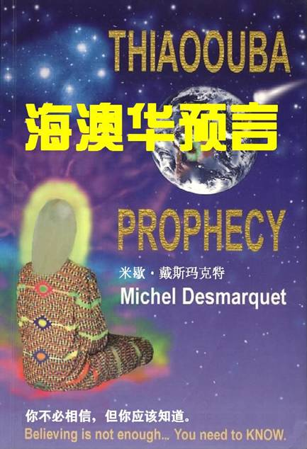
如果你是年轻人、中老年人，
——你最好能够看看这本书！
如果你是教师、新闻工作者或政府官员、公务员，
——你也最好能够看看这本书！
如果你是宗教徒、特别是基督教徒，
——你更应该看看这本书！
如果你是唯物、唯心主义者或者什么主义都不是，
——你可一定要看看这本书！
如果你向往并追求自己的精神世界能有一个质的飞跃，
或者，你是一个不折不扣的崇尚事实而不是喜欢虚假的人，
——你必须看看本书！
《海奥华预言》是法国人米歇的外星十日游记，非常值得一读。该书揭示了地球史前文明、因果报应、生命轮回、基督来历、人种起源、宇宙旅行等奥秘。
他们有眼却不看，有耳却不闻。——《圣经》
你不必相信，但你应该知道。（Believing
is not enough, you need to know.）——作者
我是遵命写这本书的。
我发誓这是发生在我身上的一系列事件的报告。
我估计在一定程度上，这非同寻常的故事对有些读者来说有点象是一本科幻小说、一个彻头彻尾编造的故事，但我并没有编故事所需要的想象力——这不是科幻小说。
正直、善良的读者会看出，我从我的新朋友们那里带给地球人类的、信息的真实性的。这些信息，尽管涉及到了许多种族和宗教，但这并不说明本人有种族和宗教偏见。
米歇·戴斯玛克特（Michel
Desmarquet）
1989年1月
我，本书作者，米歇·戴斯玛克特（Michel
Desmarquet），愿在此公开感谢简妮·海德森（Janet
Henderson），是她编辑了本书。她做得非常好，对我的真实报告的每个字都做到了绝对尊重。
许多编辑人员想按他们的愿望改动一些词和句，为的是就象他们自己说的
“好看”
。这对于一本科幻小说来说是可以的，但简妮尊重了我和涛的愿望。
她做得很好，相信我。
地球上有许许多多现代科学仍然无法解答之谜，如姆大陆、大西洲、百慕大三角洲、远东岛、玛雅文化、地轴变迁、金字塔的来源和用途、地球上的第一个人、UFO、外星人……等等。这些谜，困惑了我们地球人类已经数千上万年了。本书的作者，米歇·戴斯玛克特，在他奇异的九天外星旅行之后，终于给我们带回来了答案。
但是，我要介绍《海奥华预言》并不是因为它告诉了我们这些谜的谜底，而最重要的原因有以下几点：
一、关于基督教的起源和变迁。常使我们迷惑不解的是，上帝既然是万能的，为什么不造出完美的人类？祂到底事先知不知道亚当和夏娃会偷吃禁果？我们祖先的罪会遗传给我们的后人吗？这个罪是物质的还是非物质性的？我们的罪又能因为基督的献身而灭掉吗？灭掉了吗？一个本来就能死而复生的人（基督），那他的死对他来说又有什么损失和痛苦？为什么上帝关心的似乎主要是中东一带国家的民众，而很少顾及其它地区的民众？……上帝是谁？基督是谁？……对这些问题，书中都给出了答案。
二、人有无生死轮回？这是基督教和佛教之间的众多不同点之一。书中明确地说明——人有生死轮回，死后不会只有天堂和地狱两个去处。我们也知道，现代精神医学中应用的逆行催眠法就有可能使人回忆其前一生、甚至前几生的生活经历；灵媒也能使我们和死去的亲人通话，而那些亲人会告诉我们：他们并不是在天堂、也不是在地狱；我们也不时地听说，有人能记得他前生的经历，而科学家们对此也都进行过极其严格的检查和验证，无法否定这是事实（参见《轮回法则》一书）。就因为不知道人的生命有轮回，更不知道这轮回的法则，人们将名誉、地位、金钱等等当成是最值得追求和夺取的目标——为了个人利益而撒谎、欺骗，甚至抢劫、谋杀，挺而走险；或吸毒、卖淫、自杀，将别人和自己的生命当儿戏。
三、我们比我们的祖先先进吗？这似乎是一个奇怪的问题，因为，现代科学成就随处可见（物质方面）。
毫无疑问，我们的祖先更好——我们现在仍然不明白金字塔是怎么建造的，几百吨重的大石块是怎样精确地砌在一起的；科学界至今对我们的中医、针灸原理还不十分明了。本书明确指出，我们的祖先不仅在物质技术上比我们还先进，就是整个社会生活都比我们文明。看看我们现在的电视、报纸，那一天不是暴力、抢劫、谋杀、贩毒？
美国号称文明自由的国家，却几乎不得不人手一枪，至使校园枪声不断，最小的罪犯竟然是个六岁的孩子！他们强行推行官方的政治信念，选择性地向国民提供世界资讯。
科学给我们带来了汽车、飞机、电脑、自动化生产，也把我们推到了核战争的边缘！环境污染、臭氧层破坏、物种灭绝、大量杀伤性武器泛滥……
我们的文明何在？科学家能使我们摆脱这一切魔影吗？
远古时代的人类所要应对的只是大自然的挑战，而我们现在要应对的不仅是干旱、洪涝、台风、地震、臭氧层破坏、环境污染，还有医学界疲于奔命的、不断出现的、新的病种！再加上人类自身的种族歧视、种族灭绝、侵略战争！想一想，我们现在的人与人的关系吧，我们是否在潜意识里将对方的政治集团、政党、国家、种族等等，看成了随时可以鄙视、欺骗、利用、打击、甚至是残害我们的那个不可相信、不可信任的对立体？我们看对方是否仍然具有人性？如果不是这样，又何必有不同的政党、国家及国家联盟？……难道这只是危言耸听？
《海奥华预言》的作者及海奥华的人们明确地指出——地球人类现在正走在自我毁灭的道路上，而科学正在加速着这个过程；人必须向自己的内心寻找自由、平等、欢乐、幸福，科学也必须为我们的灵性成熟而服务。现实却恰恰相反——科学使我们越来越远离我们应该走的道路！我们并不是责难科学家和他们的研究，只是在此强调，不要被科学万能的光环搞得看不清了我们自己脚下应该走的路——他们和我们一样，不知道自己每天在干些什么！
四、如何才能使我们的社会免除罪恶，使人人过上真正平等、自由和幸福的生活？这方面，西方社会的典型观点是——必须自我奋斗，同时用法律来规范。殊不知，正是这自我奋斗的个人主义才造成了以我为主、不择手段的犯罪行为！在民主和人权的口号下，法律制裁越来越松、某些政治集团的利益，任意修改符合他们自己利益的法律，社会犯罪率居高不下。也有观点认为，应采取社会福利制度。但这在某些国家数十年的实践中，却造成了人们“不思进取和贡献”的懒惰倾向。当社会生产力达到极高的水平、物质极大丰富的时候，人的私心、私欲就会灭绝，进而产生罪恶的温床就会消失吗？一句话，人的物质享受欲望有尽头吗？当我们没有电视的时候，有一台黑白电视机就满足了；当有彩色电视后，后者又成了奋斗的目标，平面直角电视、立体电视、超微电视、手腕电视……无穷无尽。
随著科学的进步，人们的欲望已没完没了——住在美国的人想到华盛顿去旅游，游完美国想到欧洲，游完地球还想到月亮、火星、太阳系、银河系以外去。巨商豪富们的欲望没有尽头，平民们难道就会只满足有吃、有穿、有住吗？物质到何时才算是极大的丰富？海奥华的人们明白地告诉我们——地球上曾经有过极其辉煌文明的时代，这就是姆大陆时代！那时，人们生活得自由、平等，物质丰富、犯罪率极低。而那种社会的维系靠的是心灵修行和极其严厉的刑法。
心灵修行使人们有看到人体辉光和感应思想的能力。这样，一个人的秉性、修养水平，连同他的思想都在有能力的人面前表露无疑。当整个社会的成员都有一定的心灵修行水平的时候，那些罪犯、私心的政治家、伪善的宗教大师以及个人的虚伪、谎言等等还能隐藏吗？再加上严厉的刑法，会使人人明白——罪恶的事是万万不可为的，否则，毫无悔改的余地。读者想一想，这样的社会难道没有可能？
这就是我们想给读者介绍本书的主要原因。
书中涉及了地球上许许多多奇怪的事情，从前述的地球之谜到心灵感应、轮回转生、抗地心引力、黄种人和黑种人的来源、姆大陆和大西洲的消失、月亮之谜、火星人等等。
有些读者可能觉得很难理解或根本就不相信，而我的看法是——当我们不相信某件事的时候，问一下自己，如何才能使我们相信？当我们相信某件事的时候（如民主自由、科学技术、火星探测、复制动物、地球上有个南极洲等），我们的根据又是什么？难道就靠我们的眼、耳、鼻、舌、皮肤感觉？我们是否曾想过，我们是否曾经上过自己这些感觉器官的当？难道能因为我们自己的眼睛看不到紫外线、耳朵听不到高频率的声波、鼻子闻不出特殊的气味，就能说这些光、声和味就不存在了吗？
再则，人类的“逻辑”推理正确吗？逻辑三段论，使我们的推理错误的例子还少吗？科学理论的进步过程，实质上就是一个不断证明着我们的逻辑错误的过程。
对于这一切，作者说的很明白——你不必相信，但你应该知道。
我也这么认为。
我突然醒来了，不知道睡了多久。
我完完全全清醒了，精神饱满，感觉敏捷。可是，我的天，这是什么时间？利娜正睡在我身边，她的双手紧握着，就像她平常睡觉时那样……
我一点都不想再睡了，而且，此刻大概已经是早晨五点了。我起了床，走到厨房，查看了一下表，可是才半夜零点三十分！
对我来说，在这个时间醒来真是太罕见了。我脱下睡衣，穿上裤子和汗衫。干吗呀？我不知道。我也没法解释自己为什么会走向书桌，并找了张纸和圆珠笔，看着我自己在写什么东西，好像自己的手有它自己的脑子似的——
“亲爱的，我要离开大约十天，一点都别担心。”
我将留言条放在电话机旁，走到门口，又走到走廊。走廊里那张桌子上面仍有昨晚玩的象棋，棋盘上白色的国王仍在那静静地待着。我悄无声息地打开那扇通往自家花园的门。
夜晚充满了一种神秘的亮光，这光却显然不是由天空那些星星发出的。我本能地努力回想今天的月亮是不是满月，猜想月亮大概要升起来了。这儿，澳大利亚的东北，我居住的地方，夜晚一般是很明亮的。
我走下楼梯，来到旋松旁。平常，在夜晚这个时候，这里会有奇妙的音乐会——青蛙和蟋蟀的歌声会充满整个夜空。可是现在，到处是死一样的寂静，我怎么也搞不清是怎么一回事。
还没走几步，藤树的颜色突然变了。房屋的墙壁和旋松——所有的一切都沐浴在一种蓝色的光辉之中。草坪在我脚下晃动不停，旋松下的地面也是如此。藤树变了形状，而房子变得像纸一样在风中漂浮起来。
我开始感觉有什么不对劲，并打算返回房间，突然觉得自己非常轻柔地离开了地面。我在上升，起初是缓慢的，高过藤树之后，就加快了速度，看到房子在脚下变得越来越小。
“怎么啦？”我极度惊慌地喊起来。
“没什么，一切正常，米歇。”
至此，我相信我自己是在做梦。
我前面站着一个相当高大的人，她穿着件连衣衫，戴了个完全透明的头盔，正在微笑着注视着我。
“不，你不是在做梦。”她说道，回答了我头脑中的问题。
“是这样的。”我回答道，“因为在梦中总是这样的，但最终会发现自己掉在地上，头上碰起个大疱！”
她微笑着。我继续讲，“你在对我讲法语，我的母语，可我们是在澳大利亚，我说英语，这你是知道的！”
“我知道。”
“这肯定是个梦——而且是个荒唐的梦，不然，你在我家房屋院子里作什么？”
“我们不在你家的房屋院子里，而是在它的上空！”
“得了，这是一个梦，你看我说对了吧，我得掐一下自己。”说着，我真的就掐了一下——哎呀，好痛！
她又笑了。“现在你满意了吧，米歇？”
“可是，如果这不是一个梦，为什么我现在会坐在岩石上呢？那边那些人是谁？他们怎么穿着上个世纪的衣服？”我开始辨认着，在乳状的光线下，那些正在交谈着的、在稍远处走动着的人们。
“而且，你是谁？你的身材怎么和我们不一样？”
“我的身材正常，米歇。在我们的星球上，我们都是这样的，一切都正常。我亲爱的朋友，希望你不要计较我这么称呼你！如果我们还不是好朋友，我相信我们很快就会是好朋友的。”
她站在我面前，微笑的脸上显露着聪慧，全身都散发着和蔼慈祥的气息。和她在一起，我有一种非常安心和平静的感觉。有生以来，我从未遇见过这样的人。
“当然，你称呼我什么都行。你叫什么？”
“我的名字叫涛（Thao）。但首先我想让你知道，从现在起，这一切都不是梦。的确，这是很不平常的事情，因为某种原因——这随后会给你解释的——你已经被选出来作一次旅行，这对地球人来说，还没有几个人N能这么做到过，特别是近一段时期以来。”
“我们，你和我，此时此刻正处在另一时空——一个平行于地球物质空间的时空。为了能使你和我们的这次旅行得以成功，我们应用了一种‘时空锁’（airlock）。此时，你的时间是静止的。你能够处于这样的状态达20~50地球年，而在你返回时，你的年龄会像你未曾离开过一样，你的物质身体将保持丝毫不变。”
“可是，这些人在干什么？”
“他们的存在是可以理解的，以后你会知道。他们的人数很少，他们仅会由于自杀和意外事故而死亡，时间对他们来说是凝固的。这儿有男人也有女人，也有一些动物，他们的年龄在3～5万年之间，甚至于更久。”
“可是他们为什么会在那儿？他们是怎么到那儿的？他们在哪儿出生的？”
“在地球上，他们之所以在那儿，仅仅是因为意外。”
“因为意外？你指的是什么意思？”
“很简单，你听说过百慕大三角吗？”我点了点头，“那么，很简单，在这儿，还有在其它一些不完全被知道的地方，这一层空间与你们的物质空间相融合，二者之间形成了一个通道（warp）。离这个通道很近的人、动物、甚至其它物质，会被完全吸入。所以，举例来讲，一只船会在数秒钟之内消失得无影无踪。有时候，某人或某些人会在数小时、数天或数年之后返回你们的地球空间；但更多的则是，他们一去不返了。”
“若有人真的返回，并向人们宣说他们的经历，绝大部分的人都不会相信他所说的——如果他坚持，他就会被当作疯子的。在明白了人们会这样看待他后，这些人也就只好闭口而不再提这种经历了。有时候，返回的人得了遗忘症，如果他恢复了一定的记忆，那也不是另一空间的记忆了。因此，他也不可能对揭示事情的真相有任何作为。”
“有一个典型的例子，”涛继续道，“就在北美，有人进入了另一空间——一个年轻人到离家数百米远的水井去打水的时侯失踪了。大约一小时后，他的家人和朋友们四处寻找他。事情本来很简单，因为刚下了约二十厘米的雪，他们只要跟着那人的脚印就行了。然而，就在田野中央，脚印消失了。四周即无树木，也无任何高大的岩石可让他跳——没有一点可奇怪和可怀疑的自然环境——可脚印就是消失了。有人认为他是被外星人攫走了，但实际上并不是这么回事，以后你会明白的，他其实是被吸进另一层空间了。”
记得当时我说：“我好像是听说过有这么回事。可是你是怎么知道这一切的呢？”
“这些，你以后会明白的。”她没有正面回答我的问题。
我们的谈话被一群人的突然出现打断了。这些人是如此奇怪，以至于我又开始怀疑这一切是不是在梦中——大约十二个男人、还有一个女人模样的人，从离我们一百米远的一堆石头后面冒了出来。更奇特的是，这些人像是史前历史书中走出来的一样，他们蹒跚着像大猩猩一样的步态，手里挥舞着现代人怎么也不可能拿得动的、巨大的棍棒。这些吓人的生灵们径直冲着我们而来，吆喝着像野熊似的。我转身要逃，可我的同伴告诉我没什么可怕的，只管待着别动就行了。她将手放到腰间的扣子上，转身朝向来者。
我听到一连串轻微的咔嗒声，五个长相最难看的人应声倒地，一动不动了。剩余的人完全止住了脚步，开始呻吟起来，并拜倒在我们的面前。
我又看了一下涛。她站着像个雕塑，神色凝重，眼睛盯着对方，似乎试着将他们催眠。后来我才知道，她是用心灵感应向对面那个女人发布命令。这个女人突然站了起来，用一种喉音朝着其余的人下达命令——我猜是这样。这些人起身抬起那些尸体，朝着来的方向退回了。
“他们在做什么？”我问道。
“他们将用石头埋葬他们的同伴。”
“你杀死了他们？”
“我不得不这么做。”
“你说什么？我们真的这么危险吗？”
“那当然了。这些人在这儿已经有一万多年了，谁知道，我们没有时间研究这个，而且，这不重要。但这更清楚地证明了我刚才对你讲的事情。这些人来到这个空间，他们就永远地生活在这里了。”
“太可怕了！”
“我承认，但这是自然法则之一，因此也是宇宙法则之一。进一步讲，我们处于极其危险之中，因为他们的行为与其说是像人不如说是像野熊。我们和他们之间对话是不可能的，就像他们与这个空间的其它生灵之间的对话是不可能的一样。一方面他们不懂得语言交流，另一方面，他们根本就不明白他们自己怎么了。我们真的很危险。而且，让我说，我刚才实际上是帮了他们一个大忙，因为我解脱了他们。”
“解脱？”
“别显得这么震惊，米歇。你很清楚我说的是什么意思。他们已经从物质身体（肉体）中解脱了出来，现在可以进入生命轮回了。像所有的生命体一样，进入正常的轮回程序之中。”
“那么，如果我没理解错的话，这层空间是个受苦难的地方——像阴间（hell）或地狱（purgatory）？”
“我还没有意识到你还是个宗教徒！”
“我这么比喻是向你表明我在努力理解你的话。”我回答道，同时我奇怪，她怎么知道我是不是宗教徒？
“我知道，米歇，我是在逗你玩呢。不错，这是某种地狱，可是，这是只是一种意外。实际上，宇宙中还有多层这样的时空，这只是其中之一。天老儿（Albino），就是那些生来肤发皆白的人，是一种意外；四叶苜宿也是一种意外（苜宿正常为三叶——译注）；你腹中的阑尾也是个意外，医生们至今也不明白人体中有个阑尾有何用，答案是——没什么用处。平常，自然界中任何事情的存在都有它明确的原因——这就是我为什么将阑尾也列为意外了。”
“生活在这层空间的人们无论在精神上、还是在肉体上都没有痛苦。比如，如果我打你，你不会感到痛。但如果这打击很强，虽然你仍不觉得痛，但你还是会死的。这很难理解，但就是这么回事。这些人不知道我现在给你解释的这一切，好在他们会尝试自杀。但自杀，在这里，也不是一个解脱的办法。”
“他们吃什么？”
“他们既不吃、也不喝，因为他们感觉不到饿和渴。在这里，记住，时间是静止的。同样，死者的尸体也不会腐败。”
“太可怕了！那么，能帮助他们的就只能是将他们杀死了？”
“你总结得不错。这是一种办法，但还有另一种办法。”
“另一种是什么？”
“将他们送回他们本来的那个空间中去——但这会导致一系列问题。在这里，正如我说的，这些人已经呆在这里数千上万年了，如果他们再回到那个已经离开如此久的空间，你看会发生什么样的事情呢？”
“他们会发疯的。而且，他们什么也做不了。”她微笑着，肯定了我的断言。
“你的确是我们要找的人，米歇，但注意别早下结论，你还有很多东西要学的。”她将手放在我的肩上，涛这么做时还不得不弯下身子。她大约有二米九零，比我明显高了许多。
“我知道我们选对了人——你机敏、伶俐。有两个原因，使我现在无法对你解释所有的事情。”
“什么原因？”
“首先，现在解释为时还过早。就是说，在理解这些解释之前，你还得有进一步的基本思想和知识准备。”
“我明白。那第二个理由呢？”
“第二是他们在等着我们，我们得动身了。”
她只轻轻一触就使我转了个身。随着她的目光，我吃惊地睁大了眼睛。百米之外，有个巨大的通身发出蓝色光芒的圆球状的东西——后来我知道它的直径大约有70米。这光并不是静止不动的，而是微微闪烁，像夏日阳光下远处沙滩上的热雾。它离地面约10米，没有门、没有窗，也没有楼梯，光滑的像个蛋壳。
涛示意我跟着她走进这个巨球。那个时刻，我记得清楚极了。一瞬间，我惊讶得思维都好像停止了——一系列连续的图像在我脑海中闪过，就像电影或录像片处在“快进”状态。
我看到自己正在将此次旅行告诉我的家人，还想起报纸上那些关于UFO的文章……特别是当记起自己家人时，心里那种异常悲伤的情绪油然而生。这种情绪通透全身，因为我非常爱他们。我感到自己像被套住的动物，心想，再也看不到他们了……
“不必害怕，米歇。”涛说道，“相信我，你会很快平安返回和家人团聚的。”
我相信自己此时吃惊得嘴张得老大，这逗得涛发出一种优美好听的笑声——这种笑声在我们地球人中极难听到。这已是第二次了，她能读懂我的心念！第一次我还以为是个碰巧，而这一次是确切无疑的了。
当我们离这巨球很近时，涛让我站在她的对面，彼此相隔大约一米。
“任何情况下都别碰我！米歇，记住是在任何情况下，别找任何借口——明白吗？”
我被这正式的命令着实吓了一跳，但我还是点了点头。她将一只手放在左胸前一个大“徽章”上，另一只手握着一个从腰带上取下的、像一个大圆珠笔似的东西上。
她将这“圆珠笔”举到头顶，指向巨球。我记得，看到这笔发出一束绿色的光柱，但我不敢确定。然后她将这笔对着我，而另一只手仍然压在那个大“徽章”上。毫不费力地，我们就升高了——朝着那巨球的方向。
就在我以为我们快要碰上那巨球时，巨球的一部分壁缩了进去，就像巨大的活塞缩进气筒一样，形成一个椭圆形的、高约三米的入口。
我们重新落了地，站在这巨球中的地板上。她将手从大“徽章”上取下，然后又将笔扣回到腰带上，其熟练程度表明，她经常这么做。
“来，现在我们的身体相触没有关系了。”她说道。
她将手放在我的肩上，领我朝着一束蓝光走去。这蓝光太强，我不得不半闭着眼睛。我在地球上还从未见过这种蓝色。就在我们马上要进入这蓝光的时候，有灯光的那面墙就“让我们通过了”——这个现象，就只能这么描述了。本来，要按涛领我前进的方式，我发誓我的头会给碰起个大疱的。但我们穿过了，像个幽灵一样。我脸上那惊吓的样子使涛开怀大笑，这倒使我安心了不少。
我清楚地记得她那笑——像清风一样，使我惊慌的心立刻平静了下来。我过去常和朋友们谈论“飞碟”，而且相信它们的存在——但当你真的面对现实时，你心中的问题会多得头都会爆炸的。当然，我内心里还是高兴的。从涛对我的态度上，我觉得自己不必担心。可是，她不是独自一人——我担心的是其它人会怎么样。尽管如此，这趟旅行还是很让人着迷的。
我仍然担心，我是否真的还会再见到自己的家人。只数分钟前，我还站在自家院子里，而现在，他们是那样遥远。
我们现在是在一个“隧道”样的走廊里“滑行”。走廊尽头是间小屋，其墙壁是极强的黄色。亮得使我不得不闭住双眼。屋顶成圆穹状，像个倒扣的大碗。
涛给我戴上一个透明的头盔。我睁开一只眼一看，这头盔使那黄光不那么刺眼了。
“你觉得怎么样？”她问道。
“好多了，谢谢，可那光——你怎么不怕它？”
“那不是光，那是这墙壁目前的色彩。”
“为什么是‘目前’？你带我来是为了重新油漆这间房子吗？”我开玩笑道。
“没有油漆，这是振动，米歇。你还以为你是在你们的地球空间？可事实上你不是。你现在是在我们的一个远程宇宙飞船里。这飞船能以比光速还要快数倍的速度飞行。我们就要动身了，你能不能躺在那张床铺上？……”
屋子中央有两个盒子——很像没有盖的棺材，我躺进一具，涛躺进了另一具。我听见涛对我讲话，那语言我不熟悉，但听起来却非常悦耳。我想将身子抬起一点点，却不能，身体被一种无形的力量固定住了。
黄色从墙上消失了，代之以同样强度的蓝光——这油漆活又干了一次，屋子的三分之一突然变暗了。我注意到微弱的光像星星一样在闪烁。
涛的声音在黑暗中十分清晰。“那些是星星，米歇，我们已经离开了那层奇怪的时空，也要离开你们的地球，去访问我们的星球了。我知道你会对这趟旅行十分感兴趣，也会对我们的出发感兴趣，但出发将是缓慢的，为的是你健康的原因。我们可以看着我们前面的屏幕。”
“地球在哪里？”
“我们还看不到它，因为我们还在它的上空大约10000米的高空，……”
突然，出现了一种说话声，说得像是刚才涛说的那种。涛作了简短的回答，然后那声音又对着我用法语讲——地道的法语（但音调比正规法语还悦耳）——欢迎我登上飞船。这很像我们地球上航空公司的“欢迎乘坐我们航空公司的航班。”记得我当时感到这很有趣……尽管知道我现在是在不平常的环境中。
同时，我觉得有一股轻微的冷气流过，像是开了空调。以后的事情变化得很快——屏幕上，出现了一个星球，那肯定是太阳。最初，它好像碰着地球的边，或准确地讲是南美洲，这是我后来才知道的。
我又一次怀疑起自己是在做梦了。
一秒又一秒，美洲变得越来越小。澳大利亚还看不到，因为太阳光还照不到那里。现在，地球的轮廓可以辨认得出来了。我们似乎在绕着地球朝北极方向飞行。在那儿，我们改变了方向，以不可思议的速度离开了地球。我们那可怜的地球变得像个篮球，又成了个台球，直至完全消失。最后，整个屏幕都充满了宇宙空间那黑黝黝的蓝色。
我转头朝向涛那边，期望她能给我一些解释。
“你喜欢这景色吗？”
“好极了，但这么快——有可能以这么快的速度飞行吗？”
“这不算什么，我的朋友，我们‘起飞’得非常轻柔，只是现在我们才以全速飞行。”
“有多快？”我打断她的话。
“比光速还快数倍。”
“比光速？多少倍？这不可能！那光障怎么办？”
“我能理解，这对你来讲是不可思议的，就算是你们地球的专家也不会相信——但这毕竟是事实。”
“你说比光速快数倍，到底是多少倍？”
“米歇，在这次旅行中，有许多事不会专门对你解释的——许多事情，也有许多细节你不会得到答案的。我们的飞行速度就是一例。对不起，我理解你对所有事情的好奇心不能完全满足时的失望心情，但将会有非常多的、新的和有趣的事情等着你去看、去学习。因此，当有些事情不能让你知道时，你不可太过份在意。”
她的态度表明，此事到此为止。我也就没有再坚持，觉得再坚持就显得自己粗鲁无理了。
“看！”她对我说。
“那是什么？”
“土星。”
读者必须原谅我，我的描述达不到那么详细，也满足不了她／他的愿望。但必须理解，我当时还没有完全恢复自己的所有感觉。在如此短的时间里，我看到了如此多新奇的事情，有时候就有些张冠李戴了。
随着飞行，这著名的土星在屏幕上变得越来越大，它的颜色美丽极了——我们在地球上见到的色彩是远不能比拟的。有黄、红、绿、蓝、菊黄色等，每一种颜色都有更多的复合色和更多的浓淡色，形成及其丰富多彩的光谱。这些光不断地分离，又复合成新的色彩，增强了又变淡了，形成那著名的土星光环。这绝妙的奇观在屏幕上占的面积越来越大。
我感觉到自己已不再被那力场所束缚了，就想去掉我的面具，这样好将那光环的色彩看得仔细一些。可涛示意我别动。
“土星的卫星在哪儿？”我问道。
“你可以看到两个，几乎一边一个，在屏幕的右边。”
“我们离它有多远？”
“肯定在600万公里左右或更多，控制台那边知道准确数据。要我估计得更准确，我得知道我们的摄相机镜头的焦距现在是多少。”
土星突然从屏幕的左边消失了。屏幕又恢复了那黑黝黝的蓝色。
我相信我当时有一种前所未有的、洋洋得意的感觉。这种独特的旅行正是我求之不得的——为什么呢？我过去对此从未所求，连想也不敢想的事件，谁会期望呢？
涛站了起来。“你也可以出来了，米歇。”我依言照办，和她一边一个，站在屋子中央。直到那时，我才注意到她头上不戴头盔了。
“你能否解释一下，”我问道，“为什么我不戴头盔时你戴，而我戴时你却不戴？”
“很简单，我们星球上的细菌种类和你们地球上的不一样。地球环境对我们那儿的细菌来说是极好的培养液。因此，为了与你接触，我必须注意这基本保护。你对我们来说也曾是危险的，但现在不是了。”
“我不明白你说的。”
“当你进入这个房间时，那色彩对你太强了，我就给了你一个头盔，就是你现在戴的这个。这是专门为你设计的。的确，我们能够估计到你的反应的。”
“没多久，房间的色彩由黄变蓝，那是因为你身上80%
的细菌都被杀死了。之后，你感觉到一股冷空气，像空调一样，那是又一种消毒。其机理就是应用放射线（radiation），虽然这不是准确的术语——因为这没法翻译成任何一种地球语言。这样，我就被百分之百被消毒了，而你身上却仍有相当多危害我们的细菌。我现在给你两粒药丸，三小时之内，你就可以被认为和我们一样‘纯净’而成为我们的一员了。”
说着，她就从床边一个小盒子里拿出两粒药丸，还有一个装有某种液体的试管并交给了我。我想，那试管里是水。我将药丸和那液体都服了下去。之后，哎呀，一切都发生得非常快，非常奇怪。
我看见涛用手托起我的身体，将我放进那盒子里，去掉了我的面具。这一切都是我从离我2～3米的地方看到的！
我能够想象得到，这本书里描写的某些事情，对没有思想准备的读者来说是很难理解的。但我的确能从远方看到自己的身体，而且我能随意念在房间里自由活动。
涛说道：“米歇，我知道你能够看得到我和听得到我的讲话，但我现在看不到你（灵体），因此，在对你讲话时，我没法看着你。你的灵体（Astral）已经暂时离开了你的肉体。这没有什么危险——你不必担心。我知道这对你来说是第一次，有些人会因此而惊慌失措的。”
“我给你的两种药丸，其中一种是为了清除你身体中所有的、对我们有害的细菌的；另一种是为了使你的灵体能暂时离开你的身体的——其效力会持续三小时，并用这三小时来净化你的身体。这样，你就可以随意走访我们的宇宙飞船而不会对我们造成污染，也不会浪费时间。”
这似乎很奇怪，但我觉得这很自然——我也就随着她的解释了。这妙极了，她来到嵌板前，嵌板就滑开了，使我们能够穿过一个又一个房间。我和她之间保持着一段距离，每次，那嵌板在我到达之前就关闭了，但我仍然能径直地穿过它！
最后，我们来到了一间直径有20米左右的圆形房间。里面大约有12个“宇航员”，全都是女性，都有着像涛一样的身材。
涛朝着其中的四个人走去。她们分别坐在巨大的、看起来很舒适的椅子上。这些椅子围成了圆圈。
当她在旁边一张空椅子上坐定之后，这四个人转过头朝着她，脸上都带着询问的神情。她好像乐意要让她们等一会儿似的，但她最终还是开了口。
我又一次极有兴趣地听到了那种语言——那半谐音我还是第一次听到。其音调是那样悦耳动听，就像是在唱歌一样。她们全都显得极有兴趣地听着涛的报告。我猜她们是在讨论着我，我相信我的猜想是正确的，因为，我是她们这次任务的主要目标。
当涛停止了发言，她们就开始了一连串的提问。又有另外两个宇航员也加入了她们的讨论。讨论越来越热烈，气氛更加活跃。
她们的谈话我一句也听不懂。同时，我看到有三个人来到屏幕前，屏幕上显示出三维图像。图像的色彩极为逼真，我猜想这是一间中心控制室。我的隐身更是有趣，因为每个人都在忙着自己的工作，而不必为我的存在而受到干扰或分散其注意力。
在一个较大的屏幕上，我看到了许多小光点，有大有小、有亮有暗，但是都持续不断地朝着它们恒定的方向运动。有些朝屏幕的左边，有些朝右边。当它们在屏幕上变得越来越大时，速度也就越来越快，最后从屏幕上消失。它们的色彩非常鲜亮，极为漂亮——从淡淡的光辉到明亮的黄色，就像我们太阳一样。
我很快就意识到它们是许许多多的行星和太阳，我们正航行在它们中间。它们在屏幕上无声的运动给我留下了极深刻的印象，也说不出我到底欣赏了它们有多久。
突然，控制室里充满了一种声音——一种柔和而又威严的声音。同时，许多灯光都开始闪烁了起来。那些正在与涛谈话的宇航员们立刻转身返回了她们的控制台。她们的椅子显得好像是专为她们每个人设计似的。每个人都在全神贯注地盯着眼前的屏幕。
就在这个大屏幕的中央，我注意到有个很难形容的巨大质团。硬要说的话，那是个圆形的、蓝绿色的东西。它固定在每个屏幕的中央，一动不动。
房间里静极了，众人的注意力都集中到了三个宇航员身上了。她们控制着一个有些长方形部件的装置，有点像我们的计算机。
突然，在一面我认为是墙的巨大墙面上，我看到一幅使我目瞪口呆的纽约的画面——不，那是悉尼。我自言自语道。可是那桥却不一样……那是桥吗？
我的惊讶还在这里——我问涛，但我忘记了自己此时已“不再在我的肉体中”了，没有人能听到我的声音！但我能听到涛和她的同伴们对她们眼前景色的评论！因不懂她们的语言，我自然明白不了什么。
但我相信，涛没有对我撒谎——我们的确是远离地球了。涛曾给我解释过，我们是以快于光速数倍的速度飞行的……我已经看到过土星在我的身后了，之后，又是我认为的行星及那些太阳——如果我们现在又回到了地球，那该怎么解释呢？
涛大声讲起了法语，这使得大家都转头朝向她。
“米歇，我们现在停止在阿莱姆•爱克斯三号星球（Aremo-X3）的上空，它比地球几乎大两倍。就像你在屏幕上看到的，很像你们的地球世界。”
“我现在不能给你详细解释我们此行的任务，因为我得参与航天飞船的操纵，但我以后会给你解释的。为了使你明白一点，我只能告诉你，我们此行的目的与你在地球上知道的那种原子辐射有关。”
所有的人都在忙着，每个人都准确地知道什么时候该做什么事情。飞船现在是静止的，巨大的屏幕上显示出一个城市中心的景色。读者应该明白，这个巨大的屏幕，实际上只不过是一个巨大的电视屏幕。但上面的图像是如此鲜明、逼真，就好像我们能从一栋楼的窗户里看进去似的。
我的注意力又被吸引到了另一个小一些的屏幕上，它们由两个宇航员监视着。在那上面我可以看到我们的飞船，就像在另一层时空时看到的那样。
我吃惊地注意到，在我们这个飞船的正中稍下方，有一个小圆球在下降，活像母鸡在下蛋一样。一旦出去，它就加速朝下面的星球飞去。当它从屏幕上消失后，另一个小球也同样被释放出去，接着是第三个。我注意到每个小球都被不同的宇航员面前的屏幕分别监视着。
这些小球的下行，现在可以在这个大屏幕上显示出来了。它们与飞船之间的距离本来应该很快就看不到的，但它们却仍然被显示在屏幕上。我想，这摄像机必定有着巨大的聚焦能力。的确如此，因为在第一个小球从屏幕的右边消失的时候，而第二个就从左边消失。
现在我们可以非常清楚地看到中间这个小球下降的过程。它降落在一个巨大的广场上，广场周围是众多的楼房。它停在那里，好像离地面还有几米似的。
另两个小球的降落过程也同样地被监视着。一个小球停在一条横穿整个城市的河流的上方；另一个停在城边的山岗上空。
出乎意料地，屏幕上出现了一幅新景色。我现在能很清楚地看到那些大楼的门、或门廊、或那些本来应该是门的地方。那些地方现在是一些裂口。直到现在，我清楚地记得，我当时觉得这整个城市是多么奇怪和难以理解——
一切都是死寂不动的。
用一个简单的词就可以描写屏幕上的景色——废墟！
我看到每条街道都是乱七八糟的。街上到处散布着一些“土墩”样的东西，一个接着一个——有些离街道远一些，而有一些就放在大楼前的路中央。在几乎没有察觉的情况下，摄像机的焦距越来越大了。我很快就明白了，这些“土墩”可能原本是一些运载工具——一些在形状上多少有点像我们地球上平地船的运输工具。
我周围的宇航员们在执行着她们的任务。从那些小球里伸出一条长长的管子，慢慢地向下降去。在长管抵达地面时激起了一些尘土，使它们的形状变得模糊难辨；从河流上空的小球上伸出的长管已经降到了水里。
我的注意力又被吸引到了屏幕上，那景色让人感到十分惊奇——就好像我们真的是在那条大街上。
在一栋黑黝黝的大楼入口处，好像有什么东西在蠕动……
我能感觉到这些宇航员中的某种躁动。猛然，随着一阵振动，那东西变得明亮了。我被眼前的景色吓坏了！而我的这些“主人们”，除了一些更快的窃窃私语和一些使人镇静的解释外，我只能说她们并没有多大的吃惊。
不管怎么说，我在屏幕上明明白白地看到的那东西，原来是个可怕的、足有两米长八十厘米高的蟑螂！
读者肯定在我们地球上见过这种虫子。特别是在炎热的天气下，在碗橱和潮湿的地方就可以看到它们。你会认为它们让人讨厌，但它们最大也不过五厘米！那么，请你想象一下刚才我描述过的情景，那该是多么让人恶心！
从小球伸出的管子现在开始收回。当它离地面刚一米时，那蟑螂突然急速地向那尚在动着的管子冲来。不可思议的是，它突然停止了，原来是大楼下面又冒出来一群虫子。这些生物们互相翻滚蠕动着，杂乱一片。
就在这时，小球上发出了强烈的蓝光，射到这些虫子身上。光到之处，虫子立刻就变成了碳灰——变为一股云雾状的黑烟，消失在大楼的门廊里，这使我惊奇不已。
从另外的屏幕上看，似乎一切都正常——河流上方的小球正在返回，山岗上的小球也正在抽回它的长管。它稍稍升高了一些，但又连同它顶上的第二个圆球再次降落了下去。我猜测，宇航员们是在采集那里的土壤、水和空气中样本。”
“由于自己处于灵体状态，我没法向涛问任何问题，她任何时候都在和另外两个宇航员交谈着。这些小球快速上升，很快就到了被这飞船“吸”进来的状态。
当这些操作都完成之后，涛和另外那两个宇航员转身背着她们的操作台。
屏幕上的景色立刻就变了。我知道，当另外两个宇航员接替涛的工作的时候，就意味着我们又要出发了。
我看到所有的宇航员都是同样的姿势，这使我迷惑不解。后来我才知道这是因为一种立场将她们固定在了椅子上，就像在地球上我们将飞行员固定在座位上一样。
“太阳”的光辉穿过红色的雾气照在这个星球上。起飞后，我觉得我们是在绕着这个星球以恒定的高度飞行。事实上我们能看到沙漠样的土地在脚下闪过。地上有干枯的河床，它有时候纵横交错、有时甚至成直角，将大地分成不同的区块。我觉得它们有可能是运河，至少是人工的。
屏幕上又出现了一个显然是个完整的城市的景色，接着消失了，恢复到原来的黑色。飞船明显加快了速度，因为在屏幕上，湖泊和海岛都一闪而过。我突然听到了感叹声，飞船也随之减慢了速度。屏幕上出现了一个湖泊的近焦镜头。
飞船停了下来。我们能很清楚地看到湖岸，在一些大岩石后面还能辨认出一些建筑结构。我想，那大概是些居住区。飞船一停，那些小球就又像以前那样开始了工作。
湖岸上方停着一个小球，离地约40～60厘米高，小球的长管又降入了湖岸边的土中。画面上显然还有一群人……的确，猛一看，他们和我们地球人没有什么两样。
我们能很清楚地观察他们。屏幕中央有个女人，年龄难猜，有棕色的皮肤和垂在胸前的长发。从另一个屏幕上看，她一丝不挂，脸是畸形的，蒙古人的模样。初一看，我没有意识到她的脸是畸形的，我只以为是与我们地球人稍微不同的人种罢了——就像科幻小说的作家们喜欢描写的那样——都是畸形的、耳朵大大的。
接着又是另一番景色。在这一组里，男人和女人似乎像大洋洲东部的玻利尼西亚人（Polynesian）。他们中的多半既没有明显的畸形，也没有什么麻风之类的损害迹象。
他们看着小球，互相比划着什么，显然，小球的出现使他们躁动不安。更多的人从那建筑物中冒了出来，证实了我的猜想——那的确是他们的住处。
我可以将这些建筑物稍加描述——它们很像第一次世界大战时的“掩体”（Blockhaus）。上面有很粗的、大约有一米高的、烟囱样的结构，我猜那是为了通风用的。这些“掩体”的结构千篇一律，人们就是从那阴影处的开口中钻出来的……
在没有任何预感的情况下，我觉得自己被什么东西从这个控制间给吸了回去。我飞快地穿过好几个房间，直到发现自己又一次处在我的肉体待的那个地方了。
我的肉体仍躺在那个“床”上，就像离开时那样。事实上，一切都是在黑暗中。刚才那不舒服的镜头我记得清清楚楚。我觉得四肢像铅一样沉重，当试图抬起它们时，觉得像是瘫痪了似的。我纳闷，是什么东西使我这样？
我必须承认，自己当时多少有些慌了，迫切希望自己能再次离开我的肉体，但这无法成功。
不知道过了多长时间，屋子里渐渐地充满了十分舒适的蓝绿色的光线。最后，涛进来了，穿着另外一件衣服。
“对不起，米歇，让你久等了。但在你的肉体召回你的灵体之前，我没有任何办法帮助你。”
“没什么，我完全理解。”我打断了她的话，“但是，我相信自己遇到麻烦了——我动不了了——我身体里肯定有什么东西不再互相关联了。”
她微笑着将手放在我的手旁，毫无疑问，她是在操纵一个什么机关。立刻，我就恢复了自由。
“再次向你表示十分地对不起，米歇。我本来应当告诉你在什么地方可以找到安全器的控制按钮的。这里所有的椅子、床都有这种装置，一旦你坐下或躺在上面，安全装置就会被自动启动，危险立刻就会被降低到尽可能小的程度。”
“当飞船到达危险地带时，三个安全控制电脑会自动接通力场——先这么叫吧，而当危险消失时，它们又会自动解除力场的作用。”
“与此同时，如果我们真想在一个相当危险的地带并不想受这安全装置的控制，或只是想变换一下姿势，我们只需将手放在控制钮前方，力场就会立刻停止作用。当我们回到椅子或床上的时候，安全装置又会重新起作用。”
“现在，我要你去换一下衣服——我告诉你在哪里。在那里，你可以看到一个开着的盒子，你可以将你的衣服放进去。也就是说，将你身上所有的东西，除了眼镜以外，都放进去。那里有件衣服，你得穿上它，再回到我这儿来。”
涛弯下腰，拉起我的手帮我站了起来，我浑身都僵硬了。我走到她指的那间屋子里，脱得净光，穿上了她说的那件衣服。真奇怪，那衣服十分合身。尽管我一米七八，但比起我的“主人”，我只能算是个矮子了。
稍一会儿，我回到房间，涛特地给我一个上面有两个圈的东西——其实这是一副巨大的眼镜，稍微有点像摩托车手的目镜那样，但颜色很深。在她的要求下，我戴上了它。但要这么做，我得先取下自己的眼镜，不然我的眼镜会被这个大家伙给压碎的。这护目镜不大不小正适合我的眼窝。
“最后一点要注意的是，”她说道，她抬手指向屋子的分间，用某种方法激活了什么装置，因为那强光又出现了。尽管我戴着护目镜，我也感到了那强烈的光线。又一次，我感觉到了冷气流。
光灭了，冷气流也感觉不到了。但涛没有动，似乎在等待什么。在最后听到一种声音后，她才取下我的大护目镜。我又戴上了自己的眼镜。她要我跟着她，我们走过上一次我的灵体跟着她走过的那段路，又来到了控制室。
一个年老的宇航员（我在这里说她“老”，但大概我应该说她“严肃”
更合理，我认为她们好像都是同一个年龄），示意涛将我领到控制台前的座位上待着。涛很快又加入了她的同伴们的工作行列中去了。
我知道她非常忙。而我开始试着看我是不是真的能控制这安全控制钮。我一坐下，就感到被固定住了——一种我一点都不喜欢的感觉。
我发现只要一动手，自己立刻就能从这力场中解脱了出来。而这要将手保持在控制钮前方，我才能一直处于这种解脱状态。
屏幕上大约有500人站在湖滩上很靠近那些“掩体”的地方。多亏摄像机的高倍镜头，使我们能十分仔细地观察他们。这些人简直都是裸体的，老小都一样。另外，我能看到他们中很多人都有畸形，身上有难看的伤口。他们都在对那小球比比划划，但没有一个人近前。
小球正在采集沙土标本。其中最强壮的一个男人手里拿着似乎是南美印第安人的那种弯刀或军刀样的东西。他们似乎在观察着什么。
我感到肩膀沉重，吓了一跳，回头一看，是涛在微笑着看着我。我清楚地想起了第一次见她时，她那讨人喜欢的、漂亮的和高贵的面容。
我曾提到她的头发，金黄色，长长的像丝一样垂在她的肩上，使她的脸完全形成了一个椭圆形。她的前额宽阔，稍微向前突出。
我想，她那蓝中稍微带有紫红色的眼睛和长长的、卷曲起来的睫毛会让我们地球上许多女人嫉妒得要死。她的眉毛朝上弯曲，像海鸥的翅膀，更增加了她的魅力。眼睛下边，是闪闪发亮的，有时还是蛮有趣的鼻子。鼻子大小比例适当，底部稍微平坦，而这更衬托出她那性感的嘴唇。当她笑时，露出十分整齐漂亮的牙齿。牙齿美丽得让人都要怀疑那是不是假的，这真使我感到惊奇！她的下巴，形状挺好，但有点棱角，多少显示出一种有些男人气质的毅然。但这并没有使她的魅力失色。她的上唇上有一缕淡淡的胡须，要不是因为那是金黄色的，这张十全十美的脸就该被它破坏了。
“我知道你已经学会控制这安全控制钮了，米歇。”
我正要回答，突然一个几乎是平常人的惊叹声使我们的眼睛转向了屏幕。
湖滩上的人群正潮水般地拼命夺路向他们的住处退却。与此同时，那些手里拿着刀的男人们站成了一排。面对着一些我从来没有见过的可怕的“东西”——一群红蚁，每只都有牛那么大，从湖边的岩石后面冲出来，它们跑得比马还要快！
这些手持武器的男人们不断地扭头看后方，似乎要比较那些奔回避难所得人们的速度和这些红蚁的速度。但，红蚁越来越近——太近了……
只一秒钟的迟疑，这些男人们就和红蚁面对面了。第一只红蚁开始了进攻，我们能清楚地看到这些红蚁的下颚，每个都有那些男人的手臂那么大。最初，红蚁假装迟疑，让这个男人挥舞着他手中的刀，但他只能在空中乱劈。立刻，红蚁就咬住了这个男人的腰，将他撕为两片。另外两只红蚁帮着将那人撕成碎片。而其余的红蚁就朝着奔跑的人群发动了冲击，很快就将他们冲得七零八落——一切都发生在一瞬间……
就在这些红蚁马上要吞噬掉那些男人们的时候，从飞船上射出了一束强得难以忍受的蓝色电光。这些红蚁踉跄倒地，一只接着一只。这强光的作用是如此令人难以置信地准确和有效。烟雾螺旋状地从那些乱七八糟倒在地书的红蚁身上升起，它们那巨大的四肢抽搐着。
光束在红蚁中发挥着威力，持续而又准确地消灭着这些巨大的动物。我想，它们本该知道应尽早退避，因为它们是无法和这些几乎是超自然的力量匹敌的。
所有事情的发生都如此突然，涛仍然在我的身边。她的脸上表现出的是无奈和悲伤，而不是愤怒。
屏幕上又出现了新的镜头。小球上不仅有摄像机，也有发出那致命光束的装置。那些红蚁缩成一团，仓皇退却。剩余的红蚁，估计还有六七百只，又全被消灭了，无一生还。
小球退回到湖边上空，伸出一种特别的工具在尸体堆中搜索着。我看到一名宇航员坐在她的位置上对着她的计算机讲话。这使我不禁问涛，是不是她掌握着刚才发生的一切。
“此刻是这样，因为这些应对措施都不是事先预定的。我们现在是从这些动物的身上采集标本，特别是一点肺的标本，为的是分析研究它们。我们认为是某种原子辐射导致了这些动物的基因突变。一般来说，蚁类没有肺，所以它们这种‘巨型化’的唯一合乎逻辑的解释就是……”
涛停了一下，屏幕上又出现了一些男人。他们正从他们的掩体里钻了出来，朝着小球疯狂打着手势。他们张开手臂，匍匐在地，一再重复着这个动作。
“他们能看到我们的飞船吗？”我问道。
“看不到，我们在四万米的高空，而且现在地面上有三层云。但他们能看到我们施放的‘卫星’。我认为他们是在对那卫星打手势的。”
“他们可能把这小球当成了上帝，认为是上帝拯救了他们。”
“很有可能。”
“你能不能告诉我发生了什么事？这些人是谁？”
“这要花很长时间给你解释的，米歇，特别是现在飞船里正忙着。但我可以先作一个简单的解释以满足你的好奇。”
“这些人，从某种角度上讲，是现在地球上的一些人的祖先的后代。事实上，有些人在25万年前就已定居到了你们地球上，那些人也是这里这些人的祖先。在这里，他们有过高度的文明，但是，他们中间出现了巨大的政治冲突，终于在150年前毁灭了自己，用的就是原子武器。”
“你是说，一场完全的核战争？”
“是啊，由某种连锁反应所引起的。我们时不时地来到这里采集样本，为的是研究不同地区残存的放射性强度。我们有时候，如数月前，也帮助过他们。”
“你们这么做，就像你们刚才这样，他们肯定会把你们看成是上帝的！”
涛微笑着点了点头。“是啊，那当然是真的，米歇。他们把我们当成上帝，完全就像在你们地球上，你们的祖先把我们当成上帝一样。就是现在，你们仍在谈论着我们……”
我肯定是表现出了极度的惊讶，因为，涛显得蛮开心似的。
“我刚给你说，我的解释多少是很简单的，以后我们会有足够的时间来讨论这个话题的，这也正是你现在和我们在一起的原因之一。”
说完，她又说了声抱歉，转身回到她的控制台前去了。屏幕上的图像变化得很快，小球正在上升。我们能看到整个大陆，那上面有一片一片的绿色和棕色。小球完全返回到飞船后，我们就又出发了。
一喘气的功夫，我们就飞过了平原。我有意坐在椅子上，让安全力场将我固定住。屏幕上出现了一个巨大的海面，我能分辨出一个岛屿，它在屏幕上增大得很快。它看起来并不很高，但对我来说很难估计它的方向。我们停在海岸上空，所有以前描述过的小球采样过程又被重复了一遍。这一次，有四个小球被降落了下去。
屏幕上，我看到摄像机在对一片海岸扫描。水边堆放着看起来像是些厚厚的石板样的东西，旁边聚集着一丝不挂的人们，和我们以前看到的那些人一样。他们似乎并没有注意到有小球在下降。我认为这次小球的高度很高，虽然在屏幕上小球仍很清楚。
人们正在将石板放入水中。石板漂浮着，就好像是用软木做成的。人们爬上石板，熟练地操纵着很大的浆，坐着这“船”漂向了大海。离岸边有一段距离之后，他们扔出了钓鱼线。令人惊讶的是，他们几乎是立刻就钓起了一条看起来相当大的鱼。
这情景真是让人着迷——看着这些人是怎么生存的，以及我们有能力帮助他们，好像我们真是上帝一般。
我解脱了安全力场的束缚，打算去看一下其它的屏幕，那上面有不同的图像。就在我刚要起身的时候，我突然听到一声命令，但却没有一丝声息：“待在那儿别动，米歇。”
我懵了，那声音似乎是从我的头脑中发出的。我朝涛的方向看了一下，她在朝我微笑。我打算试一试什么，心里拚命地想：“心灵感应真了不起，是吗？涛。”
“当然啦。”她用同样的方式回答了我。
“好极了，你能告诉我下面的温度有多高？”
她查看了一下工作台上的资料，“你们的摄氏28度。这里白天的平均温度是38度。”
我心里自言自语道：如果我是聋哑人，我也可以清楚地和你们交谈，就好像用有声语言交谈一样。
“完全正确，亲爱的。”
我又有些吃惊地看了看涛，我只是在心里想了一下，而她就能读懂我的心思，这使我稍稍有些不安。
她对我大方地笑了笑，“别担心，米歇。我只是跟你闹着玩呢，希望你原谅。一般来说，我只是在你问问题时才读你的心思。我只想表明这是可能的，我不会再这么做了。”
我向她回笑了一下，将注意力又重新放到了屏幕上。
在那儿，我看到岸边有一个小球。小球离那些人很近，但他们似乎并没有注意到它。这个小球正在离他们大约十米的地方采集样本。通过心灵感应，我问涛：“为什么这些人没有看到这个小球？”
“这是在晚上。”她回答道。
“晚上？那我们怎么能看得如此清楚？”
“这是特殊的摄像机，米歇，有点像你们的红外线。”
到现在，我才明白为什么图像不如以前那么亮了。但不管怎么说，图像还是十分清晰的。
就在这时，屏幕上出现了一个像女人的脸庞——太可怕了！这可怜的生命，在她本来是左眼的地方现在是一个巨大的、很深的伤口；她的嘴偏到了脸的右边，细的像是口颊中部一条开口，口唇似乎都粘合在了一起；头顶上一小撮头发可怜地垂着……
现在能看到她的乳房。要不是一个乳房边上有一个化着脓的伤口，它们本来还是很可爱的。
“有那么一对乳房，她一定很年轻了？”我问道。
“电脑显示她19岁。”
“放射性辐射？”
“当然是。”
其它人出现了，一些人看起来完全正常。人群中有一个男人，运动员体格，大约20岁。
“最老的多少岁，你知道吗？”
“至今，我们还没有纪录到超过38岁的。在这个星球上，一年等于295天，27小时。”
“呶，你看屏幕，那个漂亮的、有着运动员体格的年轻人的生殖器部位的放大镜头。他的生殖器官完全是萎缩的。根据以前的探索、观察，我们已经知道，他们没有几个男人具有射精能力——然而，还是有极大群的儿童。对所有种族而言，这是十分重要的繁殖关口。要尽快地繁衍后代，最直接了当的办法就是将那些有生育能力的男人当作‘种马’。这个男人肯定是其中之一。我想是这样的。”
的确，屏幕上一个约30岁的男人，从体格上看，显然有繁殖后代的能力。我们也能看到很多儿童在一些小火堆旁走动着，在篝火上做着饭。
男人和女人们围着篝火坐着，将食物分配给孩子们。那篝火像是木材火，但我不敢肯定。要让火焰持续，他们添加的是一些像石头样的东西。
篝火后面，像以前看到的做“船”一样的板块，被堆放成看起来蛮舒适的帐篷。
在摄像机可及的范围内，看不到树——也许它们的确存在，因为在我们较早前飞越其它大陆时我注意到了一片片绿色。
在两个小棚中间，出现了一些小黑猪，被三只疯跑的黄狗追赶得很快就消失在一个棚子后面去了。
我懵住了，禁不住又怀疑了——自己是不是真的在高空中向下看另一个星球？这些人很像我们地球人——或更准确地说，像波利尼西亚人——这儿还有狗和猪。奇怪的事越来越多。
返回指令已经下达。这个小球，毫无疑问还有其它的小球，开始返回。它们被不同的屏幕监视着，从我这里看不到它们。像从前一样，所有的小球都被安全地收回了。
我想，我们又要起飞了。所以，让椅子上的力场重新将自己固定住。
稍后，这个星球的太阳升起来了，一共有两个。之后，一切都很快变小，就像我们离开地球时一样。过了一会，时间好像很短，力场解除了。我知道我可以离开椅子活动了，这是一个很好的感觉。
我注意到涛向我走来，她身边还有两个“老”一些的、她的同伴。我在椅子旁，面对着三个宇航员。
要看涛，我得抬起头。可是当她将我用法语介绍给那两个“较老的”宇航员时，我感到自己更小。后者比涛还要高整整一头。
但其中一个人——毕阿斯特拉（Biastra），开口对我讲起缓慢、然而也是标准的法语的时候，我惊得目瞪口呆了。
她也将手放到我的肩上，说道：“很高兴，欢迎你来到我们的飞船，米歇。希望你一切顺利，希望以后也是如此。请允许我介绍拉涛利（Latoli），我们飞船的副船长。而我就是你们称呼的“阿拉涛拉号”宇宙飞船的‘船长’，
毕阿斯特拉。”
她转向拉涛利，用她们的语言讲了几句话，而拉涛利也将手放在我的肩上。她热情地微笑着慢慢地重复了我的名字好几次，活像一些人很难讲一种新语言似的。
她的手仍停留在我的肩上，一种幸福的感觉、一种绝对是流体状的感受贯穿了我的全身。我是如此明显地被征服了，以至于她们三个都笑了。涛知道我的心念，安慰着我。
“米歇，拉涛利给了你一件礼物，它虽然在我们中间并不罕见，这就是你已经体验到的、一种流体性的、有益的、从她身上发出的液体。”
“太妙了。”我感叹道，“涛，请代我向她表示敬意！”
然后，我向那两个宇航员打了招呼，“谢谢你们的欢迎。我不得不承认，我被身边发生的这一切惊得不知所措了。对我这么一个地球人来说，这趟旅行绝对是一次最了不起的探险。虽然我一直相信有外星人的存在，可我还是一直在说服我自己——这不是一个绝妙的梦。”
我继续说道，“我一直在和我的朋友们谈论有关心灵感应、超级外星人及我们所称的宇宙飞船的事，但这只不过是外行人之间的闲聊罢了。现在，我证明了我长期以来曾怀疑的另层空间的存在，和其它难解现象的证据。这数小时之内我所体验到的一切是如此令人兴奋，真使我吃惊不小。”
拉涛利感叹了一声，用我不懂的词语称赞了我的独白，但涛立刻就给我翻译成了法语。“拉涛利完全明白你刚才的心意，米歇。”
“我也明白。”毕阿斯特拉加了一句。
“她怎么会理解我说的？”
“当你讲话时，她已经用心念‘沁入’你的脑海中了。你肯定意识到了，心灵感应过程中是没有语言障碍的。”
我的吃惊逗得她们直乐，她们的唇边挂着持续的微笑。
“米歇，我要将你介绍给其它人了。请你跟着我好吗？”
她把手搭在我的肩上，领我走向其它控制台。那里有三个宇航员正在监视着一些仪器。我还没有走近过这些电子计算机，就是我的灵体也未曾留意过这些计算机屏幕上的字。我现在一瞅那屏幕，大吃一惊——眼前看到的竟然是阿拉伯数字！
我知道读者也会和我一样吃惊，但这是事实。屏幕上的1s、2s、3s、4s等等，竟然和我们地球上使用的一模一样！
毕阿斯特拉注意到了我的吃惊。“这是真的，对吧？米歇，对你来说，吃惊一个接着一个，千万别以为我们在拿你开玩笑，我们完全明白你的疑惑。这一切我们都会在适当的时间让你明白的。现在，请允许我给你介绍娜欧拉（Naola）。”
第一个宇航员站了起来，转身朝向我，她将手也放在了我的肩上，就像毕阿斯特拉和拉涛利一样。我觉得这种礼节就像我们的握手一样。娜欧拉用她们的语言朝我打了个招呼，然后也重复了我的名字三遍，好像也要将我的名字永远植入她的记忆中似的。她和涛一样高。
我每次被介绍时，这种礼节都被重复了一次。就这样，我正式与所有的飞船成员们见了面。她们的长相非常相似，举例来说，她们的头发仅在长短和色调上有些区别，色调从深铜色到明亮的金黄色不等。有些人的鼻子较其它人长一些和宽一些，但所有人的眼睛都倾向于明亮而不是暗淡，而且所有的人都有精巧的、模样很好的耳朵。
毕阿斯特拉、拉涛利、涛邀请我坐在一张舒服的椅子上。
当我们都坐好后，毕阿斯特拉将她的手以一种特殊的动作移到座位扶手的地方——我看到四个圆盘在空中朝着我们飘浮过来。
每个盘子上都有个容器，里面盛着黄色液体。盘子上还有一个碗，里面却是白色的东西，很像棉花糖（Fairy- floss），但都是颗粒状的。有个扁平的“夹子”被当作叉子用。这些盘子落到了我们的座位扶手上。
我的好奇心被明显地激发起来了。涛建议说：“如果我乐意分享她们的点心，她可以给我示教。”
她从杯子里呷了一口，我也照样从我的杯子里呷了一口。挺好喝的，好像是水和蜂蜜的混合物。大家用扁平“夹子”来吃碗里的东西，我也学样，第一次品尝了我们在地球上叫做“甘露”（manna，曼纳）的东西。它很像面包，但味道极淡，没有任何特殊的味道。我只吃了一半就饱了，这又让我不知是怎么回事——心想，食物本来就那么一点？
我喝完了饮料。虽然不能说我的吃相是否文雅，但我确实体会到了一种幸福、满足，我既不饿、也不渴了。
“你大概想吃法国大餐，对不？米歇。”涛问我，嘴边挂着微笑。
我只微笑了一下，毕阿斯特拉却笑出了声。
就在那时，一个信号使我们的注意力转到了屏幕上。屏幕中央有一个妇女的放大的头像，很像我的这些主人们。她说得很快，我的同伴们都稍微调整了一下坐姿以便更好地听她讲话。
娜欧拉在她的操作台上和屏幕上的人作了回答，就像我们地球上的电视访谈一样。在察觉不到的情况下，屏幕上的近焦镜头转成了广角镜头，显露出十二个妇女，每人面前都有一张桌子。
涛把手放在我的肩上，领我走到娜欧拉那边，让我坐在屏幕前的一张椅子上。她也在旁边坐了下来，和屏幕上的人物打着招呼。她，用那悦耳的嗓音极快地讲着话，还频频地转头朝向我。这一切都表明，我是她们的主要话题。
她讲完后，那个妇女又在屏幕上以放大镜头出现了，作了几句简短的回答。使我震惊的是，她的眼睛盯着我，笑了。“哈罗，米歇，我们希望你能安全到达海奥华（Thiaoouba）。”
她等着我的回答，我控制住了情绪，表达了我衷心的感谢。这引起了不少的赞叹和议论。现在，她们全都在屏幕上。
“她们能听懂吗？”我问涛。
“用心灵感应就可以了，但她们很高兴能听到从其它星球上来的人讲他自己的语言。对她们大多数人来说，这种体验并不多。”
涛对我说了声对不起。她，还有毕阿斯特拉，就又与屏幕上的人交谈了起来。我想，那肯定是些技术性的交谈。最终，屏幕上的人朝我的方向说了一句“回头见。”，图像就消失了。
我说“消失”，但屏幕并没有简单地变黑。相反，屏幕上取而代之的是漂亮、柔和的色彩，一种绿色和靛蓝色的混合色——一种让人觉得安心的色彩。大约一分钟后，那色彩才渐渐淡出了。
“海奥华，是我们给我们星球起的名字，米歇。就像你们称你们的星球为地球一样。我们的宇航基地刚和我们联络过，因为我们再过16小时35分钟就要到海奥华了。”说着她又察看了一下旁边的电脑。
“这些人是你们星球上的技术员吗？”
“是的，像我刚说的，她们在我们的宇航基地。这个基地持续地监视着我们的飞船。如果飞船发生技术故障或人身安全问题，他们在81％的情况下，有能力使飞船得以安全返回。”
这倒没有让我多少吃惊。因为，我已经相信是在和一个超级生灵种族一起旅行着，她们在技术方面的能力远远超过我们的能力和想象力。而使我奇怪的反而是——不但在这个飞船上，而且在那个基地上工作的，只有女人而没有男人！像这样一个仅有女人的航班，这在地球上是极其罕见的。
我怀疑海奥华上是否也像在“亚玛逊基地”上那样，只有女人……我对自己的想法发笑了。我向来喜欢女人而不是男人来作伴——让人多么欢喜的想法！……
我径直问涛，“你们来自于一个只有女人的星球吗？”
她看着我，显然很吃惊，然后脸上露出那种感到挺乐的神情。我有点不自在了，我说了什么蠢话了吗？她又将手放在我的肩上，要我跟她去。
我们离开控制室，进入了一间叫做Haalis的小屋，那是一个很能让人精神放松的地方。她解释说，我们在这里不会被打扰，因为只要有人在里边，她或他就有绝对的权利，独自待在这里。
屋子里有很多座位，她让我挑一处坐下来。这些座位有些像床，有些像有扶手的椅子，另一些像吊床，还有一些像学校中的长椅。如果有位置不适合我们的体形的话，其后背的角度和高低都可以调节，否则，我真会感到不舒服的。
我刚好在涛的对面、一把有扶手的椅子上坐下，就看到她的脸色严肃起来。她开口说：“米歇，这个飞船上没有女人……”。
如果她告诉我说，我现在不是在宇宙飞船上，而是在澳大利亚的沙漠里，我还真会相信她的。她看到我脸上一副不相信的表情，就又加了一句：“也没有任何男人……”。
这时候，我的迷惑达到了极点。
“可是，”我结巴着说，“那……你们是……什么？……是机器人？”
“不，你误会了。一句话，米歇，我们是两性人。当然，你知道两性人是什么吗？”
我点了点头，哑然了一会。又问道：“难道你们整个星球上住的都是两性人？”
“是呀。”
“可是你的脸和行为更偏重于女性特点呀！”
“你缺少想象能力，亲爱的，我们就是我们。其它星球上的人类，他们居住的地方和你们的地球不一样。我能理解，你喜欢把我们按性别分类，因为你是以一个地球人和一个法国人的角度来思考问题的。也许，从此以后，你可以用一个英语中的中性词，把我们当成‘它’。”
我笑着接受了她的建议，可仍然觉得如坠云里雾里。仅在一刻钟前，我还相信我是和“亚玛逊”
人在一起呢。
“那你们怎么繁殖后代呢？”我继续问道，“两性人能生育吗？”
“当然能。和你们地球上的完全一样；唯一的区别是，我们能完全按我们的意愿控制自己的生育——但这是另一码事了。在适当的时候，你会明白的。但现在我们得回去了。”
我们回到控制室，我发现自己是在用一种新的眼光看这些宇航员了。看着一个个人的下巴，我觉得这比以前更像个男性了。我现在相信，我们看人真的是按照我们自己的心愿，而不是按他们自己本身来看的。
为避免在她们中间造成不安，我给自己立了个规矩——一直把她们当作相对于我的女性。因为，她们与其说是像男人不如说更像女人。这样，我就可以继续将她们想象成女人。看看这样行不行。
从我所在的地方，可以看到屏幕上那些随着我们的飞行而运动着的星星。有时，当我们从它们的身边非常非常近的地方——数百万公里的地方——经过时，会看到它们在屏幕上增大，变得眩目耀眼。
有时，我也能注意到一些色彩奇异的星球。记得有一个星球发着祖母绿色的光，那颜色纯绿得要命，活像一个巨大的绿宝石！
涛走过来了。我抓住机会问她：在飞船底部出现的那些光是怎么回事？而这些光看起来好像是由数百万个小爆炸所形成的光组成的。
“那是我们的，就像你们地球上所称呼的抗质量枪（anti-matter
guns）在工作，那实际上就是一系列爆炸。以目前的速度飞行，极微小的宇宙颗粒都会将飞船碰成碎片。因此，我们在特殊的舱间里，在极高的压力下，储存一些特殊形状的灰尘粉末，并将它们输入抗质量枪中。”
“我们的飞船也可以被看作是一个粒子发生器（cosmotron），发射多束加速粒子。这些粒子使飞船的极前方及侧方的那些极微小的、分散的尘埃都能崩解，这样我们才能保持现在这样的高速。在飞船四周，我们创造出飞船自己的磁场……”
“噢，对不起，你说得太快了。你知道，涛，我没有科学家的背景。如果你说粒子发生器和加速的粒子，我会跟不上的。如果我能理解原理，那当然是很让人感兴趣的，但我不太理解那些技
术术语。这样，你能不能告诉我：为什么在屏幕上，那些星星会有各式各样的色彩？”
“有时是由于它们的大气层，有时是由于围绕它们的气体。你看到屏幕右边那带个尾巴的五彩缤纷的点了吗？它正以高速飞行着。你看它越久，你就会越欣赏它。”
“它好像在不停地爆炸，改变着自己的形体。它的色彩是那么绚丽多彩。”我看着涛。
“那是彗星。”她说，“它在环绕它自己的太阳运行，绕一圈大约需要55个地球年。”
“它离我们有多远？”
她看了一下计算机，“415万公里。”
“涛，”我说，“你们怎么会用阿拉伯数字呢？当你说多少公里时，你是不是在为我特意翻译呢？还是你们实际上也这么用？”
“不，我们用Kato和Taki计数。你已知道那是阿拉伯数字，但这是我们的体系——是我们带到地球上的。”
“什么？请再解释一下。”
“米歇，在到达海奥华之前我们尚有数小时，要认真地给你‘上’一些课的话，这也许是最好的时间。如果你不介意，我们就回Haatis去吧，就是我们前一阵子待过的地方。”
我跟着涛，好奇心比以前任何时候都强了。
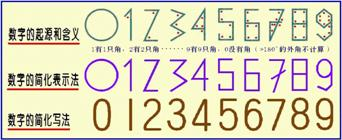
我们地球上的阿拉伯数字原来是从海奥华上来的。阿拉伯数字并不是抽象的符号，而是有具体含义的——每个数字上的角与它所代表的意思相关，如：1有一个角，2有二个角……9有九个角。——译者
当我们走到Haalis，就是以前描述过的那个休息室，重新坐好之后，涛就开始了她那奇怪的故事——
“米歇，准确地讲，是在135万年以前，在人马星座（Centaur）中一个叫巴卡拉梯尼（Bakaratini）的星球上，星球的领导者们在经过无数次反复讨论、研究、勘探、侦察之后，决定向火星和地球派遣载人飞船。”
“原因很简单，因为他们那颗星球内部的温度正在下降，500年内星球上就会冷得住不了人。他们有充足的理由认为，他们首先应当考虑将他们的人转移到同类但尚年轻的星球上去……”
“你说的‘同类’是什么意思？”
“我以后再给你解释，但现在还太早。再说这些人，我必须告诉你，他们是人，非常聪明和高度进化了的人。一个黑肤色民族，有着厚厚的嘴唇、平坦的鼻子和又密又细卷曲着的头发——也就是说，很像你们地球上现在的黑人。”
“这些黑人已经在巴卡拉梯尼星球上住了800万年了。那里，同时还有黄种人。简要地说，他们就是你们地球上现在中国人的祖先。他们在那儿住得比黑人还早大约400万年。这两个民族在他们的星球上目睹了无数次的动乱。我们曾试图救援、帮助和指导他们，但努力都白费了，他们之间的战争还是延绵不断。这些人祸加上天灾，使两个民族的人口数量都大大下降了。”
“最后，核战争爆发了，其规模之大使整个星球都被笼罩在黑暗之中，气温下降到了你们的摄氏零下40度，同时，核辐射、饥荒都使得生物难以生存。据记载，就在他们停止互相残杀、重新繁殖后代之前，登记人口仅有150名黑人和85名黄种人在灾难后生存了下来。而在这之前，他们有700万黑人和400万黄种人。”
“为什么说他们是‘互相残杀’？”
“我给你讲一讲背景，你就能更好地理解了。”
“首先，那些活着的人们并不是种族的领袖；在战争中，他们曾躲避在特殊的掩体中。这两点很重要。”
“这些生存者，大约有三群黑人、五群黄种人。有些是从私人掩体中，有些是从大型的全民掩体中出来的。当然，在战争中远不止这235人躲在掩体中，相信那总数有80万之多。在黑暗和寒冷中度过了好几个月之后，他们终于敢走到外边。”
“是黑人先出来的。他们发现星球上没有了树、没有了植物，更不用说是动物了。他们离开了在群山中的掩体，因为没有食物，开始了人肉相食。当病弱的人死后，他们就分而食之。然后，为了吃，就不得不再互相残杀——那是他们星球上最糟糕的灾难了。”
“另一群人，靠近海洋，靠吃星球上残留的生物维持生命。他们不那么吃人肉，也就是说，他们吃一些软体动物，像鱼和甲壳类动物。多亏他们有非常先进的装置，使他们能够从相当深的地方汲取没有被污染的饮用水。当然，由于致命的辐射和吃了体内充满放射性物质的鱼类，许多人仍然要死。”
“黄种人的遭遇大同小异。最后，正如我说的，只有150个黑人和85个黄种人活了下来。战争造成的死亡停止了，繁衍又开始了。”
“所有这一切都发生了，尽管他们事先都知道会有这种结局。应当说，在这大规模灭种之前，黑种人和黄种人都达到了相当高的技术水平，人们活得相当舒适。他们在工厂工作，在私人及政府机构上班——和你们现在地球上一模一样。”
“他们渴望金钱，因为金钱对一些人来说就意味着权力；而对另一些人来说，就是幸福。他们每周平均工作12小时。在巴卡拉梯尼，一周等于6天，21小时。”
“他们追求的是物质享受而不是精神心灵的成熟。同时，他们容忍着一届又一届政治家、官员的欺骗和领导，这也和你们地球上现在的情景一模一样。”
“当权者用空话、假话愚弄着人们。在贪心和自尊心的驱使下，他们将整个社会搞得世风日下。渐渐地，这两个民族互相妒忌。因为妒忌和仇恨之间只有一步之遥，他们相互间的仇恨逐渐强烈，以至于最终爆发了战争。由于双方都拥有先进武器，最终的结果只能是同归于尽。”
“我们的记录表明，在那235个幸存者中有六个儿童，这个数字是在战争爆发五年后纪录的。他们靠着互相肉食和吃一些海生动物而生存了下来。”
“他们又繁衍了后代——但总不是那么‘成功’。因为生下来的孩子不是有畸形的头就是有极难看的溃疡。这种情况并不罕见。”
“150年之后，发展到19万黑人和8.5万黄种人。我给你讲这150年，是因为他们重新进入了正常生活，和我们在物质上帮助了他们。”
“这是什么意思？”
“就在数小时前，你看到我们的飞船停在阿莱姆X3号星球上空，采集土壤、水和空气样本了吗？”我点了点头。“那么，”涛继续道，“你看到我们轻而易举地消灭了那些向那个村庄进攻的红蚁了吗？”
“的确是这样。”
“在那种特殊情况下，我们就会直接出面帮助他们。你看到没有，他们生活得像个半原始状态？”
“是啊，那这个星球怎么啦？”
“核战争！我的朋友。一次又一次重复的故事。别忘了，米歇，宇宙是巨大的原子，你的身体也是由原子组成的，所有的事情都会彼此影响。我是说，在整个银河系里，当星球上有人的时候，在他们进化的特定时间，原子都会被发现和失去的。”
“当然，发现原子的科学家很快就会意识到原子的分解将是一个可怕的武器，当权者们迟早会利用它的——就像小孩拿着一盒火柴点燃一捆干草，想看看到底会怎么样一样。”
“回到巴卡拉梯尼星球上来。核巨灾150年之后，我们想帮助他们。他们最需要的是食物，他们仍然靠海洋里的动植物生存。十分饥饿时，仍然会吃人肉。他们需要蔬菜和一些肉。但蔬菜、水果、谷物、动物——所有能食用的都从这个星球上消失了，星球上只残存了一些不能食用的树和灌木在补充着大气中的氧。”
“与此同时，还有一个像你们地球上的、螳螂似的虫子也活了下来，并大批大批地繁殖了起来。它有八米高，那是由于原子辐射引起的自发性基因突变所造成的。又因为没有天敌，它们繁殖得很快，对人类危害极大。”
“我们在这个星球上到处搜索它们的踪迹。多亏那极久远以来我们就掌握了的技术，使完成这个任务相对容易多了。一经发现，我们立刻就将它们处死。这样，在短时间内，它们就在那星球上消失了。”
“然后，我们引进了能适应当地特殊气候的那些植物和树——这些资料在灾害前就已经被记录了——这也是比较容易的事……”
“要完成这些任务肯定得花好多年！”
涛的脸上绽开了笑容。“这只要两天——两个21小时！”
看着我不相信，涛忍不住笑了，她大笑不止，连我也跟着笑了起来。但我仍然迷惑不解，她是不是在夸大事实？
我怎么知道？但我所听到的是如此吸引人——也许是我出现了错觉；也许我吃了麻药；也许我将从‘我的’床上很快醒来……
“不，米歇。”涛打断了我的思绪，透视着我的心念。“我希望你不要再这么怀疑了。心灵感应就已经足够说服你了。”
在她说这些话的时候，我相信了。即使是设计得最好的骗局，也难以将如此多超自然的事件编在一起——涛能透视我的心念，就如读一本打开的书，这已经被一而再、再而三地证明了；而拉涛利，只是将手放在我的肩上，就让我全身有超常的幸福、欲仙的感觉。
我不得不承认这些证据。我现在一切都正常，正实实在在地体验着这极度超常的经历。
“好极了！”涛大声表示赞同。“我再接着说？”
“请吧。”我鼓励她说。
“这样，我们在物质上帮助了这些人。但是，尽管我们介入得如此频繁，也没有让他们知道我们的存在。这有几个原因：首先是安全保密；第二是精神心理方面的原因。”
“如果他们知道我们的存在，知道我们的到来是为了帮助他们，他们就会消极地等待帮助而自己不再努力了，而且还会有垂头丧气（sorry
for the mselves）的可能。这些都反而会削弱他们努力生存的欲望。正如你们地球上说的：上帝帮助那些自己帮助自己的人（God
helps those who help themselves.）。”
“第三个原因，这最后一个、但也是主要的原因是：宇宙法则（Universal
Law）是无情的（well-established）。它严格地发挥着作用，这就像行星必需得绕着太阳运行一样。如果你犯了错误，你就得受罚——也许是立刻、也许是十年后、也许是十个世纪后，都有可能。但错误必须得到纠正。因此，我们不时地得到允许或被建议去帮助他们，但绝不能‘把饭喂到嘴里’（Serve
the meal on a plate.）。”
“这样，我们就在两天之内在他们的星球上繁殖了好几对动物，种植了无数的植物。这样，他们就可以繁殖动物、种植植物了。他们不得不从起跑线上重新开始。我们帮助他们的这一切，靠的就是做梦或心灵感应。有时，我们也用一种‘天堂来的声音’。不用说，这声音实际上来自于我们的飞船。但对他们来说，是来自于天堂的。”
“他们肯定把你们当成上帝了！”
“完全正确，世上的传说和宗教就是这么来的。但是，在当时那种危急的情况下，重要的是结果，结果好就一切都好。”
“数世纪后，一切几乎都恢复到了核难前的状态。虽然在一些地方形成了永久性的沙漠，但在另一些受影响不太严重的地方，各种植物还是很好地生长了起来。”
“十五万年之后，又出现了高度文明。但这一次就不仅仅是物质技术方面的文明了。人们心甘情愿地、诚心地吸取了教训。这两个种族在精神心灵修养方面都达到了很高的程度。他们之间也出现了高度的友谊。”
“这样，和平再次来到了他们中间。传说很清楚，并且这些情景的许多过程也都被记录了下来，后来的人也就可以清楚地知道核灾难的原因和后果。”
“就像我最初谈到的，人们知道再过五百年他们的星球就不适宜居住了。知道在宇宙中有着可居住的和不可居住的其它星球后，他们开始了最严肃、认真的探险。”
“火星上的人没有物质技术，但是他们在精神心灵上高度进化。他们大约一米二到一米五，个头很小，蒙古人（Mongoloid）的样子，住在部落中石头垒成的小屋里。火星上的植物极其稀少。有一种矮个山羊，一些野兔样的动物，数种老鼠。最大的动物像水牛，但有貘一样的头。也有一些鸟和三种蛇，其中一种蛇的毒性很大。花卉种类很少，树木最高也不过四米。他们也有可食用的草，有点像你们的荞麦。”
“巴卡拉梯尼人对此作过研究，很快就认识到火星也在变冷，四～五千年后也将不再适宜人类生活。单就植物而言，就连火星人自己的需要都满足不了，更不用说供养从巴卡拉梯尼蜂拥而来的大批移民了。所以，火星对他们来说没有什么吸引力。”
“就这样，两艘飞船来到了地球上。一艘落在了现在的澳大利亚。要解释的是，那时的澳大利亚、新几内亚、印度尼西亚、马来西亚，都在同一块大陆上。有一条大约三百米宽的海峡，就在现在的泰国位置。”
“当时的澳大利亚有一个内陆海，与好几条大河相通，各式各样迷人的花卉、植物在那里茂盛地生长着。考虑到所有因素之后，宇航员们选择了这里作为第一个移民基地。”
“我必须更准确地说明，是黑人选择了澳大利亚，而黄种人选择了现在缅甸的那地方——那儿也有繁茂的野生植物，他们在孟加拉湾（The
Bay of Bengal）的海边很快就建立起了基地。而黑人在澳大利亚的内陆海边也建立了他们的基地。后来在新几内亚（New
Guinea）的地方又建立了更大的基地。”
“他们的飞船以超光速的速度在大约50年内运送了360万黑人和同样多的黄种人来到了地球上。这证明了这两个要在新的星球上定居和相处的种族之间，有着高度的相互理解和最佳的合作精神。他们一致同意，老人和虚弱的人仍然待在巴卡拉梯尼上。”
“他们在建立定居点之前就已经探索了整个地球，完全相信地球上没有其它人类居住。他们常常以为发现了人，但仔细一观察，那些人一样的生灵原来是些猿。”
“地球的地心引力比巴卡拉梯尼上的大，两个种族最初都不习惯，后来才慢慢适应了。”
“在建立基地和工厂的过程中，从巴卡拉梯尼上运来的物质帮了大忙，那些物质又轻、又结实。”
“我还没有给你解释，那时，澳大利亚是在赤道上的。地球是绕着与今天不同的轴运转——花30小时12分钟转一圈；而花这么280天绕太阳转一圈。当时的赤道，气候比现在潮湿，不像现在，因为现在地球气候已经变了。”
“成群的、巨大的斑马在陆地上漫游。还有无数可食用的鸟类，名字叫‘嘟嘟’。有非常大的美洲豹虎（Jaguars），还有一些几乎有4米长的、你们叫恐鸟（Dinornis）的动物。河里有长达15米的鳄鱼和25～30厘米长的蛇，它们有时会进攻这些新定居者。”
“地球上大多数的花卉植物都与巴卡拉梯尼上的截然不同——无论是在营养学上、还是在生态学上都是如此。他们建立了许许多多的科研机构，为的是移植培育向日葵、玉米、小麦、高粱、木薯（tapioca，大戟）及其它植物。”
“这些植物，要么是地球上本来就没有的，要么就是处于野生状态还不能被种植、食用的。山羊和袋鼠都是带来的，因为他们在巴卡拉梯尼上就将它们作为食物而消耗得很多。在养袋鼠时，他们遇到了很大的困难，原因之一是饲料。在巴卡拉梯尼上，袋鼠吃一种纤细而硬的叫做阿栗露（arilu）的草，但地球上根本就没有这种草。他们不断种植，不断失败，因为有无数细小的真菌对这种草是致命的。这样，袋鼠就得被家养达数百年，直至它们适应了地球上的草。”
“黑人的努力终于得到了回报，他们成功地种植了这种草，但这已经花了很长的时间了，而袋鼠现在却不再那么吃它了。长久之后，这种草在澳大利亚仍能看到它们，植物学上它们被称为Xanthorrhoea，而它的普通名字就叫‘黑孩子’（Black
boys）。”
“在地球上，这种草长得比在巴卡拉梯尼上要高得多和密得多。当一种植物从一个星球移植到另一个星球上的时候常常会是这样的。现在，地球上这种植物是远古时代留下的、很罕见的痕迹之一。从这种草和袋鼠仅见于澳大利亚这一点表明，巴卡拉梯尼人在探索其它地区前，曾在那特定的地域里居住了很久、很久。我解释这一点，是我想先用袋鼠和Xanthorrhoea的例子，这样，你就能更好地理解巴卡拉梯尼人在定居地球的过程中所遇到的困难和麻烦。当然，这只不过是众多困难中的、一个小的例子而已。”
“我说过，黄种人是定居在孟加拉湾的内地的，多数人就住在缅甸地区。他们也建立了许多城市和研究基地。由于他们主要对蔬菜感兴趣，于是就从巴卡拉梯尼上带来了卷心菜、莴苣、荷兰芹、香菜（coriander，学名胡荽）以及别的种类。在水果方面，他们带来了樱桃、香蕉和桔子树。香蕉和桔子树很难种植，因为当时的气候比现在冷。于是，他们给了黑人一些树，黑人在种植后却获得了极大的成功。”
“黄种人在麦子种植方面很成功。事实上，从巴卡拉梯尼上带来的麦子其麦穗有40厘米长，结有很多像玉米粒一样大的颗粒。共有四种麦子，黄种人在其种植过程中，把种植技术提高到了非常高的水平。”
“他们也带来水稻了吗？”
“没有，根本就没有。水稻是地球上本来就有的。同样，在黄种人的手里，水稻的种植水平也达到了到现在为止很高的水平。”
“他们建立了巨大的地下储存室。两个种族之间的商业交换也很快就开始了。黑人出售袋鼠肉、嘟都（嘟嘟在当时是很多的）和斑马肉给黄种人。黑人在驯养斑马的过程中，培育出了一种味道像袋鼠、但更有营养的斑马种。贸易是通过巴卡拉梯尼飞船进行的，他们在各处建立了很多飞船基地。”
“你说的是，涛，地球上最早的人是黑人和黄种人，那为什么会有白种人?我就是白种人呀。”
“别着急，米歇。地球上第一批人的确是黑人和黄种人。但此刻，我得继续解释他们是怎样管理自己的。在物质生活上，他们是成功的。但他们也没忘记建立他们那巨大的教堂。他们在那里举行崇拜仪式。”
“他们也有崇拜？
“噢，是呀，他们都是塔卡欧尼（Tackioni）。也就是说，他们都相信生命轮回，有些像现在地球上喇嘛的修行活动。”
“两个国家之间的交往频繁，他们甚至共同努力进一步探索地球上某些地域。有一天，一支既有黑人、也有黄种人的队伍在南非的末端登了陆，就是现在叫好望角（Cape
of Good Hope）的地方。从那时到现在，除了撒哈拉（Sahara）东北地区和红海区域外，非洲并没有多大改变。但，当时还没有它们呢，当然那是另一个故事，我们以后再谈。”
“在他们探险的同时，他们已经建立了三个国家。在非洲，他们发现了一些新的动物：如大象，长颈鹿和水牛。还有一种他们从未见过的新水果，就是西红柿。米歇，可别以为那是你们现在的西红柿。当时的西红柿非常小，有些像葡萄，而且非常酸。黄种人本来就擅长于种植，在后来的数世纪中，就像他们改良水稻一样，也一直在改良西红柿品种，直到西红柿变得像今天你们所熟悉的这个样子。他们都吃惊地发现了香蕉树，形状和他们从巴卡拉梯尼带来的很像。但是，他们没有必要后悔以前曾花的精力和心血，因为非洲的香蕉实际上不能吃，还有许多大籽。”
“这个探险队有50个黑人和50个黄种人。他们带回了大象、西红柿和许多猫鼬，因为他们很快就发现猫鼬是蛇的天敌。”
“不幸的是，他们也在无意中带回了可怕的病毒，就是现在所称的‘黄热病’。在极短的时间内，成百万的人死了，因为医学专家们根本不知道这病是怎么传播的。由于这病主要是经蚊子传播的，在赤道区域的气候条件下蚊子极易繁殖，又没有冬天冻死它们，所以澳大利亚的黑人得病最多。他们的病例数比黄种人要多四倍。”
“巴卡拉梯尼上的黄种人向来擅长医学和病理学，但就这也使他们花了许多年才找到了一种治疗手段。在这段时间里，也有很多的黄种人死于黄热病。他们最后生产了一种疫苗，并把疫苗很快提供给了黑人。这就更加强了两个种族之间的友谊。”
“这些黑人长得什么样？
“他们从巴卡拉梯尼来到地球时，有两米三，妇女也一样。他们很漂亮。黄种人小一些，男人平均一米九，妇女一米八。”
“你说现在的黑人是这些人的后代，为什么他们现在这么小呢？
“是地心引力，米歇。地球上的引力比巴卡拉梯尼上的大，两个种族的个子都逐渐变小了。”
“你说过你们能帮助别人，为什么在爆发黄热病的时候你们没有出面？是因为你们当时也不知道疫苗吗？”
“我们本来会帮助的，你到了我们的星球后就会知道我们的能力的。我们没有参与，是因为那不是我们该做的。我已经告诉过你了，可不想一再重复了——我们只能在一定程度上帮助别人，但不能过份。过了一定程度，宇宙法则是不允许的。”
“给你举一个简单的例子。比如说孩子每天上学，晚上回到家里，要求家长帮忙做作业。如果父母明智，就只会帮他理解有关概念，让孩子自己做完作业；如果父母不是这样，而是替他做了作业，孩子就学不到知识，是不是？他就不得不每年都留级，而他的父母最终并没有真正帮成他。”
“你以后会看到的。虽然你现在已经明白了，你在你们地球上就是为了学会怎样生存，怎样经历苦难和死亡，并尽可能地提升自己灵性的成熟程度。以后在涛拉们（Thaori)和你谈话时我们会再谈这一点的。现在，我想告诉你更多的关于这些人们的事儿。”
“他们控制了黄热病，在这个新星球上扎下了根。不但在澳大利亚，也在其它地方，如南极（Antarctica），都有密集的人口。当然，以南极当时的位置，其气候是适宜居住的。新几内亚的人口也很多。在黄热病结束时，黑人的数量约有79500万人。”
“南极洲当时是不是一个真正的大陆？”
“当时，它与澳大利亚相连，比现在热多了，因为地轴已经变了。南极洲当时的气候和现在的俄罗斯南部差不多。”
“他们再没有回到巴卡拉梯尼吗？”
“没有，一旦在地球上定居后，他们就订了一个严格的法律——任何人不得再返回。”
“那他们的星球怎么样啦？”
“正如预料的那样，巴卡拉梯尼变冷了，变成了沙漠，很像火星。”
“他们的政治体制是什么样的？”
“很简单，就是选举。先选出村庄的管理人，进而再选出城镇的官员及另外八个人。而后者要从最值得尊敬、聪明、诚实、正直、年龄在45到65岁之间的人中选出。选举从来不看家庭财产。”
“城镇和区域（一个区域中有八个村庄）的管理人，才有资格和这八个年长者商讨事务。一个八人委员会，经秘密投票，在至少在有六个人同意的情况下，再选出一个代表，参加国务会议。”
“举例来说，在澳大利亚有六个洲，每个洲都有八个城镇／地区，在洲会议上就会有八个代表，每人代表一个城镇／区域。”
“洲会议由一个德高望重的人主持，讨论所有政府遇到的各种日常事务，如供水、医疗、道路等。关于路，黑人和黄种人都用一种很轻便的，配有燃氢引擎的车辆。由于有抗磁和抗重力装置，车辆可以离开地面行驶。”
“但是，再说回到他们的政治体系，他们可没有什么‘政党’，一切都仅仅取决于公正和智慧。长期的管理经验使他们明白，建立持久的社会秩序，需要两个不可缺少的、最重要的条件——公正和严明。”
“关于他们的经济和社会结构，我以后再给你讲。现在，先给你提一下他们的法律系统。比如有一个小偷，被认为有罪，就会在他常用那只手的手背上烙一个印。也就是说，右手优势的小偷会在他的右手背上留下烙印。如若重犯，他的左手就会被砍掉。这种方式，就是在今天的阿拉伯（Arabes）社会中仍实行着。如果他还偷，右手也会被砍掉，前额上也会被烙上永远去不掉的记号。没有了手，小偷就只能可怜兮兮地乞求家人、路人给予食物和其它东西。”
“因为他的脸表明了他是个小偷，他的生活就会变得非常困难，以至于他宁愿死去。这样，小偷就成了一个活生生的例子，一个贯犯的下场。不用说，当时的小偷很少。”
“你可以想象得到，谋杀也很少。凶犯嫌疑人会被带到一间特殊的屋子里独自待着，帘子后面会有一个‘思维监测器’——那其实是人，有特殊的心灵感应能力的人，由他来感知这个嫌犯的思想。但他仍然还要在一个特殊的大学里持续不断地进行培养，以便提高这种能力。”
“你也许会反驳说：经过训练，有可能使人的思想变成一片空白，而让你什么也监测不到。但是，嫌犯绝对做不到连续六个小时都保持在这种状态。再说，在他不经意的时候，会让这个‘被测者’不时地听到一些事先编好的声音而迫使他中断这种专注状态。为客观和避免偏差，通常有六个人参加这种思维监测工作。在稍远的另一栋楼里，对原告和目击者（证人）也要进行同样的监测，期间没有任何语言交流。第二和第三天各重复一次这样的监测，每次八小时。”
“第四天，所有的“思维探知者”（mind-readers，拥有“它心通”能力的人）各提交一份报告给审判组。审判组由三人组成，由他们面试及交叉检查被告和目击者。没有律师和陪审员。法官会在他们之前得知所有案情的每一个细节，为的是能绝对肯定被告是否有罪。”
“为什么？”
“因为处罚是死刑！恐怖的死刑！米歇，凶手将被活生生地扔给鳄鱼！
“再比如强奸，被认为是比凶杀更严重的罪行。因此，惩罚更加残酷，强奸犯会被涂上蜂蜜埋在地里，肩膀以上露在外面，其惩罚的实施者是紧靠他的大群蚂蚁。有时，犯人要10到12个小时才会死去（好像比凌迟还恐怖——译者）。所以，你现在明白了，他们的犯罪率非常低，不需要监狱。”
“涛，难道你不认为惩罚太残酷了吗？”
“想一想一个16岁姑娘的母亲吧，女儿被强奸之后又被杀害了，她就能忍受这种失去女儿的、最残酷的伤害吗？她对此事的发生没有任何过失，却要承受这种痛苦！而对罪犯来说，他在这么做之前是知道后果的，因此，他必须得到应有的惩罚。但正如我说的，当时的犯罪率几乎为零。”
“现在再回头谈一谈宗教崇拜问题。我以前说过，这两个种族都相信轮回（reincarnation），但在信仰上却有所区别，而这种区别常常会使他们产生为不同的宗教团体。在黑人中，这种宗教分裂产生了可怕的后果。”
“就这样，大约有50万黑人最终在牧师的宣导下迁移到了非洲——就是现在的红海地区（Red
Sea）。当时还没有红海，整个土地都属于非洲。他们修建了村庄和城镇，但是，我刚刚说的那种在各个意义上讲都是行之有效的政治制度，却被抛弃了。牧师们自己选举了政府首脑，因此，这些被选者或多或少地成为了牧师的傀儡。从那以后，人们就不得不面对许许多多的麻烦，相似于你们现在地球上的人类所不得不面对的那些麻烦一样，如腐朽、卖淫、吸毒和各种形式的不公正。”
“而黄种人，他们的政治体制还是十分健全。尽管在宗教信仰上有一些差异，但他们的牧师在国家管理上没有发言权。他们和平、富裕地生活着——和那些迁移到非洲的黑人一点都不同。”
“他们的军队使用什么武器？”
“武器很简单，因为‘简洁往往胜过复杂’。他们的武器非常有效，完美无缺。黑种人和黄种人都从原来的星球上带来了你们现在所称的‘激光’武器。这些武器由一组特殊的人掌握，而他们又受着国家领导人的指挥。两个种族的人商定互相交换100名观察员，这些观察员由大使和外交官组成，各为其主。同时，也确保了每个国家不能出现武力超强而失衡的局面。这个方法是如此的完美，于是，人们度过了3550年和平幸福的美好时光。”
“迁到非洲的黑人却没有得到携带这种武器的允许，因为，他们被认为是脱离主义分子（secessionist）。他们在非洲渐渐地扩展，定居在现在的撒哈拉沙漠地区（Sahara）。当时，那里是一片富饶的土地，气候温和、草木茂盛，有众多的动物在栖息。”
“牧师让人们修建了教堂。为了满足他们对财富和权利的渴望，他们向人们征收着极重的赋税。这些从不知贫穷为何物的人们，现在分成了两极——富有的和贫穷的。牧师们，还有那些帮助牧师掠夺穷人的人，当然属于前者。”
“宗教变成了偶像崇拜。人们制作出了石质和木质的上帝，向上帝和诸神献上祭品。没多久，牧师们就坚持要以活人作为祭品了。从迁徙之初起，牧师们就竭力使人们变得愚昧无知、远离真理。随着长达数年在智力和体力发育水平上的降低，牧师们已经能较有效地控制人们了。这种‘发展了的宗教’已经和最初激发的‘脱离运动’的那种宗教已经风马牛不相及了。对人们的控制已经变成了牧师们基本的和首要的任务了。”
“宇宙法则（Universal law）要求人类的基本任务是——不管你住在哪个星球上，都要以心灵发展(develop his
spirituality)为主要目的。而这些牧师，通过使人们无知和对人们进行谎言误导，使整个‘族群’的心灵发育倒退了，违背了这最基本的法则。”
“这时候，我们决定出面干预。在此之前，我们也给了牧师们最后一次机会。通过心灵感应和托梦，我们先让主教知道——以人为祭品的行为必须停止，要让人们回到正常的心灵发育轨道上来；人类有肉身的目的，就是为了心灵的发育成熟，而你们现在的所作所为违背了宇宙法则。”
“主教被极度震惊了。第二天，他召集了牧师会议，向大家告诉了他的梦。小部分人谴责他是叛徒，另一部分人认为他是年迈糊涂，还有一部分人觉得这可能是他的幻觉。讨论数小时之后，15个人中有12人坚持保持现行的宗教，认为最好的办法就是保持控制，促使人们相信和害怕‘奖善惩恶的上帝’（vengeful
Gods）；而他们（牧师们）就是上帝在地球上的代表。对于主教讲的、关于梦的事情，他们一句也听不进去。”
“我们的处境非常微妙而难以掌握，米歇。我们本来也可以让我们的飞船直接出现在他们的面前，并与这些牧师们直接对话，但他们能认出我们空中的飞船，因为他们在澳大利亚时也有飞船。他们准会毫不迟疑地进攻我们——因为他们会非常忧虑和害怕失去他们在整个民族中的统治地位。他们已经有了用于镇压暴动的军队和相当强大的武器，当然我们也能轻易摧毁它们。但我们更希望与他们直接对话，使他们重新回到正确的轨道上来的。但是，从精神心理学上讲，这将是一个错误。这些民众已经被训练得顺从他们的牧师，根本不可能明白我们为什么要干涉他们的国家——如果这样，我们的一切努力都会白费。”
“考虑到以上因素，我们就在某天晚上乘飞船来到这个国家大约十公里的高空。该城的教堂和圣城（Holy
City）就在城边一公里远的山岗上。我们用心灵感应通知那主教和那两名相信他的牧师，要他们步行到离圣城一公里半的美丽的公园中去。然后我们以复合幻觉（Collective
hallucination）技术，使门卫们打开大门释放了犯人、服务人员和士兵们。事实上，除了那罪恶的牧师们以外，所有的人都被疏散出了圣城。尽管天空中有奇怪的‘景象’，所有的人还是全部跑到城的另一边了。”
“天空中，长有翅膀的‘天使’们在围绕着夜空中发出的、有着极强光亮的云彩飞翔……”
“怎么会那样呢？”
“这就是复合幻觉技术，米歇。这样，在很短时间里，通过我们的安排，圣城中就只剩下那12个邪恶的牧师了。当一切就绪时，我们的飞船就将圣城、包括神庙，都给摧毁了。用的就是那同样的武器——你已经见过它的效力了。当时，岩石四飞，墙壁倒塌成了一米多高的土堆，它们的崩溃见证了这种‘罪恶’的结果。”
“的确，如果它们被摧毁得一点不剩，人们便会很快忘记的，因为人类很健忘……所以，为了开导人们，我们从明亮的云层中发出了一个声音，警告说：上帝的愤怒将是十分可怕的，比他们看到的还要可怕，他们必须遵从主教，按他的要求去做。”
“当这一切都结束后，主教就站在人群前说，他以前错了，现在最重要的是大家齐心协力朝着新的方向前进。”
“主教的工作得到了那两个牧师的支持。当然，一开始是很难的，但眼前的现实帮助了他们——仅在数秒钟内，圣城就被摧毁了，罪恶的牧师们被处死了。不用说，这使人们都相信这是上帝的神迹，因为被关的200多人也被同时释放而自由了，否则，第二天他们全都会被当作供品的。”
“这件事的细节都被记录了下来，但这些也在数世纪以来的传说和故事中被歪曲了。但无论如何，其直接的结果是所有的事情都发生了变化——那些在以前还在奴役和掠夺穷人的富人们，在目睹了圣城和那些牧师们的下场后，现在变得相当的谦虚，也帮助着新的领导者进行必要的改革——他们毕竟也害怕得到同样的下场。”
“逐渐地，人们又变得自满了，就像他们在脱离原黑人国家之前那样。在数世纪追求乡村式而不是工业化和城镇化的过程中，他们扩展到了整个非洲大陆，人数也最终达到了数百万。然而，只是在红海和流经非洲中心的大河两岸有些城镇。”
“他们花了极大精力提升自己的心灵能力，很多人能够抗地心引力（Levitation）而在空中漂浮一段距离；心灵感应在他们的生活中重新占有了重要的位置，成了很平常的事情。常常可以看到，一些肉体疾病能够仅靠放上双手就可以治愈。”
“在澳大利亚和新几内亚的黑人之间又建立了友好关系。新几内亚的黑人定期地访问澳大利亚，乘坐的就是他们有时称之为‘喷火战车’（chariots of
fire）的宇宙飞船，这种飞船仍然被他们的澳大利亚兄弟们使用着。”
“黄种人，作为较近的邻居，也开始以小数量向非洲北部迁移。他们被‘上帝乘坐喷火战车到来’的故事惊得目瞪口呆。这就是传说中人们对我们那次干预活动的描述。”
“在肉体上讲，是黄种人首先与黑人有了血缘关系，这一点也许很难让人相信。在巴卡拉梯尼星球上，人种之间的混合从未达到像在地球上如此密切的程度。民族学家们对这种混合的结果很感兴趣。这种混合在地球上形成了一个新的种族。的确，这种混合产生了身体里有更多的黄种人的血液，性情比黄种人和黑种人都更为平和的新种族。他们最终结伙成群，定居在现在的阿尔及利亚、突尼斯、非洲北部。这个新种族就是你所知道的——阿拉伯人，但可别以为他们很快就成了现在这个样子，长达数世纪的时间和气候都对他们模样的形成起了很大的作用。我在此只能简略地告诉你——种族之间是怎样出现融合的。”
“就这样，地球居民一切都安然有序，只除了一件事——天文学家和学者们非常担忧的一件事情——就是有一个巨大的星体正冲着地球而来。这种可能性在当时还是轻微的，几乎察觉不出来，但却是毫无疑问的了。”
“这事首先是被位于澳大利亚中部的Ikirito天文学家观察到的。数月后，只要告诉人们朝天空的那个方向看，就连肉眼都可以辨认出它那清晰的、险恶的红色。再过几周，这个星体变得越来越清晰可见了。”
“澳大利亚、新几内亚和南极洲的政府们做出了一个非常重要的决定，这个决定很快也就被黄种人的领袖们同意了。那就是，在这个天体与地球发生不可避免的碰撞之前，所有的宇宙飞船都处于待命状态；飞船上应尽可能地装载专家们——医生、技术人员等——也就是说，是那些在灾难之后有可能对社区有用的人才。”
“他们想到哪儿去？去月亮？”
“不，米歇，当时地球上还没有月亮呢。他们的飞船可以持续飞行12周。长期以来，他们已经丢失了超常距离飞行的能力了。他们计划绕地球轨道运行，这样可随时降落在地球上最需要他们紧急支援的地方。”
“80艘宇宙飞船准备就绪了，上面装载了数量庞大的人类——这是在他们日夜举行的会议上决定的。”
“黄种人也同样准备了98艘飞船。但在非洲，那里从未有过任何飞船。”
“我得提醒你，除了各国最高领导人之外，任何飞船上都没有部长级官员。这一点你可能会觉得奇怪——因为，如果同样的事情发生在现在的地球，很多政治家都会争先恐后地爬上飞船逃命。”
“一切都就绪了。人们都在等待着碰撞的消息。飞船的使命是秘密的，因为担心人们会认为他们被官员们背叛而恐慌，甚至可能会在飞船基地就出现暴力冲突。
基于同样的考虑，为了降低可能出现的恐慌，官员们低调地向人们解释这次碰撞可能会带来的灾难。”
“现在，考虑到天体运行速度，碰撞已经迫在眉睫，只有48小时了。专家们都同意这个计算——几乎是全部同意。”
“宇宙飞船计划在预算的碰撞时间之前两个小时同时起飞。之所以要在只剩下如此短的时间里起飞，是为了能在灾难后的空间里待尽可能长的整整12周。计算结果表明，碰撞将发生在现在的南美洲。”
“这样，一切就绪，就等着在澳大利亚中央时间中午的12点起飞。可是，要么是因为计算错误，这是极有可能的；要么是这个天体突然出乎意料地加速了，它于中午11点就出现在天空了。天空明亮得像橘黄色的太阳。起飞信号立刻就发出了，所有的飞船都升了空。”
“为了立刻离开地球大气层和地心引力，有必要利用‘隧道’（warp）。当时，这隧道大约在现在的欧洲方向，尽管这些飞船全在飞行着，但在他们还未到达隧道前，天体就与地球相撞了。”
“它进入大气层后自行就碎成了三大块。最小的一块直径也有好几公里，击中了现在的红海地区；另一块较大的，击中了现在的帝汶海（Timor
Sea）；而最大的那块落在了加拉帕戈斯群岛（Galapagos，位于厄瓜多尔西边）。”
“碰撞的结果十分可怕——太阳变成了暗红色，像个气球一样滑向地平线，它很快停止了下滑，又渐渐地上升。但只上升到一半，就又‘落’下去了。地轴立刻就发生了偏转！地球上出现了可怕的巨大爆炸，因为球体的两个大碎片穿透了地壳。在澳大利亚、新几内亚、日本、南美洲——基本上在地球的任何地方都发生了火山爆发。新的山脉立刻就形成了。300多米高的巨浪冲刷了澳大利亚五分之四的陆地，塔斯马尼亚岛（Tasmania，位于澳大利亚东南）从澳大利亚大陆分离了出去。南极洲的一大片都淹没在了海水中，在澳大利亚和南极洲之间形成了两个巨大的水下峡谷。”
“一大片陆地从南太平洋中央浮出了水面。缅甸的很大一片都沉入了海洋，就是现在孟加拉湾的地方。另外一个盆地下陷，形成了现在的红海。”
“宇宙飞船来得及离开吗？”
“不完全，米歇。专家们犯了一个致命错误，可是他们往往会辩解说，他们不可能真的预计到会发生什么事情——他们估计到了地轴偏转，但没有估计到地壳震荡（oscillation）！”
“宇宙飞船是进入了抗引力隧道，但又被拉回了由于天体碎片进入大气层而引起的大气回旋（Backwash）中，被天体尾部的无数碎片所击中。”
“只有七艘飞船——其中三艘上是黑人，四艘上是黄种人，在竭尽全力后终于逃离了地球。”
“地表隆起持续了好几个月。在天体击中的地点，出现了成千座火山。澳大利亚的大部分地区都弥漫着火山喷发出的有毒气体，数分钟内导致了成百万人死亡。我们的观察表明，澳大利亚几乎所有的人类和动物都灭绝了。在一切都平静之后，只有180人生存。”
“有毒气体是这可怕死亡的一个重要原因。在新几内亚，那里的毒气较少，死亡也较少。”
“我想问你一个问题，涛，你说过黑人是从澳大利亚迁移到新几内亚和非洲的，那为什么现在澳大利亚的土著居民和世界上其它地方的黑人不一样？”
“问得好，米歇。我该告诉你更多的细节。灾难的结果是——地壳隆起的同时，具有强烈放射性的铀喷散在地球表面，但这只是发生在了澳大利亚。那些逃过死亡的人们却逃不过放射性伤害，就像在原子弹爆炸中生还的人一样。”
“他们的遗传基因受到了影响，所以今天非洲人的基因和现在澳大利亚黑人的基因不一样了。再说，整个环境都发生了巨变，他们的食物也和以前不一样了。随着时间的进展，这些巴卡拉梯尼人的后代被转变成为现今的土著居民了。”
“地壳继续隆起形成了山脉，有些是突然的，有些需要好长时间。海洋巨隙（Crevasses）形成了，它吞噬了整个城市，然后又关闭了起来，将罹难地区的一切文明吞噬得一丝不留。在灾难极峰时，洪水泛滥，整个星球好像从未曾有过人类存在过似的。”
“当时，众多火山同时向天空喷射着大量火山灰，喷吐得如此之高，致使整个天空都黑了。海洋中成千平方公里的海水都沸腾了，升腾的水蒸气与火山灰搅和，形成了厚重的云雾。这云雾又变成了倾盆大雨，其惨烈程度你都很难想象得出来……”
“天空中的飞船呢？”
“12周以后，他们不得不降落地球。由于看不到地面，他们就降落在了现在的欧洲。七艘飞船中只有一艘成功降落了下来。”
“其余的飞船都被卷入了暴风，摔落在地。当时，整个地球上都有这种暴风、旋风，风速达每小时300～400公里。旋风出现的主要原因是地表巨大的温差——这又是由于火山的突然爆发造成的。”
“这唯一的飞船降落在现今的格陵兰（Greenland）。船上有95名黄种人。许多人都是医生和其它学科的专家。由于降落在了极其不良的地理环境中，飞船受到了损伤，再也不能起飞了，但它仍可作为遮风避雨的地方。他们的食品储备足够使他们消耗很长时间，因此，他们尽了最大努力将自己重新组织了起来。”
“大约一个月后，一场地震将他们
也全部吞噬，包括飞船。这最后一次灾难将地球上所有的文明都摧毁了。天体碰撞带来的连锁灾难波及到了整个地球——新几内亚、缅甸、中国、还有非洲……”
“虽然沙哈拉地区受到的损伤较其它地区稍小一些，但是，所有沿红海所建立的城镇都被新生的海洋吞没。简而言之，地球上不再有城市，成百万的人和动物都消失得无影无踪了。”
“不用说，辉煌的澳大利亚和中国文明就只不过成了记忆中和传说中的事情。全球性的大饥荒很快也出现了，人们被新生的裂缝和海洋分割为不同的部分，地球上第一次出现了人吃人的悲剧……”
在涛滔滔不绝地讲述她故事的时候，我注意到她座位上方有各色的光。她讲完后，打了个手势，房间的一堵墙上就出现了一系列字母和数字。涛对此作了仔细地检查。这之后，光线消失了，字母和数字也不见了。
“涛，”我说，“说到幻觉和复合幻觉我不太明白，你们怎么会使成千上万的人相信你的幻术是真实而不是一种骗术（Charlatanism）？是不是就像幻术师在舞台上用十几个事先准备好的道具愚弄观众的那样？”
涛笑了笑，说：“你说对了一部分，因为在你们星球上这已经很罕见了，连找个舞台上真正的幻术师都很不容易。我得提醒你，米歇，我们是各种精神心理方面的专家。这对我们来说很容易，因为……”
突然，飞船像是被什么东西强烈击中似地剧烈震动了起来。涛恐惧地看着我，脸色全变了，显出极度恐怖的神色。随着一声可怕的碰撞声，飞船成了碎片……我听到宇航员们一阵撕心裂肺的叫喊声，好像我们全都被扔进了宇宙空间。涛紧紧抓住我的胳膊，我们以头眩的速度穿过宇宙星尘碎片……
我以为，这是因为我们的飞行速度太快，而且我们正在穿过彗星的轨道——就像我们在数小时前曾经经历过的那次一样。我能感觉到她的手仍然在我的胳膊上，但我甚至没有想到回头看她一眼，彗星把我的思维撕得粉碎。我们就要和彗星的尾巴相撞——那是当然的——我已经能感觉到可怕的热度，我的脸好像要被烧焦似的，末日似乎就要到来。
“你怎么样，米歇？”从涛那边传来和蔼的问话。
我记得我简直要发疯了。我正坐在她对面同一张椅子上，就是我听她讲地球上第一个人的故事的那张椅子。
“我们是死了还是疯了？”我问道。
“都不是，米歇，就像你们地球人说的：眼见为实，耳听为虚。你问过我，我们是怎样愚弄和哄骗人们来相信我们的，我立刻就用‘幻觉’回答了你。我知道，我本应该选一个不太恐怖的题材，但是，目的是重要的。”
“太妙了，我做梦也想不到会有这种事！——这么快，太真实了——简直是一出活剧。我真不知道该说什么，我只是希望你可别再这么吓我，不然我会被吓死的……”
“绝对不会了。我们的肉体就是我们的座位而已，我只不过是将你的灵体（Astropsychic
bodies）——
从你的肉体和其它重身体中移开罢了……”
“什么是其它重身体？”
“所有其它的——如，我们生理的（physiological）、精神心理的（psychotypical）和星体的（astral）身体等等。在我的心灵感应下，你的灵体就与你的其它重身体分离了。我的心灵感应系统此时就像是一个信号传递媒介一样，在我的灵体和你的灵体之间建立了一个沟通渠道。”
“我所想象的一切都被传输到了你的灵体，真实得就像真的发生一样。唯一的事情是，因为没有时间让你事先有相似的体验，我不得不非常小心。”
“这是什么意思？”
“噢，当你创造一种幻觉，观众或观众们应当有心理准备，知道你希望他们看到什么。举例来讲，如果你想让他们看到空中飞船，那他们就应当有想看到飞船的心理，这一点很重要。如果他们期待的是一头大象，他们就永远也看不到飞船。因此，使用合适的语言和十分恰当的暗示，观众就会和你融成一体，期望着看到飞船。处女法提玛（the
Virgin of Fatima）就是地球上的一个典型例子。”
“那么，对一个人施幻术要比对一万个人施幻术要容易些了？”
“根本不是这么回事。相反，当人数众多时，会有某种反映出现。当你将他人的灵体从他的肉体解脱出来，施以心灵感应，他们会互相感应的。就像著名的多米诺骨牌——当你使第一张牌倒下去后，其余的牌也会相继倒下去的——直到最后一张。”
“这就是说，这是我和你玩的很简单的游戏。自从你离开地球，你的心里多少还有些疑虑，不知道会发生那些在逻辑上可以成立的事。我就是利用你这种有意识的和潜意识的紧张焦虑心理，而这种心理情绪在乘坐航空器（如飞机、热气球等）的人中是很典型和常见的——害怕爆炸、坠机。当你在屏幕上看到彗星时，我干吗不利用它呢？在你接近彗星时让你的脸感到热，当然，我也可以让你在接近彗尾时感到冷的。”
“总而言之，你真能把我搞疯的！”
“时间这么短是不会的……”她笑着。
“这一切难道还没有五分钟？”我疑惑着。
“不超过十秒钟——就像一个梦。或者说，不论是一个好梦、噩梦，其实形式、道理都是大致相同的。比如说，你睡着了，开始做梦……你在一个田野中站着。田野里有一匹英俊的马，你近前去抓它，但每次它都跑开了。五六次之后——那当然要花时间了——你骑在马背上，开始奔跑。速度越来越快，你沉醉在快速驰骋之中。马跑得如此之快，四蹄腾空，使你们都在空中。田野的一切——河流、草原、森林等都在你的脚下飞驰而过……棒极了！之后，地平线上出现了一座大山。随着你们的飞驰，它变得越来越高，你也艰难地想升高一些。马飞得越来越高——就在马要越过山顶时，它的蹄子碰到了岩石，你一头栽了下来，向下，一直向下，跌进了一个似乎永远没底的大裂谷……你醒来了，发现自己跌落在了床边的地上。”
“不用说，你是说这个梦持续了不过数分钟。”
“它其实只持续了四秒钟！从某种意义上讲，梦就像你在屏幕上看快进着的录像片。我知道这对你很难理解，但在这个特定的梦中，所有的一切都发生在你从床上掉到地上的那一瞬间。”
“我承认，我真的理解不了。”
“我一点都不惊讶，米歇。要完全理解，得狠下功夫，作一番相关领域的研究。在此时的地球上，你找不到任何合适的人帮你做这种研究。现在，梦不是我们要谈的重点。米歇，如果在你和我们一起旅行的数小时内不理解它的道理，你就不会在掌握新知识方面有所进步，这才是真正重要的。现在，我来解释一下我们带你去海奥华的真正目的——”
“我们要托付给你一个任务，就是报告你这一路的所见所闻。你回去后，要写一本或数本书来报告这些见闻。你现在意识到了，我们观察你们地球人类的行为已经有数万年之久了。”
“有部分人现在已经处在接近历史性转变的紧要关头，我们认为，我们应该帮助他们。如果他们愿意听从劝告，我们能够保证他们回到正确的轨道上（进入高一级的灵体进化轮回）。这就是为什么我们要挑选你……”
“可我不是作家，你们为什么不挑个好作家或名人、名记者？”
涛对我的激动笑了笑，“唯一的、已经这么写了的那些人——因为他们必须这么做——都死了——我说的是柏拉图（Plato）和雨果（Victor
Hugo）——他们本应该以更简练的文体报道事实的，我们需要的是尽可能准确的报道。”
“那你们就需要一个记者。”
“米歇，你心里明白，你们地球上的记者们重视的是那些耸人听闻的、一鸣惊人的报道。他们常常歪曲事实真相。”
“举例来说，你不是常能看到对同一个新闻的报道，电视频道和频道之间，报纸和报纸之间，都有着极大的不同吗？如果一家新闻报道说地震使75人丧生，另一个会说是62个，还有一家说95人，你相信哪一家？你真以为我们会相信记者吗？”
“你说得完全正确！”我声明道。
“我们观察过你，知道你的一切，就像我们知道你们地球上的其它人一样，所以你被选出来……”
“可是为什么就是我？我并不是地球上唯一处世客观的人呀。”
“为什么不是你？到时你会明白我们选你的根本原因的。”
我不知该说什么，我的任务是如此荒谬，我现在已经深陷其中，毫无退路。但是，我不得不承认我是越来越喜欢这次宇宙旅行了。再说，地球上不知有多少人会妒忌我现在这个角色呢！
“我不再和你争辩了，涛，如果这是你的决定，我就只能服从，但愿我能胜任。但是，你考虑过没有，到时99％的人都不会相信我说的任何一句话的？对绝大多数人来说，那是不可思议的。”
“米歇，两千多年前，人们会相信耶稣所说得‘他是上帝派来的’吗？当然不会，不然他们就不会把他钉死在十字架上了。可现在，成千上万人都这么相信了呀……”
“谁相信他？人们真的相信他了吗？涛？他到底是谁？首先，谁是上帝？有上帝吗？”
“我一直在等待着你问这些问题。问题得由你提出来，这一点很重要。在一块古代的 Naacal（粘土版、石刻版——译注）上写道：（天地）起初是空，漆黑寂静。造物主（The
Spirit）——超智神灵（the Superior lntelligence）决定创造世界。祂命令四种超级力量（four superior
forces）……”
“人的智力很难理解这一点，就算是非常发达的人类，也难以理解这一点。事实上，从道理上讲，这是不可能的。但是，你的灵体（Astral
Spirit）从身体分离出来之后就会明白的。看，我说得太多了——还是回到我们刚才的话题上吧。”
“最初，一切皆无，只有神灵（The
Spirit）。神灵过去是万能的，现在也是万能的——这远远超出了人们的理解。神灵是如此的万能，以至于祂能仅通过意愿就使原子发生爆炸而产生不可思议的力量。事实上，神灵想象出了世界——祂想象出了如何去创造它——不论是从最宏观的还是到最微观的细节。”
“祂想象原子时，就像想出了原子的样子和组成等等；祂想象运动着的东西应是什么样，也想象了如何让它运动；祂想象有生命的东西时，也就想象着这些东西又该是什么样和怎么才能让它们有生命；祂想象静止的东西，或看起来是静止的东西时，同样也就想象着这些东西该怎样让它们静止……”
“但一切仍然处于祂的想象之中，所有的想象物都在黑暗之中。一但对所要创造的东西有了总体概念，祂就用祂超精神心灵的能力，同步创造了宇宙的四种力量。籍此，祂实行了第一个也是最巨大的原子爆炸——就是地球人类所称的宇宙大爆炸（The
Big Bang），神灵就在宇宙中心制造了它。黑暗消失了，宇宙按照神灵的意愿诞生了。”
“神灵过去是、现在是、将来也是宇宙的中心。因为，祂是宇宙的大师和创造者……”
“那么，”我打断她，“这是基督教所讲的、上帝的故事，或大致上是如此——我可从来都没有相信过他们的胡说八道……”
“米歇，我所说的与地球上的宗教无关，更与基督教无关。不要把宗教与创世和创世本身的简单过程混淆在一起，也不要把理性的和非理性的宗教歪曲混为一谈。这个问题我们以后还会有机会讨论，你会多少意想不到的。”
“现在，我再给你继续解释宇宙的诞生。经过上亿年——对神灵来说当然只不过是‘现在’了，但对我们的理解水平来说，那就是上亿年的过程。整个世界，太阳和原子形成了，就像你在学校学到的那样，行星们绕着它们的太阳旋转，有些行星有时还有自己的卫星。”
“在某些太阳系的一定时期，有些行星冷却了——大地形成了，岩浆凝固了，海洋出现了，陆地变成了大陆板块。最后，这些行星变得适合某些种类的生命居住了。所有这些都发生在初级阶段，是在神灵的想象中创造出来的，我们称之为原子力（Atomic
force）。”
“在这个阶段，祂用第二种力创造了原始生命——原始动物和植物。以它们为蓝本又创造出更多的亚种。这第二种力称为超宇宙力（Ovocosmic
Force）。因为，这些动物和植物都是由简单的宇宙射线所产生的，全都来自于宇宙核心（cosmic eggs）。”
“最初，神灵想象着能通过特殊的生命体来体验感情。于是，祂通过第三种力想象出了人的原型，这样人也就产生了。这第三种力我们称之为超天体力（Ovoastromic
Force）。你过去想过没有，米歇，要创造一只动物甚至一个人要多高的智慧？”
“无论人情愿与否，血液都在我们的周身循环，靠的就是心脏百万次的搏击；肺脏通过复杂的机制使血液变新鲜；神经系统……大脑在五种感官的帮助下下达着指令……神经纤维高度敏感，它能使你在十分之一秒内将手从火炉上抽回而不至于烧伤。”
“你以前是否曾想过，为什么在一个星球，比如像你们的地球上，数以亿计的人其指纹无一相同？为什么我们所称的血液‘晶体’，像指纹一样，也因人而易？”
“你们的和其它星球上的专家们已经试着和正在试图创造人类，他们成功了吗？就算是他们创造的、最高级的机器人，和人相比也不过是个粗俗的机器罢了。”
“回到我刚才提到的血液晶体，它只好被描述成特定个体血液的某种频率振动，与血型毫不相干。地球上各式各样的宗教门派都不认为输血是‘正确’的。他们的信念来自于牧师的教导和他们自己对此事的理解，以及他们的宗教的教义（书本）。他们应当寻找真正的原因，那就是——不同频率的血液混合之后所产生的后果。”
“如果输血量大，这对受血者多少会有影响。其受影响的时间长短与输血量的多少有关，虽然这种影响通常并不致命。经过一段时间（通常不超过一个月），受血者的血液中就不会再有一丝一毫供血者的振动了。别忘了，这种振动与其说是血液的流体物理的振动，不如说是整个躯体的振动。”
“你看，我离题太远了，米歇，我们该回去了，快到海奥华了。”
当时，我不敢再问涛那第四种力是什么，她已经动身前往出口处了。
我起身随她来到控制台。在那儿，屏幕上有一个特写镜头——有个人在缓慢却持续地讲着话。数字和图像伴随着多彩的、发光的标点符号持续地在屏幕上滑过。涛要我坐在以前坐过的位子上，并要我不要摆弄安全系统。她转身与毕阿斯特拉商谈着什么，后者似乎管理着其它的宇航员，她们每人都在自己的操作台前忙碌着。最后，她回来了，坐在我旁边。
“发生什么事啦？”我问道。
“快到了，我们正在减速。离海奥华只有84800万公里了，再过25分钟就到了。”
“我们现在能看到海奥华吗？”
“耐心一点，米歇，25分钟，又不是世界末日！”她眨着眼笑了，表示那是一个善意的玩笑。
操作台的特写镜头变成了广角镜头。我们能看到宇航站主控室里的所有景象，就像我们以前看到的那样。现在，每个宇航员都全神贯注地做着自己的工作。许多计算机都不是用手、而是靠口语，根据操作者的声音指令运行着。
五颜六色的标点和数字快速从屏幕上闪过，整个房间里没有一个人闲着。
突然，就在操作台的中间屏幕，宇航中心被海奥华替代了。
我的猜测肯定正确——我能感觉到它。涛立刻用心灵感应肯定了我的判断，我更是坚信无疑了。
随着继续飞行，海奥华在屏幕上越来越大。我一眼不眨地盯着屏幕，眼前展现的是无比漂亮的景象——最初，在我脑子里闪过的第一个词是“光辉灿烂”（luminous）——接着另一个词又冒了出来“金色”（golden）。但是，这种色彩产生的效果是语言所无法形容的！如果硬要找个适当的词描述一下的话，那大概就是
“光明的气状金色”（Lumino-vapour-golden）了。事实上，就好像一个人投入了一个光芒四射的金色泳池——空气中几乎到处都是金色的，甚至细微的尘埃。
我们朝着海奥华缓缓下降。控制台的样子看不到了，取而代之的是陆地的轮廓。
地平线上有一片海洋，其中散布着许多各色的岛屿。
离海奥华越近，看得也就越清楚。下降时摄像机停止了工作，我后来才知道其原因。当时，感受最深的是眼前的色彩——我都眼花缭乱了。
所有的色彩，在每一种色调上，都比我们地球上的清晰、鲜亮、逼真。比如淡绿色——几乎发光，它反射出的是淡绿色的光芒；深绿色却相反，它“保持着”它的本色。这个感受及其难以描述，因为，这儿的色彩没法用地球上任何已知的色彩来比拟。红色可以被辨认为红色，但它不是我们所知道的红色。在涛的语言里，有一个词，给地球和其它与地球相似的星球上的色彩下了一个定义——我们的色彩是Kalbilaoka，我将它翻译为“暗色”（dull），而她们的色彩是Theosolakoviniki，意思是物体本身放出的。
我的注意力又被吸引到了屏幕上，一个像蛋一样的东西——对，是蛋！我能看到上面有蛋的地面。有些蛋面上，一半有蔬菜，一半是光秃秃的。有些蛋似乎比另一些大点。有些蛋倒着，而另一些竖着、有个看起来似乎有较尖的末端朝向天空。
我被这景色震住了。我转身朝向涛，正想问她这些蛋的事情时，屏幕上突然出现了一个圆形的格子，由数个大小不一的圆球形建筑物围绕着。稍远处，有更多的“蛋”，这些蛋大极了。我认为这些圆球体就是我们这种宇宙飞船……
“对，没错！”涛在她的座位上说。“这圆形的格子就是飞船很快就要降落的着陆点，我们正在下降。”
“那些巨大的蛋，它们是什么？”
涛笑了，“是建筑物，米歇，现在有更重要的事情需要对你解释——我们的星球上有许多让你吃惊的东西，但有两样东西可能对你有害，因此，我必须确保你有基本的防护措施。”
“首先，海奥华的重力与地球不一样，在地球上你体重70公斤，而在这里你就只有47公斤了。离开宇宙飞船时，如果不小心，你就会失去平衡。你可能会因跨步太大摔一跤而受伤的。”
“这我不明白，因为在飞船上我感觉不错。”
“我们调节过飞船里的重力使它和地球上的一样或大致相同，否则，你会感到及其不舒服，因为按照你的个头，你得有60公斤的额外体重，那远大于你的正常体重。在这种重力下，我们的身体会重一些，但我们发挥了我们的部分抗重力技术（semi‐levitation），这样我们就不但不会不舒服，同时还能看到你能在我们中间轻松活动了。”
一种轻微的振动，提示我们已经着陆了。这次超常的旅程结束了——我就要将我的脚踏上另一个星球了。
“第二点，”涛接着说，“你得戴上一个面罩，至少要暂时戴一会，因为这里光的色彩和强度对你真的有害，就像你喝了过度的酒对你有害一样。色彩是（光子的）振动，它会作用与你躯体里的某些位点。在地球上这些位点没有怎么被激活和发生作用，所以，在这里你会感到不舒服。”
我的座位上的安全力场已经被解除了，我又能自由自在地活动了，屏幕上也没有了任何景象，但宇航员们仍然都在忙碌着。涛带我来到我以前曾躺了三个小时的那个房间，取了一个面罩让我戴上。这个面罩很轻，只将我的面部从前额到鼻子上方部位遮住。
“走吧，米歇，欢迎来到海奥华！”
出了飞船，沿着一条小道，没走多远，我就感到身体变轻了。虽然多少有些不自在——因为我有几次都失去了平衡。涛扶着我，但总的感觉还不错。
外边空无一人，我很惊讶。地球上的经验使然，我期望有一群记者，照相机的闪光……或一些相似的……大概是红地毯！
我自问：国家元首为什么不来？就算这儿是天堂，他们也不可能天天有机会会见来自于外星的访客呀?！
可是，什么都没有……
稍走了一会，我们来到了路边的一个圆形平台，那儿有些屋子围成圆形。涛坐在平台的一个座位上，招呼我坐在她的对面。
她拿了个什么东西，大小像步行对话机。我立刻就觉得被固定在了座位上，一动也不能动——和在飞船上被那无形的力场所固定住一样。之后，平台（flatform）随着轻轻的嗡嗡声轻柔地升了起来，离地数米高后就快速朝八百米外的那些“蛋”飞去。带有淡淡香味的空气吹在我脸上未被罩住的部位，非常舒服。气温大致是摄氏26度。
只数秒钟，我们就到了。我们径直穿过了“蛋”的墙壁，就像是穿过了一层云一样。平台缓缓地停在了这“建筑物”的地板上。
我朝四周看了看。真不可思议——这“蛋”不见了，而我们却的的确确是在“蛋”的里面，四周目光能及的是一望无际的田野！我们居然能看到降落场和场上的飞船，简直就像我们是在外边一样……
“我知道你在想什么，米歇。”涛说道。她知道我现在的心理，“随后我会给你解释的。”
离我们不远，大约有20～30个人。大家都在操作台和屏幕前，显得多少有些忙碌。屏幕上闪烁着彩色的光，和在飞船中看到的相似；空中弥漫着某种轻音乐，非常轻缓，就像是在歌剧院中。
这大“蛋”边上还有些小“蛋”，涛示意我跟着她朝其中一个小的走去。一路上，身边的人们都向我们微笑问好。
我得在此提一句，当我和涛在屋子里走动时，我们俩是多么不相配。我们在身高方面的显著差异，意味着当我们并肩行走时，她不得不放慢脚步，这样我才不必跑着跟上她，而我的步态更像难看的跳跃动作！有几次我想加快步伐，却反而弄巧成拙。我身上的肌肉习惯于移动70公斤的体重，而现在只需要移动47公斤的重量。你能想象得到这样的结果——重新调整肌肉的力量及肌肉间的配合成了我的新任务了。
我们朝着小“蛋”壁上一个有灯光的地方走去，尽管戴有面罩，我仍然能感受到它的亮度。我们在灯下走过，穿过墙壁来到一间小屋。我立刻就认出，这是在飞船的屏幕上曾看到的那间“房子”。我熟悉这里的人们的面容，并意识到这儿是宇航中心。涛取下我的面罩，“现在没什么了，米歇。在这儿你不必再戴它。”
她将我一一介绍给在场的12个人。他们全都呼喊着什么，并将手放在我的肩上，表示欢迎。
她们的表情显示着真挚的欢喜和幸福，我的心被她们的热情欢迎深深地震动了，这就象她们认为我是她们中的一员似的。
涛解释说：“她们想问的主要问题是，你为什么这么郁郁不乐？是不是病了？”
“不是郁郁不乐！”我申辩道。
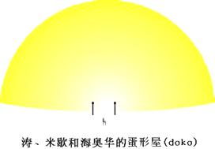
我知道，她们还不习惯地球人的面部表情。这里的人的表情，你根本无法想象，她们都是一种持久欢喜的样子。我不知道这到底是怎么回事——她们看起来就好像每一秒钟都有极好的消息等着她们似的！
我马上意识到，这里的人有些不平常。一瞬间，我明白了——在这儿所看到的所有人似乎都是同一个年龄。
似乎涛在这儿人缘极好，她总是用她那自然的、宽厚的微笑回答着人们各式各样的问题。不久，这里的一些主人要返回她们的工作岗位，我将此看成是我们也应该离开的信号。
我又戴上了面罩，在一片友善的祝愿声中，离开了宇航中心大厅。
我们又进入了飞台，立刻就加速朝远处一片森林飞去。飞台以每小时70～80公里的速度在离地5～６米的空中飞行着，空气温热而芳香。我又感到了空中飘荡着的音乐声，而这一切是我在地球上从未经历过的。
我们来到森林边，林中最大的树的高度给我留下了极深的印象。它们大约有200米高，直耸云天。
“最高的树有240米（地球米），米歇。”还没有等我开口，涛就解释道，“底部直径有20～30米。有些树有8000年（地球年）树龄。我们的一年是333天，26卡斯（Karses，海奥华时间单位）。一卡斯等于55劳斯（Lorses）；一劳斯等于70卡西奥（Kasios），一卡西奥几乎等于你们的一秒。现在计算一下……你想先去你的住处还是先看一看森林？”
“先看看森林吧，涛。”
飞台明显地减了速，我们在林中滑翔着，有时甚至停止不动，以便我能仔细观察。林中树木大多在十米以下。涛带着我在这奇妙的森林大地上体验着奇妙的旅行，她能以绝对准确和熟练地驾驭飞台。飞台和她驾驭的方式使我突然想起了飞行地毯。
涛斜身向我，摘下了我的面罩。地面上的植物发出明亮而又柔和的金光，但我觉得这强度还可以忍受。
“现在正是你开始适应光线和色彩的时候，米歇，看！”
随着她的目光，我看到在非常高的树枝上有三只巨大的色彩斑斓的蝴蝶。这些生灵有着一米长的翅膀，鼓翼翱翔在丛林的上空，非常幸运的是，它们正向着我们飞来。它们飞得越来越近，我们能看到它们翅膀上那蓝、绿和菊黄色。
这个景象我至今也记得如此清晰，就好像这是在昨天发生似的。当它们飞过我头顶时，我能看到它们那形状奇特的翅膀边缘，飞得美丽极了！其中一只飞到了离我们只有数米的一片树叶上，它的身体上有金色和银色交错分布的环，触须绿得像绿宝石一般。它的长嘴是金色的，翅膀上面有着在绿色的背景上镶嵌有明亮的蓝色条纹和暗黄色宝石样的齿纹。而下面是深蓝色，但发着光，好像那色彩是从翅膀上面透下来的似的。
我不由得赞叹起它这美丽的身体。
栖息在树叶上时，这特大号昆虫似乎还发出一种轻微的口哨声。这使我很惊讶，我在地球上还从未想到过这种生灵能发出声音!当然，这儿不是地球，而是海奥华。这只不过是一系列让我吃惊的事件的开始。
森林的地面上，长着种类及其繁多的植物，一种比一种奇特，将地面遮盖得严严实实，但我还是注意到了有些灌木。我猜想，是由于那些高大的植物影响得它们不能很好地生长。这些植物小到像地面上的苔藓，大到一大丛玫瑰树。有一种植物，叶子厚得像手，而形状像心形、椭圆形，有时又非常长而细。它们的叶子与其说是蓝色的，不如说是绿色的。林中各式各样的花卉争奇斗妍，千奇百怪，甚至还有纯黑色的花。从我们这数米的高度向下看，景色壮观极了。
我们上升到了森林最高处，我按要求又戴上了面罩。我们从大树的华盖下飞入，在这些巨树的枝叶中缓慢飞着。
森林上方的光线极强，我们好像是穿行在一片晶体中。奇异的鸟儿在高高的树枝上栖憩，静静地瞅着我们飞过。它们的羽毛色彩繁杂，尽管我带着面罩，我仍然能觉得它们像是在庆祝节日般，穿着艳丽的衣服。
这里有各式各样的金刚鹦鹉，身上是蓝、黄、红和红黄色的羽毛。还有一种天堂鸟，高昂地走在一大群看起来像是蜂鸟的鸟儿中间。这些蜂鸟有两米五长，翅膀张开足有两米。它们的羽毛颜色鲜红，红中点缀着金黄色的斑点，而尾巴呈红色、粉红色和菊黄色，美丽的色彩把它们装扮得宝石般高贵无比。当它们飞翔时，翅膀下面显出柔和的乳状粉红色，而边上是一丝微微的淡蓝色。它们的头上有特大的冠，每片羽毛都有不同的颜色，有黄、绿、菊黄、黑、蓝、红、白和奶酪色……
在描述我在海奥华看到的那些色彩时，我深深地感到了力不从心，而词不达意。我觉得自己需要一整套新字典，而我的语言能力使我不能胜任这项工作。我一直有这种感觉：这儿的色彩都是从物体内部发出的，其种类比我知道的要多得多。
在地球上，我们知道红色有十五种色调，而这里有一百多种……
不仅仅是这儿的色彩吸引了我的注意，同样地，自从开始这森林飞行，我听到的声音也不禁使我想问问涛。有些像是背景音乐，那样的轻柔；有些又像是笛子在远处持续地吹奏着。随着我们的飞行，那音乐似乎也在变化着，但音调仍是一样的。
“这是音乐吗？”
“这是成千上万只昆虫发出的振动。这种振动和某些植物颜色的振动混合在一起时，就会有这种音乐样的声音。这种植物像西奴西（xinoxi）那样，当阳光照射在它们的叶片上时会反射出色彩。对于我们自己而言，只有在我们有意调整我们本身的频率并与它相应时才能听到它，因为它是组成我们生命和环境的基本要素之一。蛮轻松舒服的，是不是？”
“的确这样！”
“专家们说，如果这种振动停止，我们的眼睛就有大麻烦了。这一点可能不大好理解。但专家毕竟是专家，尽管他们这么说，我们都没太在意，因为他们也说，这种振动停止的几率小得就像太阳明天就要分解为碎片那样。”
涛让飞台转了个湾，我们很快就离开了森林，进入了一块平原。平原上有一条横贯的、绿宝石样的河流。
我们下降到离地面只有三米的高度，沿河飞行。河里有奇异的鱼在游动着。这鱼有些像鸭嘴兽（platypuses），和我们知道的那种鱼很不一样。河水清澈得像晶体，在这个高度上也可以将河底最小的卵石分辨得一清二楚。
抬头一看，我们正在向着海洋方向飞行。在一片金色的沙滩上，有着很高的、像椰子树样的棕榈树在挥舞着它们那高贵的叶子。海洋的蓝色和小山岗上淡红色的岩石形成了极妙的对比。
大约有一百多人在沙滩上晒着太阳或在透明的海水中游泳，个个一丝不挂。
我多少有些眼花缭乱了。不仅仅是因为不断有新奇的事物出现在我的眼前，而且还因为重力的改变及对光线的持续感受。这种光线使我想起了地球，我现在看地球上的物体该有多么困难！
声音和色彩的振动也极大地影响着我的神经，我一个时刻高度紧张的人，现在完全放松了。就像自己躺在温暖的澡池中，在轻柔的音乐声中任凭身体在泡沫中飘浮……不，比那还要轻松——轻松得我都快要哭了。
我们在大约12米的高度上快速地飞过了这片巨大的海湾。地平线上出现了一些小点，有大有小，我想那是些岛屿，不用说它们就是我们在登陆前在飞船的屏幕上看到的那些岛屿了。
在朝着最小的岛飞行时，我看到无数的鱼群在海洋中扑腾，追逐着我们的飞台在海面上投下的阴影。
“它们是鲨鱼吗？”我问道。
“不，它们是达第克（Dajiks），你们地球上海豚的兄弟。你看，它们玩起来和海豚一样可爱。”
“看！看！”我打断涛的话，涛朝我指的方向看了看，笑了——我吃惊地看到一群人正朝我们飞来，但他们显然没有乘坐任何交通工具！
他们垂直着身体，在距水面约两米的高度飞快地朝我们飞来，大家很快就交叉在了一起，彼此交换了友好的问候。一瞬间，一股幸福的暖流涌满了我的全身并持续了数秒钟——这是以前拉涛利曾让我体验过的，我现在将它当成是那些‘飞行人’对我的问候。
“他们怎么会那样飞呢？他们也是用抗引力技术吗？”
“不，他们的手腕上戴着塔拉（tara），那是像表一样的东西，手里还有一个利梯欧拉克（Litiolac）控制器。这两样东西用来产生某种频率的振动从而中和了冷磁吸引力，也就是中和了海奥华的地心引力。这样，即便是成百万吨的东西都会变得像羽毛一样轻。然后，使用有些像超声一样的振动，就可以掌握飞行方向，就像他们现在这样。在这里，如果要旅行一段距离，人们就用这种方法。”
“那为什么我们用的是这东西（飞台）呢？”我问道。心里真想试一试那种装置，它是绝对无声的。
“米歇，你不耐心了。让你坐飞台是因为你还使用不了利梯欧拉克。不加练习，你会受伤的。以后如果有机会，我会教你的。看，我们快到了。”
真的快到了，我们能清楚地看到金色的沙滩，沙滩上有些人在晒太阳。几乎是一瞬间，我们就飞到了棕榈树叶下，进入一条宽阔的，两旁有着鲜花和非常芳香的灌木的通道。空气中充满了昆虫、蝴蝶和鸟儿们的声音。
飞台贴着地面缓慢飞行着。拐了最后一个弯，我们来到了一个小“蛋”旁。这小蛋位于小树丛和蔓状花卉之中。似乎这个星球上的所有建筑物都像个蛋。这些“蛋”是多数平躺的，但也有尖端朝上的。墙壁是淡黄色的，没有门，也没有窗。眼前这个“蛋”是平躺着的，好像一半埋在地下一般。
它大约有70米长、20米宽——比起我前面见过的那些“蛋”，这个就小多了。蛋形屋外有盏灯，涛将飞台停在了灯下。我们离开飞台，进了屋。跨进屋内时，我感到一股轻微的气压，轻得如同一团棉绒。这使我想起了自己在跨进宇航中心时那同样的感觉。
这些建筑物因为既无门又无窗，本身就够奇怪的了，但其内部就更奇特！就像我之前提到的那样，总的感觉就像我们仍然在屋外——到处都是极其漂亮的绿树，树枝中间是蓝中带紫的天空。这蝴蝶，这花儿……
我看到有只鸟儿正栖息在“屋顶”正中，能看到它的脚底，好像它是被“钉”在了空中似的，其效果相当奇特。唯一能让人感到是在屋内的是地毯，上面摆着看起来挺舒服的椅子和大台桌。这些家具当然是大尺寸的，以适应这些“大尺寸”的人们。
“涛，”我问道，“怎么你们的墙壁是透明的，而我们却不能从外面看进来？我们是怎么穿过墙壁的？”
“米歇，首先，这间屋子是由非常特殊的磁场建成的。我们按心愿复制了自然力。让我来解释一下，人、动物和矿物，体表都有椭圆形的辉光（Aura）和以太力场（etheric
force），你知道这些，对不对？”
我点了点头。
“后者由一部分电场组成，但更大程度上是由我们所称的Ariacostinaki的振动所组成的。”
“这种振动持续存在，在你活着的时候有保护作用。它和辉光的振动不是一回事。为建造这些住所，我们在一个核的周围制造了矿物质-以太振动。”
涛指了一下屋子中央、两把椅子中间一个像鸵鸟蛋大小的圆蛋，又说：“请你移动一下椅子好吗？米歇。”
我看了一下涛，想不到她会提出这种邀请，她以前可从来没有要求过我什么事。椅子并不大，我试了试，椅子的确有点沉重，但我还是将它移动了半米。
“很好，”她说，“现在你把那个圆东西递给我。”
我笑了一下，相比而言，这应该是个容易的活儿。我看自己能用一只手就毫不费力地拿起它，但为避免掉到地上，我还是用了双手……我一个趔趄双膝着地摔倒在地。我真没料到，它会是如此沉重，重得使我失去了平衡！我站了起来，又试了一下。这次，我把吃奶劲都使出来了，但它还是纹丝不动。
涛拍了一下我的肩膀，“看着，”说着转身走向那把椅子，将一只手放在椅子下面，将它举过了头顶。仍然用一只手，她又将它放了下来，显然并未用多大的力。然后，她用双手抓住那圆东西，又推又拉，鼓足了劲直至她的颈部静脉都鼓涨了起来，但那圆球仍然纹丝不动。
“它被焊在地板上了。”我说。
“不，米歇，它就是这屋的中心，移动它是不可能的，也就是我刚才说的‘核’。我们在它周围制造了力场，这力场强得风雨都无法穿透它。至于阳光，我们可以调节它的穿透程度。鸟也一样，它的体重尚不足以穿透这个力场，如果有较重的鸟儿落在上面，它会下陷，这会把鸟吓得立刻飞走，而不至于发生任何危险。”
“真机巧！”我说，“那么，门口的灯有什么用途？我们能从任何方位随便出入吗？”
“当然能啊，只是因为我们从外面看不到里面，随意进入可能会撞着屋里的家具。最合适的入口就是有灯光的那个地方。来，让我带你到四周看看。”
我跟着她，发现一个装饰得极其讲究的隔间。屋里有一个微型游泳池，好像是由斑岩砌成的。旁边有一个同样大小的池子，池子里有只天鹅，弯着头、张着嘴……样子很是漂亮。
涛将手放到天鹅的嘴下，水立刻就流到了她的手上，又流到了池子里。她将手缩回，水就停止了。她示意要我试一试。这池子大约有一米五高，我不得不踮起脚、高高地抬起胳膊，但我还是同样地将水引出来了。
“真聪明！”我评价道，“这岛上有可饮用的水吗？还是你们也得打井？”
涛的脸上又一次显示出被逗乐的笑容，这种神情我已经很熟悉了。每当我说错了一些对她来说似乎是“离谱”的事情的时候，她就会这么笑的。
“不，米歇，我们这儿的水源不像你们地球上。这个大石鸟下面有一个装置，她将空气从外面抽进来并将空气转化为所需要的水。”
“真是妙极了！”
“我们只不过是在发现和利用自然规律罢了。”
“如果需要热水，怎么办？”
“用电子振动力就行（electro- vibratory
force）。要热水，你将脚放到这里；要开水，就放到那里。按钮在边上，它控制着这装置的功能……但这些都只不过是物质细节，没有多大意义。”
“这边，”涛说着，随着我的眼光，“这是休息室。你在这儿休息。”她指了指地板上一个厚厚的床垫，它比地板稍底一些。
我躺了下来，立刻就觉得像是浮在地面似的。虽然看见她还在说着话，我却一个字也听不见了。后来，她在朦胧的帘子后消失了，这使我觉得好像是被包在厚厚的木棉样的“雾霭”之中。同时，耳边响起了音乐的旋律，其环境使人彻底地放松了。
数秒钟后，涛的声音又响起在了我的耳边，并随着雾霭的升起和最终消散，她的声音越来越大。我站了起来。
“觉得怎么样，米歇？”
“舒服极了。”我十分高兴地答道，“但还有件事我还没看，就是厨房。你知道厨房对我们而言是重要的！”
“这边，”她说道，笑着朝另一个方向走了几步。“你能看到这些透明的抽屉吗？抽屉里面从左到右分别有鱼、甲鱼、鸡蛋、奶酪、乳制品、蔬菜和水果。这最后一个，就是你们所叫的曼纳（manna，即《圣经》中所称的天赐的食物，圣食——译注），那是我们的面包。”
“不管是你在戏弄我还是跟我玩，在这些抽屉里看到的不过是些红、绿、棕色和这些色彩的混合物罢了……”
“不是的，你看到的是这些食物的浓缩品——鱼、蔬菜等等，是最好的厨师用特殊的方法制作的、质量最高的食品。你吃了后，就会发现这些食物很好，非常有营养。”
涛又用他们的语言说了句什么，我面前就出现了一个盘子。各种食物排列成极诱人的图案。我品尝了一些，味道真的好极了，虽然它们的味道和我这一辈子吃过的任何食物都不一样。曼纳，我在飞船上已经尝过了，现在我又吃了一些。我还发现，将它和其它蔬菜混合在一起吃则味道更好。
“你说，在地球上，这种面包被称为曼纳，地球上怎么会有它呢？”
“它是我们在宇宙飞船上执行任务时经常带的一种食品，很容易做的。只要稍微浓缩一下就行了，但又很有营养。事实上，它是一种全面食品，是用麦子和燕麦制成的。只吃它你就可以生存好几个月。”
就在这时，我的注意力被吸引到了前来的几个人身上。她们在树叶下飞着，在蛋形屋的入口处停了下来，松开了她们的塔拉，将塔拉放在一个大理石板上之后就鱼贯而入了。我高兴地认出她们是毕阿斯特拉、拉涛利和飞船上的其它一些人。她们脱下了航天制服，现在已换上了阿拉伯式的长袍，长袍上有着稍稍发光的色彩。后来我才知道为什么每件长袍的色彩是因人而异的。此刻，很难想象她们就是我在宇宙飞船上认识的、并与之交谈过的那些人。她们的变化太大了。
拉涛利走向我，微笑洋溢在她的脸上。她将手放在我的肩上，用心灵感应告诉我：“你好像有些发愣，亲爱的，不喜欢我们的住处吗？”
她读懂了我的肯定和赞美，高兴起来，并转身向其它人转述了我的意思，大家立刻互相热烈快速地交谈了起来。她们都坐了下来，就像是坐在她们自己的家里一样。我却有些鸡立鹤群之感，因为我的个头和她们实在相差得太悬殊了。
涛走回厨房，装满了一盘吃食，不知她说了一句什么，所有的手都伸向了那盘子，盘子缓慢地升向空中。
盘子在空中环绕着，不用人真正触及，它就在每个人面前停下来。最后，它停到了我的面前。我极小心地生怕它翻倒了，这动作着实把大伙儿都逗乐了。我取了一杯水麦（hydromel）。盘子停止了周转，退回到它本来的位置，所有的手也都放了下来。
“这是怎么回事？”我问涛。每个人都感到了我的疑问，屋子里爆发出一阵笑声。
“通过你所称的抗地心引力的原理，米歇。我们能很容易地将自己升在空中的，但这只不过是我们在闹着玩的把戏罢了，没有多大意思。”说完，涛双腿盘起，开始上升，升到屋顶之后又静止在半空中。我凝视着她，但很快就意识到我是屋中唯一对此感兴趣的人。的确，我肯定显得很愚蠢、木呆，因为大家都在盯着我。显然，涛的举止对其它人是司空见惯的，她们更感兴趣的是我面部那瞠目结舌的表情。涛缓缓地降到了她的座位上。
“这只是演示了你们地球上丢失的众多技术中的一种。米歇，现在地球上只有极少数人还有这种能力。过去曾有一度，有许多人在练习包括这种技术在内的其它好多种技术的。”
我们度过了轻松愉快的整整一个下午，直到“太阳”在天空落下。
之后，涛解释说，“米歇，这个‘都扣’(doko)——即我们对我们的住所的称呼——将是你在海奥华短期旅行时的临时住所。我们现在该走了，好让你睡觉。如果你想洗澡，你知道该怎么样调节水温了。你可以在床上休息，但应努力在半小时内准备就绪，因为之后就没有灯光了。我们能在夜间和在白天一样看清物体，所以不需要灯光。”
“这房间有安全系统吗？我在这儿安全吗？”我担心地问。
涛又笑了。“在这个星球上，你睡在市中心的街道上也比你睡在地球上有全副武装的士兵守卫的大楼里安全。这里，我们只有进化程度非常高的生灵，绝对没有你们地球上的那种犯罪。在我们眼里，罪犯是最坏的野兽。就说这些吧，晚安！”
涛转身出了屋子，加入到她的朋友们中去了。她们肯定给她带来了利梯欧拉克，因为她和她们在一起飞。
我收拾了一下，就要度过我在海奥华上的第一夜了。
一片巨大的、发着蓝色的火焰，周围闪烁着菊黄色和红色的光芒，一条巨大的黑蟒穿过火焰直冲我而来……一群巨人不知从哪里冒了出来，奔跑着，试图抓住巨蟒，他们上了七个人一起用力，才制止住了冲向我的黑蟒。可是，巨蟒转身吞噬了火焰，像龙一样又将火焰喷向巨人们。巨人们立刻变成了巨大的雕像，镇立在巨蟒的尾巴上。巨蟒变成了彗星，卷着巨雕而去，一直到了远东岛……（远东岛，Ester
is land；又名复活节岛，Rapa
Nui。位于南太平洋，距智利数千公里，是一个没有树木的孤岛。岛上有好多巨大的石雕。其中有些石雕高达50米，重数百吨。它们显然是史前遗迹，为世界七大奇迹之一。他们的身世困惑了历史学家和地理学家达数百年之久了，没有人能对此做出令人信服的解释——译注）
巨人们戴着奇怪的帽子在向我致意，其中一个雕像有点像涛，抓住我的肩膀说“米歇，米歇……醒醒！”涛在摇着我，微笑着。
“我的天！”我说，睁开了眼睛。“我梦见你是远东岛的一座雕像，你抓住了我的肩膀……”
“我是远东岛的一个雕像？我在抓住你的肩膀？”
“无论如何，我现在不是在做梦，对吧？”
“不是的，但你的梦的确奇怪。因为在远东岛上是有个雕像，是很久以前雕刻的，为的是纪念我，所以冠以我的名字。”
“你刚才对我说什么？”
“很简单，米歇，我会在合适的时间给你解释的。现在，我们来试一试这些衣服吧，这是给你准备的。”
涛交给我一件五彩缤纷的外罩。我很喜欢它。洗了一个温热而又香气四溢的澡后，我就换上了它，一种舒适安乐的感觉出乎意料地弥漫了我的全身。我将此感觉告诉了涛，她正端着一杯牛奶，拿着一些曼纳在等着我。
“你的外罩色彩是根据你的辉光而设计的，所以你感到舒适。如果地球上的人们能够看到辉光，他们也会穿那些与他们自己的辉光色彩相匹配的衣服的，那样会使他们感到更舒适。他们应该更多地使用而不是追求色彩。”（追求，原文使用aspirin一词，通译阿司匹林，镇痛解热药。而aspiri是意大利单词，意为渴望，与英语中的aspiring抱负、志气类同；匹配并不是简单地相同，而是有一定的搭配和对比等关系的——译注）
“你所说的准确意思是什么？”
“我会给你解释的。你不记得人们这么说：‘哎，这些衣服一点都不适合她，她怎么一点欣赏力都没有?!”
“是啊，常是这样。真的。”
“在这种情况下，这些人只不过是在选择衣服色彩上较另外一些人品位稍底而已，或者在色彩的搭配上不怎么擅长罢了。就像你们法语所讲的，他们jurent或‘撞墙’了。虽然别人看着他们的衣服不舒服，其实这些人自己也不会感到舒服，当然他们不知道是为什么。如果你提示说，是由于他们衣服的颜色问题，他们准会说你疯了。如果你解释说，他们穿的衣服的颜色应该和他们的身体辉光相匹配，他们更不会相信你。在你们的星球上，人们只相信他们能够看到的和触摸到的……但辉光毕竟是可以被看到的。”
“辉光真的有色彩吗？”
“当然啦，辉光振动发出各种色彩。你的头顶上有一束真正的混合色，里边有你知道的几乎各种颜色。围绕着头颅，有一个金色的光晕，但那只有在心灵极高的人，和牺牲自己来帮助别人的那些人中才能真正清晰地出现。光晕好像是金色的云雾，很像地球上的画家们用来表现‘圣人’和耶稣的那种光晕。光晕出现在他们的作品中，是因为在那个时代，有些艺术家真的能看到它。”
“是啊，我曾听人们这么说过，但我还是想听你再多讲一讲。”
“所有的色彩都能在辉光中找到，有些明亮，有些暗淡。比如健康不佳或心地不善的人……”
“我真想能看到辉光。我知道有人有这个能力……”
“很久以前，地球上很多人都能看到辉光并明白它的含意。但这种人现在已经很少了。静一下，米歇，你会看到它的，不仅一种，而是很多，包括你自己的。现在，我要你跟着我，我们要领你看的东西很多，而时间不太多。”
我随着涛，她将面罩又加在了我的头上，领着我来到我们昨天乘坐过的那个飞台。不一会儿，我们就来到了沙滩。
太阳刚从小岛后面升起，照亮了海洋和周围的岛屿。从水平方向看，景色真是壮观瑰丽。随着我们在沙滩上飞行，从树叶间隙我可以看到其它的蛋形屋坐落在群花丛中。沙滩上，这些蛋形屋的居民们泡在透明的海水中，或三三两两地漫步在沙子中。它们显然对我们飞台的出现有些意外。当我们行进时，他们的目光追随着我们的飞台。我觉得在这个岛上，飞台不是一个常用的交通工具。
我得在此多提一句，在海奥华上，游泳的和日光浴的人们通常都是一丝不挂的，但那些散步的和行走距离较长的人们却都穿着衣服。在这个星球上，既没有伪善、裸体癖，也没有虚伪的谦虚（这一点我以后会作解释的）。
没多久我们就到了岛的另一端。涛使飞台加速飞行在海面上，我们朝着地平线上能看到的一个大岛飞去。我禁不住赞叹起涛的驾驶技术，特别是在到达岸边的时候。
随着临近海岸，我能辨认出一些巨大的蛋形屋。他们的尖端是朝向天空的。我数了一下有九个，但树林中还散布着其它较小的和不容易辨认的蛋形屋。
涛使飞台升高了些，我们很快就到了目的地——涛把它叫做九圣城（Katra quo doj Doko）。
涛老练地将飞台降落在九圣城中心一个美丽的花园中。尽管戴着面罩，我也能感觉出那笼罩在九圣城的光晕比海奥华其它的地方更浓厚、凝重。
涛肯定了我的感觉，但她没时间给我解释，因为‘他们’在等着我们。
她领着我走进一个绿叶围成的拱形走廊，旁边有小池塘，池塘里水鸟在啾啾地鸣叫着，一些小瀑布在哗哗流着。我几乎是要跑步才能跟得上涛，但我不想求她放慢脚步。她显得有要务在身的样子，这可不是她的典型风格。突然，当我试着跨一大步想跳跃着追上她的时候，差点儿出了大洋相。这动作甚至把我自己都逗笑了——由于重力差异，我一步没跳合适，一个趔趄差点掉到池子里!幸亏我赶紧抓住了池边一棵树，才免得出洋相。
最后，我们来到中央的大蛋形屋，在入口灯下停了下来。涛好像全神贯注了一会，然后才手搭着我的肩膀领我穿过了墙壁。一进去，她立刻取下了我的面罩，同时要我半闭起眼睛。我照办了。光纤从我的下眼睑射入我的眼睛。一会儿以后，我就能正常地睁开眼睛了。
我必须说，这屋子里的光线亮度和金色比我住的那个蛋形屋中的更强，最初相当不舒服。当时，我心里非常诧异。特别是涛，她平常言谈随和、平易近人，现在好像完全变了样。我纳闷，这到底是为什么？
这个蛋形屋直径准有100米。我们径直但是缓慢地走向中央，那里有七个座位围成半圆形。每个座位上都有人，他们坐着像石头一样一动不动。起初，我还真以为他们是石雕呢！
看起来，他们很像涛，虽然他们的头发较长，面部表情更严肃，这使他们显得更为年长。他们的眼睛深处似乎发射着光芒，射得使人多少有些心里不安。使我印象最深刻的是，这里的金色雾气比外面还要重，他们头部的金色光晕很凝重。
15岁以来，我记得自己没有对谁畏惧过。不管对方是多么的伟大、高贵，或是多么重要（或想象他们是如此），没有谁能以他们的社会地位而使我心虚胆怯。
我也从来没有在和别人讲话时感到不安。对我来说，国家元首也只是个人，当人们认为他们是重要人物时，我都感到好笑！我在这里说这些，是想表明石雕本身对我来说并不是什么可怕的东西。
然而，在这个房间里，一切都变了。
当其中一个人抬手示意涛和我在他们的对面面向他们坐下时，我真正地感到了惶惶不安。语言在这里已经显得苍白无力了。我根本不可能想象出这些浑身发光的人物怎么生存——好像他们是坐在火中似的，而火中放射出金光！
他们身体笔直地坐在用纤维材料包着的、木墩样的东西上，每个座位的颜色互不相同。他们的衣服也是如此，不同的衣服都与它们的穿戴者十分相配。
所有人的坐姿都是我们在地球上禅坐的姿势（lotus position），也就是说像佛教徒们打坐的那种姿势，双手放在膝盖上。
就像以前说过的，他们坐成半圆形。因为有七个人，我就认为中间那位应是主要的角色，旁边六个就应是助手了。当然，当时我不可能记得如此多的细节，这是后来我才知道的。
最中间的那个人向我打了招呼，他的声调和旋律美妙动听，但其中又明显地带着威严。出乎意料的是，他讲的竟然也是地道的法语。
“欢迎你来到我们中间，米歇。愿我们的神灵帮助和开化你。”其它的人也应声道：“愿神灵开化你！”
他的身体缓缓地升到了空中，仍然保持着打坐的姿势，向我飘来。这倒没有让我多少吃惊，因为涛已在早前向我演示了这种悬浮技术。出于内心对他绝对的尊重，我想在这位毫无疑问是伟大的、精神生理上高层次的人面前起立，我这么努力了，但发现不可能——我好像软瘫在椅子上了。
他就停在了我的前上方，将双手放在了我的头上。双手拇指相触停在了我的前额鼻子上方、松果体的对面（即双眉内侧连线正中，中医针灸的印堂穴部位——译注），而其余手指相触停在了头顶。这些都是涛后来向我描述的，当时，我整个人都沉浸在了这么一个震撼人心的事件中，细节根本就记不得了。
他的手在我头上停留的时候，我觉得自己的肉体好像都不再存在了一般。一股缓缓的暖流和绝妙的香气从我的身体之中像波浪一样散发出来，与空气中的、隐约可闻的音乐声融合在了一起。
突然，我看见了对面那些人身上环绕着奇妙无比的光晕。当这个“首领”缓缓退回的时候，我看到了他身上放射出的、更强的光辉。这些色彩是我以前不可能看得到的。他们七个人身上最基本的色彩是一团云雾样的淡粉色，当他们活动时，身上发出了辉煌的、闪闪发光的粉红色。
他们发出的光辉将我们全都笼罩了起来！
当我缓过神来转头朝向涛时，看见她的周身也散发着极其漂亮的色彩，虽然不如那七个人的色彩那么明亮。
你会注意到，在我谈到这七个人的时候，我一直在称他们为“他”而不是“她”。
要解释这一点，我只能说，这些特殊人物的个性是如此强烈，他们的风采是那么高贵、伟大，所以，我感到他们有更多的男性气质——这并不是在贬低女性——我的反应是本能的。这多少有些像人们习惯想像美素塞拉为妇女一样（Methuselah
是《圣经》中的人物，活得时间最长，达969年——译注）。不管怎么说，是女人和男人生了我。
我知道他们身上发出的色彩就是辉光。我能看到辉光了——尽管不知道能看见多久——但我惊叹自己现在所看到的！
“首领”回到了他的座位，所有的眼睛都在注视着我，好像他们要把我看透似的。他们的确就是这样。
寂静出现了，似乎将永远这样寂静下去。我端详着那多彩的辉光在他们的身上闪烁、飞舞。有时，他们的辉光伸展得很远，远得就像涛曾经说过的，像“一束”
光柱。他们都有几乎是郁金色的光晕，境界清晰。
我知道，他们不仅能看到辉光，也知道辉光的意义。我突然觉得，自己在这个场合是一丝不挂的。一个问题刺痛了我——他们为什么要把我带到这儿来？
还是那个“首领”突然打破了静谧：“就像涛曾给你解释过的那样，米歇，我们挑选你到我们这儿来，为的就是让你将来回到地球上报告一些信息，在某些重大事情上能给你们的人提出指导性的意见、建议和忠告。”
“现在已经是某些重大事件必定要发生的时候了。地球度过了数千年的黑暗和愚昧之后，出现了所谓的‘文明’。物质技术不可避免地发展了，这种发展在过去150年间是飞速的。地球上过去也有过另一个可媲美的文明，从那时到现在已经有14500年了。地球上现在的技术进步，不但根本就无法和真正的知识相比，而且还会在不远的将来对人类造成危害！”
“其危害的根源，是因为它只是物质文明知识而不是精神文明知识。物质文明应当支持和有助于精神文明的发展，而不是限制和约束人们对后者的追求。在地球上，这种现象却在愈演愈烈，一切都在物质世界里兜圈子。你们地球上目前的情况就是如此。”
“在更大程度上，你们地球人着魔于一个单纯的目的——财富，人们一生好像都是为了财富而活。人们妒忌、吝啬，憎恨富人，蔑视穷人。换句话说，你们现在的技术一点也比不上14500年前，反而正将你们的文明拉向倒退，将你们的精神文明一步步地推向灾难。”
我注意到，每当这伟大的人物谈到“拜物主义”（materialism）的时候，他的辉光及其它人的辉光就都闪烁着暗淡和“污秽”的红色，就好像一时间他们都处在燃烧着的火灰之中……（本文的拜物主义主要指只注重物质技术的开发、研究和利用，而忽视精神心灵修养的人生观和世界观——译注）。
“我们，海奥华的人们，注定要在我们自己的原则指导下，帮助、指导、有时甚至是惩罚其它星球上的人们。我们就是处在这样一个位置的人们。”
好在涛在我们来海奥华的路上已经简要地给我讲述了地球的历史，否则，我听了这段话准会从椅子上掉下去的。
“我认为，”他说，“你已经知道我所说的‘危害人类’是什么意思了。地球上许多人都认为原子武器是主要危险，其实不是。最主要的危险是拜物主义！”
“你们地球人类追求金钱——对有些人来说，它是得到权利的工具；对另一些人来说，它是获得毒品（drug）的工具；还有一些人把它看成是拥有比邻居更多财富的象征。当一个商人有了一个大商店之后，他会渴望有第二个，然后第三个。如果他统治着一个小王国，他会想着增大它。如果一个普通人有一个他已经能和他的家人快乐地居住的房子，他会向往着更大一些的，或者拥有第二个，之后第三个……”
“为什么这么愚蠢？人总会死的，死时不得不告别他拥有的一切。也许他的孩子会乱花他的遗产，他的孙子会变成穷光蛋！他的一生都被困在了对物质享受的追求上，没有花足够的时间来提升他自己的精神层次。另外一些有钱的人们吸毒，竭力去寻找一种虚幻的天堂生活。这些人得到的报应绝对比其它人更多。”
“我知道，”他接着说，“我将要讲得很快，你可能跟不上我的话，米歇。但你应当理解我所说的，因为涛在你来的路上已经给你讲了一些相关的背景知识。”
我感到一种羞耻，几乎就像在学校里被老师训斥一样。唯一的区别是，我在此没法在自己不明白的情况下撒谎说“我明白”。因为，他能读懂我的心思，就像在读一本打开的书！
他开恩地对我笑了，他那像火焰一样的辉光此刻又恢复了原样。
“从今往后，我们将教导你，给你一个你们法语里所称的‘金钥匙’（the key to the mystery）。”
“正像你听说过的，宇宙之初只有神灵自己。祂用祂那无限的能力创造了现今物质世界的一切。祂创造了星球、太阳、植物、动物，目的只有一个：满足祂的精神需要。这是很合理的，因为，祂纯粹是个灵魂、精神（Spirit）。”
“我已经看出了你心中的疑问，为什么祂要创造物质的东西来满足精神的需要？我这么给你解释吧——神灵是在物质世界中寻找精神体验的。看得出你仍然不明白，但你已经有了进步。”
“为了有这些体验，祂想在物质中植入一小部份祂的精神。要做到这些，祂使用了第四种力——这个涛还没有给你讲——是一种纯精神的力。在此，宇宙法则也是适用的。”
“你肯定知道，宇宙的形式决定了你们太阳系九个行星围绕着它们的太阳转，同样，这些太阳又绕着更大的太阳转，这个大太阳就是这些小太阳及环绕它们的九个小行星的核……继续下去，就是宇宙的中心。爆炸，就是英语里讲的‘大爆炸’，就是从那里开始的。”
“毫无疑问，有时会有意外和例外发生。如，有时行星会从太阳系里消失，或太阳系里多出一个行星，但最终，太阳系会重新回到它们的九个行星的基本结构。”
“第四种力的作用十分重要，它要把造物主想象出的一切都变为现实。它将极微小的灵魂植入了人体，组成了你们所称的灵体（Astral
body）。它占整个人体的九分之一，也占‘二级自我’（higher-self）——有时称为‘超我’（over-self）部份的九分之一。换句话说，人的二级自我是一个整体，它将自己的九分之一派遣到人的躯体中，这一部份就叫做人的灵体。”（每个人都有一个灵体，每九个灵体组成一个二级自我。也就是说，我们每个人在地球上都有八个灵体伙伴（spirit-mate）。我们世界上的孪生子彼此就有一对灵体伙伴。灵体伙伴之间很容易出现心灵感应——译注）
“进一步讲，这二级自我是三级自我的九分之一，三级自我又是四级自我的九分之一……，这种组成可持续追踪到本源。神灵的精神体验就是要经过这巨大的滤网才能获得的。”
“决不可认为那初始的二级自我和其它自我相比不那么重要。虽然它在低水平上工作，但它的作用极其重要。它能治疗躯体疾病（地球上所称的精神疗法，Spiritual
Healing，是在医师的二级自我的参与下进行的，不需要病人本人在场。只要病人允许，医师可以在地球上的任何地方对病人加以治疗），甚至能起死回生。有很多这样的例子，临床上宣布死亡的人，在那些不报任何希望的医生们手上又复活了。”
“在这些例子中，常见的是人的灵体又遇见了二级自我。灵体在‘死亡’期间离开了肉体，它能感知到下面的躯体的存在，知道医生在拯救它的生命，也知道它所爱的人在为它哭泣。在这种状态下，作为灵体，它会觉得十分轻松——甚至有至福极乐的感觉。它通常会遗弃它的肉体——因为肉体是诸多痛苦的根源——而进入灵性通道（psychic
canal）。通道的尽头是异常奇妙的光线，之后就是至福满足的状态，这光线就是它的二级自我。”
“如果在进入这个通道到达至福满足的光线之前，他有不死的愿望——不是为了他自己，而是为了那些需要他的人们，比如说是年幼的孩子，他会要求复生的。在某些情况下，他会得到应允。”（这里指他的二级自我要求复生，而它的二级自我有能力判明他的要求是否真的是为了他人而不是单纯为了自己。如果是为了他人，二级自我会容许他复生的——这也是一种自然法则——译注）
“你在不断地通过你的大脑通道（cerebral
canal）和你的二级自我发生着信息交流，作用就像是发射机和接收机。大脑通道直接传输着你的灵体和你的二级自我之间的特殊信息。你的二级自我在持续地监测着你，日夜如此，甚至能将你从意外事故中解救出来。”
“比如说有人要搭乘飞机，可是出租车坏在了去机场的路上；叫的第二辆车也坏了，再叫第三辆也是如此……怎么会这么奇怪？你真相信这种巧合吗？要搭的飞机在30分钟后就坠毁了，无人生还。”
“再如，一个年迈且有风湿性关节炎、只能蹒跚行走的妇女要过马路，车辆的鸣声大作，刹车声阵阵，然而她却能够出乎意料地安全到达马路对面。怎么理解这些事情？当时还不是她该死的时候，所以她的二级自我出面工作了。在百分之一秒的时间内，她的二级自我激发了她体内肾上腺激素的分泌，数秒钟内，就使她的肌肉张力得到了增强，使她有能力跨过街道免得一死。”
“肾上腺激素分泌入血液使得逃离巨灾成为可能，或通过愤怒、恐惧来克服不可能克服的事情。但是，过量分泌的肾上腺激素反过来也会变成致命的毒素。”
“不是只有大脑通道才能在灵体和二级自我之间传递信息。还有其它的通道存在——做梦时——或者可以说是在睡眠中。”
“在睡眠的某些阶段，你的二级自我（Higher-self）会招呼你的灵体（Astral
body），或给以指导建议，或以某种方式重新激励灵体，增强灵体的精神力量；或教育和开导灵体，使灵体得知解决重大问题的方法和途径。由于这个原因，你的睡眠不可被突然的噪音所打断，也不可被日间所接受的、有害的情感所造成的噩梦所打断。这一点很重要。”
“或许，你现在能更好地理解你们法语中的一句话：睡一觉，方法到（night brings counsel）。”
“你现在的躯体已经很复杂了，但它比起灵体和二级自我的层次进化过程就算不了什么。为了使你们星球上的普通人能尽可能地明白，下面我用最简单的词句作一些解释。”
“你们每个人的躯体中都有一个灵体，灵体给它的二级自我传递着你一生中躯体所感受到的一切。这些感觉体验要经过九级滤网才能到达围绕神灵的以太‘海洋’。如果这些体验主要来自于‘拜物主义’，他们首先就很难从二级自我网过滤过去——就像肮脏的东西不但不能通过水网，反而会把网眼堵塞住一样。”
“如果你能通过自己一生中无尽的生活体验，让自己的灵体得到精神心灵上的提升，灵体就会得到越来越多的精神智慧。如此进化大约500～15000年，你的二级自我就没有什么可过滤的了（你的二级自我就会得到满足，而使自己的灵体进入下一个进化阶段）。”
“存在于米歇躯体里的自我将会在精神层次上得到极大的提升，到达下一个层次。到那时，它就会直接与更高级的三级自我打交道了。”
“我们可以将这个过程与一个九级滤网相比较，就像让水通过，过滤九种物质。在经过了第一级过滤之后，去掉了第一种物质，还剩八种。当然，要让你明白这个道理，我不得不使用大量的比喻。”
“灵体在完成了它和二级自我之间的循环后，就脱离了二级自我而与三级自我结合，整个过程又得重复一遍。同样的道理，灵体此时已经是高层次的灵体了，它也就会到更高层次的星球上去。”
“我知道你还没有完全理解我的话，我也担心你不能完全理解我所说的这一切。”
“神灵（the Spirit）以祂的智慧通过第四种力创造了九级行星。你现在所处的海奥华就是在第九级，就是说，它是最高级的星球。”
“地球是一个初级星球，也就是说是在星级的最底层。这是什么意思呢？地球就像是幼儿园，重点在于教育基本的社会价值观念；第二级星球就像是个小学，灌输进一步的价值观。在这两个学校中，成年指导者的作用是不可避免的。第三级星球好像是个中学，要让学生探索更进一步的价值观；下一步，你将去大学作为成人而受到教育，因为你不仅会学到一定的知识，也要开始承担公民的责任……”
“这就是九级行星进化的过程。你的精神层次越高，你得到的益处也就越大。在一个较高级的星球上，高级的自然环境和基本的生活方式都会帮助你的灵体进化。在那里，你得到食物的方式反而越简单，你的基本生活方式也更简单，这使你的精神层次提升得更快。”
“在较高级星球上，自然环境本身也有助于‘学生’学习。当你到了第六级以上时，不但你的灵体，而且你的躯体都会因你的精神层次的升高而获得极大的改善。”
“我们知道你很欣赏这里的一切，你看得越多，你就会越喜欢这里，将这里当成是你们地球上所说的天堂。但是，比起你在进化成为纯精神（pure
spirit）时的真正快乐、幸福，这仍然不算什么。”
“我不得不谨慎，不想给你解释得太多，因为你必须一字一句地报告，在你要写的书里不改变任何东西。极其重要的是，你不得掺杂进任何个人的观点观念。不过，别担心，在你开始写书的时候，涛会帮助你的……”
“在这个星球，你仍然可以有你自己的躯体，你也可以和神灵一起融化在以太中。”
说这些话时，它周身的辉光比以前任何时候都明亮。使我惊诧不已的是，它几乎消失到金色的云雾里了，一秒钟后才又重新出现。
“你已经明白，灵体只住在你的躯体中的另一重身体中，它完整地记录着你在往生中所获得的、所有的智慧。”
“灵体只能在精神生活中而不可能在物质生活中得到充实。你的躯体只是一个交通工具。在绝大多数情况下，我们死后就与它告别了。”
“我来解释一下，因为我知道这‘绝大多数情况下’把你搞糊涂了。我是说，我们有些人，包括我们星球上的所有人，能随心所欲地复制我们自己的身体。是的，你已经注意到了我们大多数人看起来像同一个年龄。海奥华是这个银河系三个最高级别的星球之一。我们中间一部分人能够、而且也的确是直接融入了我们所称的、伟大的以太中了。”
“因此，在这个特殊星球上，我们已经到达了一个近乎完满的级别。不但是在物质层次上，而且在精神层次上更是如此。但就像宇宙中所有的生灵一样，我们仍然有我们的任务。事实上，任何事情，哪怕是一颗简单的小石子，也有它的作用。”
“作为高级星球的生灵，我们的任务和角色就是指导及帮助其它星球上的人们在精神文明、有时甚至是在物质文明方面得到提高。我们能够提供物质技术方面的帮助，是由于我们在这一方面是层次最高的。的确，就像是作为一个父亲，如果年资不高、没有受过教育、做事不老练成熟，怎么能帮助他的孩子提高精神修养层次呢？”
“如果一个小孩不幸该受到体罚——有时不得不这样——这时，父母能不比孩子更强壮吗？某些成年人，听不得别人的劝告，实足得愚顽不化，也需要物质手段加以校正。”
“米歇，你来自于一个有时被称为‘忧伤的星球’ 的地球（the planet of
sorrows），这名字的确恰如其份。因为这里面有个根本的原因——那里有非常特殊的教学环境。这并不是说，那里的生活艰难得以至于你们必须做一些不该做的事——你们不能随心所欲地违抗自然规律，你们也不能随意毁坏神灵给你们准备的一切！也就是说，你们不能随意破坏神灵精心设计的生态系统。”
“有些国家，如你来的那个国家，已经开始注重生态平衡了，这是向正确方向迈出的第一步。但就是在这个国家，对水和空气的污染又做了些什么？对最糟糕的污染——噪音，又做了些什么？我说最糟糕，是因为人们，当然包括澳大利亚，根本就没把它当回事！”
“你可以问一问大家——交通噪音是否搅扰了你？得到的回答肯定会使你大吃一惊——85％的人会说‘什么噪音？噢，噪音，我们已经习惯了。’这完全是因为他们已经习惯了那存在的危险！”
就在这时，涛拉，就是人们对这个大人物的称呼，打了个手势，我转回头，他在回答我心中的问题——他怎么能够说出百分数？怎么对我们地球上的事情知道得如此众多和准确？
回头一看，我吃惊地几乎喊了出来，我身后站着毕阿斯特拉和拉涛利。她们的存在并没有使我吃惊，但要知道我的朋友一个三米一、一个二米八，现在却都缩小到了我一样的身高了！
我的嘴肯定张得老大，因为涛拉都笑了。“你会明白，我们的一些人，有时、而且这些日子经常地和你们地球人住在一起的原因——这就是我对你的问题的回答。”
“接着谈谈噪音这个重要的话题吧。它的危险达到了‘如果不采取措施，灾难将是不可避免的’程度！”
“现在，我们来看一看迪斯科（dischotheque）的例子。那些习惯于听音量大于正常值三倍的音乐的人们，会使他们的大脑、躯体和灵体暴露在非常有害的振动中。如果他们能看到所造成的伤害，他们就会比逃离火灾现场还要快地躲开迪斯科。”
“但是，振动不仅来源于噪音，也来源于色彩。吃惊的是，在你们地球上这方面的科学研究并没有继续进行下去。我们的‘成员’报告了一个特殊的试验：一个能举起某一重量物体的人，在盯了一会粉红色的屏幕之后，总是会减少30％的力量！”
“你们的文明没有重视这方面的试验。事实上，色彩会极大地影响人类的行为。然而，要控制这种影响，就需要将每个人的辉光都考虑进去。比如，如果你想粉刷或给卧室贴墙纸，使墙体的色彩真正适合你，你就必须知道你辉光的基本色彩。”
“通过使墙的色彩与你自己辉光的色彩相匹配，你就能够促进和保持健康。另外，这些色彩所发射出的振动对良好的精神智力平衡很重要，它的作用就是在你睡觉时也存在。”
我不知道怎么能看到辉光中的这些重要的色彩。在地球上我们一般人也没有能力来感知辉光。
“当然，”涛拉在我还没有张口说任何话时就立刻回答了我的疑虑。
“米歇，现在十分重要的是，你们的专家们能发明特殊的和必要的仪器来感知辉光。这样，你们就能在未来的、关键的十字路口做出正确的抉择。”
“俄罗斯人已经对辉光照了像，这只是个开始。与我们的辨认能力相比，他们的结果就像只能读字母表中的前两个字母一样。辨认辉光用以治疗躯体疾病，根本就无法和将之用于灵体或生理身体方面的作用相比！这是一个精神领域的问题，也正是地球上的大问题所在。”
“现在，你们把极大的精力都花在了物理身体上了，这是一个极大的错误。如果你们的精神层次不高，你们的物质身体也同样不会好。不管怎么说，你们的物质身体总会被毁坏的，总有一天会死掉，而你们的精神，作为灵体的一部分，永远不会死亡。你越注意提高你的精神层次，你就越不易被你的物质身体所拖累，也就能更快地完成自己的生命轮回。”
“我们当然能够仅将你的灵体带到我们的星球上来，但我们却连你的躯体也带来了。这里有一个很重要的原因……我知道你已经明白了这个原因，对此我很高兴。我们也谢谢你愿意帮助我们完成我们的任务的热情和愿望。”
涛拉停止了讲话，似乎陷入了沉思，但他那炯炯发光的眼睛还在盯着我。我说不出这样沉默了多久，我当时激动异常，几乎失去了思维和理解能力。但我知道这七个人的辉光在持续地变化着，色彩变得在此更清晰、在彼就更淡，而最外面的辉光变得像雾一样了。这雾一样的辉光随着向外扩展，变成更强的金粉色，逐渐将这七个人都遮模糊了。
我感觉到涛将手放到了我的肩上。
“不，你不是在做梦，米歇。一切都是真实的。”她大声说着。好像要证明她说的是事实，她用力捏了我的肩膀，捏的那么重，使我肩上的伤在数周之后仍可辨认。
“你为什么要这么做？想不到你会这么狠，涛！”
“对不起，米歇。但有时候我们就得用些反常方式。涛拉总是这么隐去——有时也是这么出现——使你以为这是个梦。我的任务是使你明白这一切都是真实的。”
她说着这些话，把我拨得转了个圈。
我跟随着她，按原路离开了九圣城。
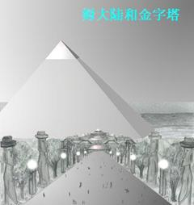
在离开九圣城时，涛又给我戴上了面罩。这一个和我以前戴的那个不一样。我看到的色彩更逼真清晰，也更明亮。
“你觉得你的新沃凯（Voki）怎么样，米歇？能耐受这光线吗？”
“是的……它……很好。这么漂亮，我觉得怎么……”说着我跌倒在涛的脚上。她双臂将我扶了起来，又把我抱到飞台上。
我在我住的蛋形屋中醒了，大吃一惊。我摸了一下肩上的伤，皱起了眉头。
“真的很对不起，米歇，但我不得不这么做。”涛的脸上有一丝后悔的表情。
“我怎么啦？”
“让我说，你是昏过去了，当然这词不怎么好听，但事实是你被笼罩在美丽之中了。你的新沃凯能使我们星球上的50％的色彩通过，而你先前的沃凯只允许20％的色彩通过。”
“只有20％？那不可能！我已经看到了这里所有美丽的色彩，蝴蝶、花卉、海洋……难怪我刚才看到树木、海洋都昏过去了。记得在一次从法国去新喀里多尼亚（New
Caledonia）的旅途中，我们停在了一个叫塔希提（Tahiti，位于太平洋南部）的岛上。我们——我的家人和朋友租了一辆车周游全岛。岛上的居民欢乐愉快，人们带着咸水湖边的稻草编成的草帽。咸水湖岸四周是红色、黄色、菊黄色和紫色的木槿、芙蓉等各式各样的植物，外边是修剪得十分美丽整齐的草坪和高大的可可树。岛上的景色被蔚蓝色的海水衬托得十分美丽迷人，我们在岛上游玩了整整一天时间。我曾在日记中写道：我饱了整整一天眼福，的确是完全陶醉在当时的美景中了。然而现在，我不得不承认与眼前的‘仙境’相比，那一切根本就算不得什么了。”（塔希提、哈瓦那、远东岛、波利尼西亚等都是姆大陆的残迹——译注）”
涛以浓厚的兴趣一直微笑着听完了我的讲述。她将手放在我的前额，说：“现在休息一下吧，米歇，你就会感到好些的。
我立刻就睡着了。这一觉睡得十分安宁，没做一点梦，大概足足有24小时。醒来后，我觉得自己精神饱满、精力充沛。
涛、拉涛利和毕阿斯特拉都来了，拉涛利和毕阿斯特拉又恢复了平常的身高。我立刻就向她们述说了我当时的感受。
“这种身体变化（metamorphos）要花一点时间的，米歇。”毕阿斯特拉解释道，“但这不重要。今天我们要带你看一看我们的国家，也给你介绍一些你很感兴趣的人。”
拉涛利走近我，将手放到涛昨天捏我的地方，疼痛立刻就消失了，我周身流遍了幸福的感觉。她对我笑了笑，把新面罩递给了我。
在外面，我仍然不得不眯着眼睛。涛招呼我爬上拉梯沃科（Lativok），原来那就是我们乘坐的飞台名字。其它人都选择单独飞行。她们在飞台上方翻飞着，好像是在玩游戏——毫无疑问，她们是在玩。在这个星球上，居民们好像都十分快乐，唯一严肃的（实际上有些严厉）就是那七位涛拉，然而他们的身上也散发着慈祥和仁爱的气息。
我们在离水面数米高的空中快速飞着。虽然我的好奇心在不断地泛起，但我也常常不得不闭起眼睛，好让自己的眼睛在明亮的光线中得到休息。尽管如此，我觉得自己好像还是有些受不了。我无法想象，如果涛给我一个能让70％的光线、或更多的光线通过的面罩，我可怎么受得了?!
我们很快就飞到了岛的岸边，海浪拍击着绿色、黑色、菊黄色和金色的岩石。海水破碎成无数的微滴形成虹光，在正午的阳光下形成了令人难忘的壮丽景色。空中高挂着一条光和色组成的彩虹，我想起码比我们地球上见到的要鲜明、艳丽一百多倍！
我们上升到了200米左右的高空继续飞行。我们飞过了一片平原，那上面有各种各样的动物——有些是两条腿的，像鸵鸟；而四条腿的像长毛象，但个头比地球上的大两倍。我也看到了奶牛和河马在并肩吃草，奶牛的形状、大小和地球上的很相似。我禁不住招呼涛看那群奶牛，就好像天真的孩子进入了动物园一样。她开心地笑了。
“我们这儿为什么就不能有奶牛啊？米歇，看那儿，那是猴子；再看那儿，那边是长颈鹿——显然它们的个头比地球上的高一些；再看，那成群的马儿奔跑时多么可爱！”
我激动得浑身发抖，声音发颤。可是，在这次旅行中我不总是这样吗？只不过程度有时轻一些、有时重一些罢了。
更使我惊讶得一句话也说不出来的是——那些马竟然有着非常漂亮的、女人相的头！有些马的毛发是金色的，有些是褐色的、棕色的，甚至还有蓝色的！它们奔跑时，常常会腾空数十米！哎呀，真的，它们还有翅膀！翅膀还不时地张开，然后又收回身体两侧。有些飞鱼在飞台前后飞腾着，它们还会抬起头看着我们！好像要试着和我们一比快慢。
涛减慢了速度、也降低了高度，我们离它们只有数米高了。更让我吃惊的是，这些“马女”们嘶叫着的声音好像是人类的语言！我的三个同伴用同样的语言和它们对着话，这种对话显而易见是极其快乐的。
我们没有在这个高度上停留多久，因为有些马女奔腾得太高了，以至于几乎就要碰上飞台，那会使它们受伤的。
平原上出现了一个个的小圆丘，但所有的圆丘好像都是同样大小的。我指了一下，毕阿斯特拉解释说：百万年以前，这些圆丘就是火山。
我们下方的植物一点也不像我刚到海奥华时看到的森林那样茂密，相反，这儿的树木是小丛、小团的，高度不超过25米。我们经过时，成千上万的白色鸟儿飞腾而起，随后又落在它们认为更“安全”的地方。一条宽阔的河流流向地平线，将平原与平原上面那些懒洋洋的、漫游的生灵们分成两半。
我能辨认出聚集在河流弯道边上的一些小型蛋形屋。涛让飞台飞过了河流，在临近这些建筑物时降到了水面高度，我们在两个蛋形屋中间的一个小方形地面上着了陆。当地的居民立刻围拢了过来。
他们并没有拥挤着、推搡着、哄抢着来到我们面前，而只是停下了手中的活儿，静静地朝着我们走来，围成了一个让人不感到窘迫的大圆圈，所有的人都有机会看到我这个外星人的脸。
我又一次惊讶地发现这些人看起来都是同样的年龄，只有大约五、六个人显得老一些。年长在这里并不是什么让人伤心的事，反而使他们增加了几分高贵。使我一直以来百思不解的是，我发现这个星球上好像没有儿童。但是，在这里，在围观的人群中我终于看到了六、七个孩子！他们看起来就是孩子，非常讨人喜欢，涛说他们只有八、九岁。
自从我来到海奥华，我还没有机会见到如此多的人们。四周是我所喜欢的宁静和他们那种文雅礼貌。他们的面容是那样的漂亮，我的尊敬之心油然而生。他们彼此是那样相像，好像所有人都是兄弟姊妹。可是我想，当我遇到一群黑人和一群亚洲人时给我留下的印象不也是这样吗？实际上，面部特征上的区别也肯定存在于这些人们中间，就像存在于我们的地球人种之间一样。
这些人身高在二米八到三米不等，四肢匀称，不太胖也不太痩，没有任何残疾——他们的体形和体格简直就是一件件艺术品。
他们的臀部相对于一个男人来说就多少大了些，但我已知道他们有些人曾生过小孩。
这里所有人的头发都十分漂亮——多数是金黄色的，但也有银黄色的、菊黄色的，偶然还有明亮的板栗色的。也有些人像涛和毕阿斯特拉一样，上唇有着细微的胡子，但除此之外他们绝对没有其它任何体毛（这些，当然不是我当时就可以观察得到的，而是后来我偶然在近距离见过一些裸体日光浴的人们后才知道的）。
他们的肤色使我想起了阿拉伯妇女——她们用衣服防护着皮肤避免日晒——这里的人们，当然不是那种典型的、苍白的黄色皮肤。
他们有着如此有神的眼睛，都是明亮的紫色和蓝色，以至于我怀疑他们是不是瞎子，好像我仍在地球上一样。
他们的长腿和圆臀使我想起了我们的女子长跑运动员。他们的乳房美丽匀称而又绷得紧紧的，那模样从哪个角度看都让人喜欢。说到乳房，读者就能理解我在初次见到涛时，将她当成女人的失误了。我觉得，地球上的女人们肯定会嫉妒这些人的乳房的，而男人们则会为它而动情……
我已经评价过涛的脸的美丽，这些人当中有些也有这种“典型”的特征。还有一些人的脸我描述它们是“讨人喜欢”或“迷人”的。他们的每张脸虽然在形状和特征上有少许不同，但似乎都是某个艺术家的作品，都有它独特、迷人之处。不管怎么说，他们脸上的表情、外在的举止和态度，正是他们内在的智慧和气质的表露。
总的说来，我在这些人身上找不到一丝丝的虚伪。他们微笑着欢迎我们的到来，微笑时都露出一排十分美丽洁白的牙齿。这躯体上的完美倒没有让我多大吃惊，因为涛解释过，他们能随心所欲地使他们的身体细胞再生；也可以这么说，我没有理由怀疑她们那伟大、高贵的身体会衰老了。
“我们打扰了他们了吗？”我问毕阿斯特拉，她此时正好在我身边。
“没有，一点都没有。”她回答道，“这个城里的绝大多数人都在度假，这里也是人们经常来禅坐的地方。”
三个“年长”的人走了过来。涛示意我用法语向他们问好，而且声音尽量大一点，好让所有人都能听到。我相信自己也是这么做了——
“我十分高兴来到你们中间，并真诚地赞美你们的星球以及生活在这个星球的人们。你们是幸运的，而我也很乐意和你们生活在一起。”
这段话引起了一阵欢呼。我想，不仅仅是因为语言本身，主要是他们中的大多数人可能从来都没有听到过一个外星人的说话；还有，我说话的内容他们都能靠心灵感应而理解它。
毕阿斯特拉示意我跟随着那三个“年长者”。他们领我走进了其中一个蛋形屋。我们七个人全部就座后，涛开口了：“米歇，请允许我介绍一下拉梯欧奴斯（Lationusi）”，她指了指其中一个人，我起身鞠了一个躬，“拉梯欧奴斯已经14000多岁了，他就是地球上姆大陆的最后一个国王。”
“我不明白。”
“你不想明白，米歇。而且，在这个特殊的场合，你和你们地球上的许多人一样。”
我肯定显得惶惑至极，因为涛、毕阿斯特拉和拉涛利都大声笑了。
“别显得这样，米歇，我只是想稍微刺激你一下。现在，当着拉梯欧奴斯的面，我来解释一下地球上众多难解之谜中的一部分谜，而这些谜使你们地球上的专家们百思不得其解。这些专家，我多说一句，应当将他们宝贵的时间花在更有用的事情上去。下面我将要讲的不仅仅是一个、而是好多个困惑他们的谜团。”
我们围成了一个圆圈。涛坐在拉梯欧奴斯的旁边，而我坐在他们的对面。
“就像我在来海奥华的路上解释的那样，巴卡拉梯尼人在135万年前就到达了地球。三万年后可怕的地壳激变（cataclysm）冲刷出了海洋，导致了岛屿甚至大陆的形成。我也谈到，一大块陆地从太平洋底浮到了水面上。这个大陆就叫做‘Lamar’，但对你来说，最好理解为是姆大陆。最初它是一整块大陆，但两千年后，地震使它变成了三大块，大部分都位于赤道。”
“随着时间的推移，植物出现了，草长起来了，森林形成了。逐渐地，动物也从连接姆大陆和北美洲之间的、非常狭窄的地峡迁移到了姆大陆。就这大洪水所造成的灾难而言，黄种人较好地生存了下来，是他们首先制造了船只来探索海洋的。大约在30万年前，他们在姆大陆的西北方向登了陆，并在那里逐渐形成了一个小部落。”
“这个部落在数世纪里并没有增大多少，因为他们在向外迁移上有很大困难。这一点，需要较长时间来解释，而且也不是我们现在所谈的重点。”
“25万年以前，阿莱姆X3星球上的人们，也就是在我们来的路上曾采集过标本的那个星球，曾经发起过星际探索活动，进入了你们的太阳系。在探索了土星、木星、火星和水星之后，他们在现在的中国那个地区登了陆。在那里，他们的宇宙飞船引起了当地众多居民相当大的惊慌。这就是他们传说中的有‘火龙’从天而降之说的来源。恐慌和不信任使当地的人们最终发动了对外星人的进攻，而外星人们也不得不使用武力自卫。这一点是外星人自己并不情愿的，因为他们不但在物质技术上先进，而且在精神层次上也很高，所以他们厌恶血腥暴力。”
“他们继续探索，发现并喜欢上了姆大陆。这是因为，首先，这个大陆上基本属于无人居住的状态；另外，就它的（海拔）高度而言，绝对是个天堂。”
“他们吸取了与中国人发生冲突的教训，这一次他们特别谨慎小心。他们也认为最好建立一个基地，这样，如果再遇到地球人类中那些认真和拼命的民族时，好有个依靠。”
“哦，我还没有解释过他们来地球的原因呢。他们星球上的人口不幸过度膨胀，所以，他们想迁移数百万人到地球上来。这个行动的意义是如此重大，所以，决不能出现任何失误。他们决定将大本营建立在月亮而不是在地球上，因为月亮离地球更近，他们认为那里非常安全。”
“他们花了50年时间建立了月球基地。基地还没有完全建好，向姆大陆的移民就开始了。一切都很顺利。在姆大陆西北方的、那个居住中国人的小部落，在这些外星人登陆姆大陆的数百年后已经被自然完全摧毁，所以，实际上他们拥有了整个姆大陆。”
“他们很快就修建了城市、渠道、道路，他们在道路上铺上了巨大的石板。常用的交通工具就是飞行车，和我们的拉梯沃科（飞台）很相似。”
“他们从他们的星球上运来了动物，如狗和犰狳（披甲猪——译注），后来运来了他们特别喜欢的猪。”
当她告诉我所有这些动物时，我想起了我们在访问那个星球时看到的猪和狗时，是多么地惊讶！一下子，我明白了所有的事情。
“这些男人平均身高一米八，女人一米六。他们的头发是黑色的，眼睛很漂亮，也是黑色的。皮肤是古铜色的。当我们在阿莱姆X3星球上空停留时，我曾看到过一些这样的人。我相信你已经猜对了——他们就是波利尼西亚人的祖先。”
“就这样，他们在整个大陆从南到北，从东到西都建立了定居点，其中包括十九个大城市，这其中又有七座是宗教性的圣城。小村庄星罗棋布，因为这些人是娴熟的农场主和牧业主。”
“他们的政治体制照搬了阿莱姆X3星球上的模式。他们很早以前就发现，管理国家的唯一好办法就是让国家领导机构由七个人组成。这些人不得代表任何政治团体。他们的唯一目标就是整个国民的利益。”
“这七个人中有一个高级法官，他的表决权，一票顶两票。例如，在某个提案上有四个人反对他、两个人赞成他，他们双方就成了平局。这时，他们会展开数小时、甚至数天的辩论，直到七个人中有一个人改变主意。这种辩论是完全基于智慧以及对人民的热爱和关心的。”
“这些高层人物并不因为领导着整个国家而有什么优越的物质享受。作为领导者，是他们的使命，因为他们热衷于为他们的国家服务——这就避免了让投机分子混入国家的领导阶层。”
“我们现在的国家领导人可不是这样!”我说道，心理有一丝痛苦，“这些人又是怎么选出来的？”
“选举的程序是这样的——每个村庄或一个小区选出一名诚实、正直的人。有不良行为记录和有盲信倾向的人不得被选。被选者应当在各个方面都表现出诚实、正直。他被派往附近的城镇与其它村庄的代表们再一起参加上一级的选举。”
“举例来说，如果有六十个村庄，就会有六十个因他们的诚实、正直而不是因为他们的允诺（而后来又食言了）而被选的代表。来自全国的代表们将聚集在他们的首都。他们分成六组，每组都有一个单独的、特殊的会议厅。在未来的十天里，每组单独活动——讨论政务、参加宴会、欣赏文艺演出等。最后，他们选出一名组长。这样，如果有六十个代表，分成十个组，就会有十个组长。用同样的方式从这十个人中选出七个国务委员。再从他们中选出一个，授予国王称号。”
“那么，他是个民主国王了。”我说。
涛对我的评语笑了一下，拉提欧奴斯却稍稍皱了一下眉。
“这种选举，只出现在国王去世而且没有指定任何接班人，或被指定者没有得到那七人国务委员的认可时才会发生。被选者被授予国王称号，首先因为他是神灵在地球上的代表；其次，在90％的情况下，他是前任国王的儿子或近亲。”
“这些像过去的罗马帝国。”
“对，是这样。但是，如果这个国王表现出独裁专断的倾向，他就会被国务委员们罢免。现在，还是让我们回到我们那些阿莱姆X3星球的移民们身上吧……”
“他们的首都，称作萨瓦纳萨（Savanasa），坐落在一个高原上，（海拔）高300米，俯视着苏瓦图湾（Gulf of
Suvatu）。在姆大陆上，除了西南和东南方各有一个小山岗外，这个高原就是姆大陆上最高的地方。”
“对不起，涛，我能打断一下吗？当你提到地壳激变（cataclysm）在地轴发生变更的时候，你说在月亮上定居是不可能的，因为，当时还没有月亮。可现在，你说这些人却在月亮上建立了安全基地？”
“当黑人在澳大利亚定居以及在其后很长的一段时间里，是还没有月亮。大约600万年前，曾有两个非常小的月亮绕着地球运行，但最终都与地球相撞了。当时地球上并没有人烟，所以可怕的地壳激变虽然发生了，但也无关紧要。”
“大约50万年前，地球‘捕获’了一个非常大的月亮——就是现在的月亮。它在经过地球时，因距离太近，就被地球吸引进了绕地球自己的轨道。‘月亮’常常都是这么来的。这一现象导致了非常可怕的灾难，结果……”
“你说的‘距离太近’是什么意思？为什么没有和地球相撞？而且，月亮是什么？”
“它们本来是应相撞的，但往往并不是如此。月亮本身就是一个绕它自己的太阳旋转的小行星。它的轨道是螺旋形的，而且圆心越来越小。小行星的惯性小些，可螺旋形的旋转比大行星更快。随着旋转的加快，他们常常会被大一些的行星俘获。
如果相距太近，大行星的引力就会比太阳还要大，小行星就会绕着大行星运转，但同样还是螺旋式的，最终还是会与大行星相撞。”
“你是说我们那诗歌中经常赞美的月亮，总会有一天会落到我们的头上？”
“总会有一天，是啊……但大约在19.5万年内不会。”
我肯定显得如释重负，显得恐惧滑稽，因为我的主人们都笑了。
涛继续道：“当这发生时——即月亮与地球相撞——就是你们地球的末日。到那时，如果地球人如不能在物质技术及精神文明层次上都达到足够高度，地球就将有灭顶之灾了。但是，如果达到了足够高的层次，你们就可以转移到其它星球上去。所有的事情，都有它的必然结局。但是，米歇，现在我讲的是有关姆大陆的故事……”
“萨瓦纳萨坐落在一片巨大的高原上，俯视着一块平均高度不超过30米的平原。高原中央有一座巨大的金字塔，塔上每一块石头（有些重50吨）都被切割得误差不超过五分之一厘米，使用的就是我们所称的‘超声振动’技术。这些都是在现在远东岛的哈拉顿（Holaton）采石场进行的，那是整个姆大陆上能发现这种岩石的地方。但当时姆大陆上还有另一个采石场，叫作奴托拉（Notora）。”
“巨石是采用抗重力技术（anti-
gravitational）运输的。当时，已经有这种技术了，石头装载在平板车上，行使时，离地面有二十厘米高。路面铺有石板，铺建技术和建造金字塔的技术一样。这种道路贯通全国，纵横交错，像一个巨大的蜘蛛网连接到首都萨瓦纳萨。”
“巨石被运到萨瓦纳萨，按照专家和建筑师的要求堆砌起来。工程完工后，金字塔的精确高度是440.01米。四个面也精确地朝向罗盘的四个点。”
“金字塔是被用作为皇宫、还是皇陵？”当我问这个问题时，所有的人都露出同样的、宽厚的微笑。
“都不是，米歇。金字塔比那更重要——它是一个工具，一个极了不起的工具。我知道你难以相信，但工具就是工具。埃及的胡夫（Cheops）金字塔也是工具，虽然在尺寸上小了一点。”
“工具？请解释一下，我理解不了。”我真的理解不了涛的话，但我知道我就要知道一个秘密的真相了——一个使那么多人百思不得其解、百探不得其义，而成为地球上那么多文学作品主题的地球秘密！
“你会理解的，”涛继续说道，“他们是高度文明的人们，对宇宙规律有相当深刻的知晓；他们用金字塔捕获宇宙射线、宇宙力、宇宙能量以及地球能量。”
“金字塔内，房间是按精细的计划所建造的，被国王和其它圣贤作为非常重要的信息交流中心，与其它星球及宇宙中其它世界进行着信息交流。这种与外星人的交流在现今地球上已经不可能了，但当时姆大陆的人通过他们自己的能力，应用宇宙力与其它星球保持着交流，他们甚至能探索其它世界。”
“这是建造金字塔的唯一目的吗？”
“不，第二个目的是造雨。用一种掺有银的、特殊合金制成的盘状装置，它就能在数日内，使云层聚集在姆大陆上空而得到他们想要的雨。”
“就这样，他们最终在全大陆上创造了一个天堂。河流和泉水从未干枯，缓缓流过那基本平坦的、大陆的四面八方。全国各地不同纬度长着橘子、柑子和苹果，果实累累，将树枝都压弯了腰。还有一些奇异的，现在地球上已经没有了的水果，产量极其丰富。有一种水果叫莱库梯（Laikoti），能使大脑兴奋，食用它后，能使人解决平常解决不了的问题。它虽然具有这种特性，但并不属于真正意义上的药，当时的圣贤们还是反对食用它。莱库梯也就只准在皇家园林中种植。”
在此插一句，在写这本书时，我很有兴趣地注意到，莱库梯的禁用与我所知道的故事有着极大的相似性——在《圣经》中，亚当（Adan）被要求不得吃那苹果。
“尽管如此，这种果树还是在全国各地被秘密地种植。犯禁者得到了严厉惩罚，因为他们直接违反了国王的命令。就宗教和政府而言，国王的命令是必须被执行的，因为它是神灵（the
Great Soirit）的代理人。因此，受到尊敬的不是他本人，而是他所代表的那个神灵。”
“这些人信仰涛柔（Tharoa）——上帝（the God）、神灵（the Spirit），独一无二（the
one
and
only）宇宙万物的创造者（the
Creator of all
things），当然，他们也相信轮回。”
“米歇，我们现在讲的是很久以前在你们星球上发生的一个重大事件，为的是使你在将来能开导你们的地球人。我不打算过分详细介绍地球上曾有过的、文明程度最高的人类所居住的家园的地理情况，但你应该知道，五万年之后，姆大陆的人口达到了800万人。”
“他们持续不断地探索和研究着地球的各个方面。他们使用的飞船，很像你们地球人现在叫的飞碟（flying
saucers）。他们知道，地球的绝大多数地区都住着黑人、黄种人和白人，白人由于从一开始就丢失了物质技术而已经退化到了原始状态。这些白种人实际上是在巴卡拉梯尼人之后、阿莱姆X3人之前到达地球的。当时人数很少，定居在你们称为大西洋（Atlantis）的地区。由于物质方面而不是精神文明方面的原因，他们的文明完全退化了。”
“由于物质方面的原因是什么意思？”
“自然灾难。自然灾难完全摧毁了他们的城镇及几乎所有赖以发展物质技术的装置。”
“我必须强调以下几点：在开始探索地球之前，姆大陆上的人曾使用萨瓦纳萨金字塔作过科学研究，研究的结果使他们决定将他们的人派往新几内亚和亚洲南部——也就是说，全都派往姆大陆的西边，但同时，他们也在美洲南部和中部建立起了殖民点。”
“最重要的是，他们建立的一个殖民点后来变成了一个伟大的城市，它就在你们的考古学家们称之为梯阿库阿奴（Thiacuano）的地区，离梯梯卡卡湖（Lake
Titicaca，位于秘鲁和玻利维亚之间——译注）不远。当时还没有安第斯山（Andes，安第斯山脉，位于南美洲西部——译注），它是后来才形成的，你很快就会知道的。”
“他们在梯阿库阿奴建立了一个巨大的海港。当时，南北美洲都是一片平原。他们修建了一条运河，将位于现在巴西的内陆海与太平洋连接了起来。这个内陆海在大西洋也有一个出口。这样就有可能从一个大洋航行到另一个大洋，也就有可能移民到大西洋的大陆了……”
“可你说他们有飞船——他们为什么不用？如果他们开凿运河，那一定是打算使用船只了。”
“他们使用飞船就像你们使用飞机一样，米歇。对非常重的货物，他们使用抗引力装置，就像现在地球上虽然有飞机但仍然使用载重汽车一样。”
“所以，就像刚才我说的，他们定居到了大西洲。当时，许多大西洲的白种人都喜欢迁移到北欧去，因为他们不喜欢从姆大陆来的新政府和宗教。这些白种人乘坐的是由蒸汽机和风力推动的船只。的确，在你们称之为‘史前’时期，他们发明了蒸汽机。我必须指出，英伦诸岛当时还不是个岛，而是与欧洲北部相连；白令海峡（Straits
Of Gibraltar）也不存在；而非洲也和南欧相连。”
“许多大西洲的白人也迁移到了非洲北部，与当地的黑种人和黄种人的混血种住在了一起。这些人的整体混合产生了新人种。这种现象持续了数千年，他们就是你所知道的非洲北部的伊斯兰人（Berbers）、土阿热爵人（Tuareges）等等。在那些日子里，我们常常到地球去。当我们认为时机合适时，我们会公开地拜访那些新的殖民点。姆大陆的殖民者有时会碰到很大的麻烦，比如在印度和新几内亚，他们没法使他们的文明与当地已经存在的文明相融。那时，我们公开来到地球，乘坐的就是你坐的那种飞船，虽然形状不一样。”
“我们个头高大，明显地漂亮，在那些还没有怎么开化的人们眼中无疑是上帝下凡了。他们有时还将我们当成是吃人的动物哩。”
“我们的任务就是尽量以友好、和善的上帝形象出现。这样就可以避免不必要的冲突和战争，也不至于因为他们的宗教信仰而对我们产生憎恨。”
“由于那时我们频繁访问地球，因而出现了许多传说，把我们描绘成天堂来的‘巨兽’和‘喷火车’（chariots of fire）。”
“我们与姆大陆的人们保持着良好的关系。当时，我的灵体就居住在一个和我现在‘穿着的’躯体非常相像的躯体之中。”
“艺术家和雕塑家们对我们很感兴趣，他们征得了国王的同意之后，为我们塑了像。哈拉顿上的那些巨雕就是他们的艺术作品。”（哈拉顿位于姆大陆东南方的远东岛上——译注）
“就当时的文明程度来说，他们是极伟大的艺术品。其大小和形状，用你们的话来讲就是十分‘逼真’。这就是我的雕像的来源。”
“雕刻工作结束后，就要转运了，运送工具就是当时在姆大陆各地使用的巨大平台。当时的国王希望这些雕像竖立在皇宫花园，或者立在通往金字塔的大道两边。不幸的是，当代表我的那个雕像连同其它一些雕像在就要运送的时候，一场大洪水摧毁了姆大陆。”
“可是，哈拉顿还是部份地被保留了下来。当我说‘部份地’的时候，你肯定意识到了当时那采石坑比今天残存的要大十倍。没有被洪水吞食的地方就是我的雕像现在所在的地方。”
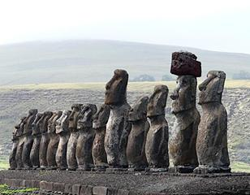
“我的真人雕像就是这样在远东岛上保留了下来。当你说你在梦中梦见了我是远东岛上一座雕像的样子时，我说，我就是。你以为我是在说隐喻，你其实只说对了一半。你知道，米歇，有些梦，就像你那个梦，是受着拉扣梯那（Lacotina）影响的，而拉扣梯那是没法用地球上的语言解释清楚的。你没有必要硬要理解这种现象，但是，在拉扣梯那的影响下，那是一个"真实的"梦。”
涛结束了对梦的解说，脸上又泛起我所熟悉的微笑。“如果你记不住我所说的所有事情，我会在适当的时候帮助你的。”
说着，她站了起来，我们大家也都站了起来。
拉梯欧奴斯领着我们来到蛋形屋中的一个分间——休息室。在这里人们可以完全彻底地放松，因为外界声音一点也进不来。在这儿，拉涛利和另外那两个年长者离开了我们，只有拉梯欧奴斯、涛、毕阿斯特拉和我了。
涛解释说，因为我的灵力还不够高和完善，我必须服用一种特殊的药物，才能够参加一个重要和特殊的试验。就是说，我将要回到地球上姆大陆消失的时候，也就是说回到14500年以前的灵空（Psychosphere）。
我现在理解灵空的意思是：每个星球的周围，在它诞生之日起，就有一种灵性空层（或空间，时空），或者说是个振动着的囊壳。它以比光速快七倍的速度旋转着，能像吸墨纸一样将星球发生的所有事情都无一遗漏地记录下来。其内容对我们地球来说当然是珍贵无比的——可我们没有任何办法“读历史”(reading
the story)!
大家都知道，美国科学家和技术人员在研制“时间机器”，但至今据我所知，他们还没有成功。按涛的话来讲，其困难在于没法设计出与这囊壳频率相应、而不是与波长相应的装置。人类，作为宇宙的内在成份，由于具有灵体，经过一定训练就有可能从这灵空中得到他想得到的知识——历史记录。当然，这需要艰苦的训练。
“这种药（名为elixlr
——译注）能帮助使你进入灵空，米歇。”
我们四个人全部坐在一张特殊的床上，我在中间，她们在周围形成三角形。我得到一杯液体，并将它喝了下去。毕阿斯特拉和涛将她们的手放到我的手和太阳穴上，而拉梯欧奴斯将她的食指放在我的松果体上方。她们让我彻底放松，不管发生什么事情都不要害怕。
“我们将以灵体旅行，她们会指导我，所以相当安全。”
那时的情景在我脑子里留下了永恒的记忆。涛在对我讲话，讲得越来越轻柔、越来越慢，我的神经也就越来越放松了下来。
我不得不承认最初我还是非常害怕的。尽管闭着眼睛，我还是被那突然明亮的、闪烁的、绚丽多彩的光色搞眩了。我能看到我周围的三个同伴，她们放射着光，但同时又是半透明的。
村庄在我脚下慢慢地变模糊了。
我有个奇怪的感觉：有四条银色的带子将我们和我们的肉体分别联在一起，而肉体现在变得像山脉一样大。
突然，一道晃眼的、白金色的光在眼前闪过，之后一段时间我既看不到、也感觉不到任何东西了。
有个圆球出现在视野，它明亮得像太阳但发着银色的光芒，以不可思议的速度运行着，我们急忙加速。应该说是我着急了，因为，我当时不再意识到身边还有同伴。在穿透这银色的“大气层”时，我察觉到它不过是一层弥漫在周围的“雾”。无法说过了多长时间，雾突然消失了，出现了一个长方形的房间。屋顶不高，有两个人盘腿坐在一个五彩缤纷的垫子上。
房间的墙壁上砌着有精细雕刻的石砖，上面雕刻着当时的文明图景：有成串的、看起来像是透明的葡萄，也有有水果，但我叫不出名字；还有动物的图案——有些还有人的头，而一些图案上是人类的身体却有着动物的头。
我注意到，我和我的三个同伴都形成了一个像气团样的‘整体’，但彼此仍能分辨得开。
“我们现在是在萨瓦纳萨金字塔的一个主厅里。”拉梯欧奴斯说道。简直不可想象——她并没有开口，但她却在对我说法语！
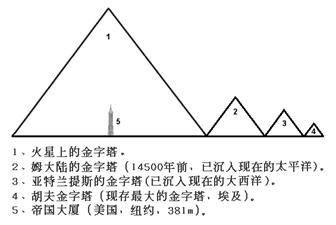
我头脑中闪过一道解释：“这是真正的心灵感应，米歇，不要问问题，一切都会自然明白的，你会明白你所应该知道的一切。”
由于我的主要任务是写这本书，报告我的体验，所以我必须尽量地解释清楚——当我处在当时那样的情景之中，我的灵体穿过了灵空——“看、听、感觉……”等等这些词都已经不再恰当了，只能故且使用。因为“感觉是同时以一种与我们正常情况下体验的、非常不同的形式出现的，甚至于和我们以灵体旅行时的情况都不同。”所有情景的出现就像梦、但又很真实，有时极慢、有时又极快无比。之后，每件事似乎都是自行明了的。后来我才知道，这是因为我所处状态的缘故，也与我的“师傅们”的密切辅助有关。
突然，我“发现”天花板上有个开口，从中望出去能看到一颗星星，我知道了这两个人是在和这颗星交换着可见的“思维”。我看见缕缕银色烟雾从他们的头顶升起，烟雾穿过屋顶的开口与远方的星星连在了一起。
这两个人处于完全的静态。他们周围浮散着微微金光。我知道，多亏我的同伴们的持续保护和提示，这两个人不但不能看到我们，也不会被我们所打扰，因为我们现在是处在另一个时空的观察者。
我更仔细地观察了他们。
其中一个是个老人，有着一头长达肩部的白发，头上戴着一顶像犹太法学博士戴的那种郁金色的纤维便帽。他穿着一件金黄色、宽松而有长袖、长达膝盖的紧身衣，衣服将他完全包了起来。他的坐姿使人看不到他的脚，但我“知道”那是一双光脚。他的双手相对，仅以指尖相触。我能清楚地看到他的手指发出一丝蓝色的光，标志着他入定后产生了无比强烈的能量。
他们的年龄相仿。另一人有一头发亮的黑发，除了他的紧身衣是亮菊黄色之外，其它装束都和前者相同。他们完全入了定，以至于好像停止了呼吸。
“他们是在和其它世界作信息交流，米歇！”我听到一句解释。
突然，眼前的景色消失了，代之而起的是另一番景色。一座宝塔样、有塔、有正门、有着金色屋顶的宫殿出现在眼前，它的窗户被装饰得美丽如画。从窗户望出去是华丽的花园，花园的珐琅池中喷着咕咕的泉水、又散落下来，在正午阳光的照耀下形成道道彩虹。巨大的花园里到处都是树木，成千上万只鸟儿在树枝中飞来飞去，给这本已壮观的景色更增添了动态的美丽。
人们穿着各式各样、五颜六色的紧身衣，成群结对地在树下和湖边散步；还有一些人在有着精美雕刻的亭子下禅坐，舒适的亭子遮住了炎日的烤晒。所有这些景色都烘托着宫殿后面朦胧可见的另一个更大的建筑物——巨大的金字塔。
我“知道”我们刚离开这个金字塔，正在赞叹着姆大陆首都萨瓦纳萨壮丽的皇宫。
皇宫后面是涛提到过的、伸展开的高原。一条至少有四十米宽的大道，好像是由一整块石头建成的，从花园中心伸向高原。大道两旁是巨荫大树，间隔地竖立着巨大的、晰晰如生的雕像，有些雕像还戴着红色或绿色的宽沿帽子。
我们在那些骑着马的人们中间滑翔。大道上还有些人骑着奇怪的、四条腿的、有着海豚样头的动物。这种动物我从来没有听说过，它们使我大为惊诧。
“它们是扇尾马（Akitepayos )，米歇，已灭种很长时间了。”又有人给我解释道。
这个动物像匹很大的马，有着多彩的尾巴。尾巴有时张开像把扇子，有些像孔雀的尾巴。它的臀部比马的要宽得多，身体长度相当，肩部突出像犀牛，前肢比后肢长。整个身体除了尾巴外，全身长着灰色的毛。它奔跑的样子使我想起了我们的骆驼。
我强烈地感觉到我的同伴要带我去另一个地方。我们很快地飞越了正在行走着的那些人们——非常快，但我却能“抓住”和注意到他们的语言特点。他们的语言很悦耳，似乎其中母音比子音多。
我眼前立刻又出现了另一个景色——有些像电影，当一个片段被切断后另一个就接上了。高原边一块巨大的场地上排列着一些机器，和我们的科幻小说家们常描写的“飞碟”一模一样。人们在上下着飞碟。有些飞碟正载着人们飞向一个巨大的建筑物，不用说那是候机厅了。
停机坪上，飞碟发出一种“耳朵”尚可忍受的哨笛声。又有人告诉我，我们对这声音的感知程度及声音本身的强度，与眼前景象中的人们的感知是相似的。
我被深深地震动了。我正在“目睹”那些高度文明的、已经死去成千上万年的人们当时的日常生活！我想起也该记下我们“脚下”的大道，那不是由一整块石头砌成的，虽然它看起来像是如此。实际上，它仍然是由一系列大石板砌成的。石板被切割和铺设得如此精密，以至于它们的连接处只能隐约可辨。
在高原边上，我们能看到整个巨大的城市、海港和后面的大海。一瞬间，我们又到了城中一条宽大的街道上。街道两旁的房屋大小和建筑风格各异，大多数的房子都有鲜花围成的大露台，而没有露台的房子也有美丽的阳台，同样种满了鲜花。在那里，我们见到了一种很漂亮的鸟。整个景色都让人赏心悦目，就像在花园里散步一样。
在街上，人们在行走或乘坐着毫无声息的飞行平台上，它们离地大约二十厘米，看起来这是极爽快的旅行方式。但还是有些人骑着扇尾马。
街道尽头，是一个很大的城市广场。我纳闷，怎么没有专卖店或类似的铺子？然而，那是一个有顶蓬的市场。摊子上摆放着各式各样、赏心悦目的货物——有鱼，我能认出的有金枪鱼、青花鱼、鲤鱼、鹤鱼；有各式肉类，也有种类多得数不清的蔬菜。但给人印象最深的却是花卉，整个市场好像充满了鲜花！显然，这里的人们喜欢花，他们的头上和手中到处都是花。
采购者自己选择货物，却没有任何东西作为交换——既没有货币，也没有其它任何可替代的实物。我的好奇心将我的师傅们拉到了市场中心，我们直接穿过了人们的身体，这是一个十分有趣的体验！
我的所有问题都得到了答案——他们不使用货币，因为一切都属于社区（community）；没有人撒谎；社区生活极其和谐。随着时间的推移，他们养成了遵守他们那十分完善和反复推敲验证过的、十分适合他们法律的习惯。
这里大多数人都在一米六到一米七之间，有淡棕色的皮肤、黑头发和黑眼睛——很像我们今天的波利尼西亚人。他们之中也有白种人，有两米高，有着金黄色的头发和蓝眼睛，但相对较多的反而是黑人。他们像白人一般高，却似乎有好几种——一种像坦密儿人(
Tamils ) ，而另一些很像我们澳大利亚的土著居民。
我们来到港口，那里有各式各样、大小不一的船只。整个港口都是人工建造的。
我被告知，修建码头的巨石来自于姆大陆西南方奴托拉采石场。也看到了一些非常复杂的机械在工作着——有造船机械，还有正在忙碌着的修理机械……
港口停泊的船只种类极其繁多，从18～19世纪风格的航船到现代式样的快艇，从蒸汽机动船到超现代的燃氢货船都有。我也被告知说，港口的巨轮都是抗重力的船只。
卸载后的船只都飘浮在水面上。当载着上千吨的货物时，它们能以70～90节的速度在水面上航行而没有任何噪音。
我被告知说，这些古典的船只属于远道而来的人们——印度、日本和中国。姆大陆的人也定居到了那里，但尚未能够更新他们的技术。关于这一点，我从拉梯欧奴斯那里知道，姆大陆的领导人将他们的大多数技术都置于保密之中，如核能、抗重力和超声波。这个政策保证了他们在地球上的领先地位和安全。
镜头又被“剪断”了，我们回到了机场，观看着城市的夜景。整个城市都被大灯均匀地照亮着，一片光明。拉（Ra）大道，就是通向萨瓦纳萨皇宫的那条大道也一样，路灯亮在大道两旁有着雕刻图案的列柱上，将大道照得如同白昼。
我被告知，这些球形灯泡能将核能转变为光能，能够持续工作数千年而不必更换。我承认自己理解不了，但我相信它们是如此的。
另一个镜头——白天的景色。大道和皇宫里挤满了服装鲜艳的人群，有个巨大的白色球连接在金字塔顶上。显然，国王（我曾在金字塔里看到过他）已经死了，就在人群聚集之前。
在人群的高声嘈杂中，这个白球爆炸了，人群中爆发出一阵响彻云天的欢呼声。我好生奇怪——因为死亡所激发的常常是眼泪而不应该是欢呼！我的同伴解释说：“米歇，你不记得我们给你上过的课了？躯体死亡的时候就是灵体解脱的时候，这些人们也知道这一点，所以才庆祝死亡的。三天之内，国王的灵体将离开地球回到神灵那里去。这个国王在生命的最后时期，责任重大、困难重重，但仍表现出了高风亮节。”
我没有回答，因为我为被涛批评健忘而感到羞耻。
一刹那，又是另一番镜头。我们现在是在皇宫前面的台阶上，眼前是一望无际的人群。我们旁边是个庄严的集会，其中有一个人穿着最华丽的，华丽得难以想象的服装——他将是姆大陆的新国王。
他身上好像有什么东西吸引了我：我似乎对他有些熟悉——我好像知道他，但就是想不起来他是谁。拉梯欧奴斯给我闪过来了回答：“那是我，米歇，那是当时的我。你认不出我，但你知道我的灵体在那个人体里面的振动。”
这就是说，拉梯欧奴斯在不寻常中体验着不寻常！当她仍然处在现在的时空时，她还能看着她的前世！
新国王从一个高贵的人手中接过一块华丽的头巾，自己把它围在了头上。人群中爆发出一阵欢呼声。姆大陆的国王——这个星球上最先进的、统治着地球将近一半土地的国家又有了新国王。
人们似乎兴奋得发狂。千万个深红色、淡菊黄色的小气球腾空而起，交响乐团开始了演奏。演奏家们遍布在整个花园、皇宫和金字塔四周静止的飞行平台上。每个乐团至少有二百人。每个平台上都有人演奏着奇怪的乐器，其音响效果就好像是从巨大的立体声喇叭中传出来似的。
音乐我一点都不熟悉。除了一种笛子发出一种非常特别的旋律之外，其余的乐器都奏着大自然的旋律——风的狂啸；花丛中蜜蜂的嗡嗡声；鸟呜声；雨滴落入湖水或浪潮冲击海滩的声音……所有这些，协奏的如此绝妙，其浪潮声好像是发自于花园，向你汹涌而来，越过头顶，在撞击了金字塔的台阶之后才消失。
我从未想象过，无论多么先进的人类能有像这些乐团那样的组合技术。所有的人，包括那些贵族和新国王，都好像在用他们的灵魂“体验”着这美妙的音乐，他们是那么出神。我也想待下来欣赏了再欣赏，让自己也陶醉在这大自然的旋律中。即使处于我的灵体——灵空状态，这音乐也能穿透我，使自己心神恍惚！但是，我被“提醒”说，我们不是来这儿游玩的。镜头就消失了。
我又发现我们在目睹一个不寻常的会议。会议由国王主持，只有那六个国务委员参加。我被告知说，当会议仅仅只有这几个人参加时，讨论的事情往往非同小可。
国王已经明显地老了，因为我们已经处在二十年后了。所有在场人的脸色都是十分严肃，他们讨论的内容是他们的技术在抗震中的价值。我在百分之一秒内立刻就明白了所有的一切——我能跟得上他们的讨论，就好像我是他们中的一员似的！
一个委员说那仪器曾经时不时地被证明是不可靠的，而另一个却说地震仪的记录完全正确，因为那个型号的仪器曾在第一次地震时，就是发生在大陆西方的那次灾难中被证明是成功的。
在他们说着话时，皇宫开始摇晃了起来，像风中的树叶一样。国王站了起来，他的眼睛被吓的睁得老大，他的两个国务委员已经跌倒在地。外面，巨大的喧嚣声似乎来自于城中。
镜头一转，我们来到了外面。正是满月，月光撒满了整个花园。一切都变得死一样的寂静，唯一的声音是一种沉闷的隆隆声，来自于城边……
突然，人们在皇宫内四散奔跑。大道边上的灯柱一一倒地，跌得粉碎。国王和他的“侍从”们慌张地跑出皇宫，爬上飞行平台，立刻朝着机场方向飞去。我们跟着他们。机场的飞行平台、飞碟四周和候机厅里到处都是喧嚣和混乱。人们朝着飞行平台和飞碟猛冲着、尖叫着、推挤着。国王的飞台飞快地朝着边上的一架飞碟飞去。当一阵震耳欲聋的、一种奇怪而持续的像雷鸣一样的声音从地球的深处发出的时候，他们一伙已经上了那架飞碟，而有些飞碟已经起飞……
机场立刻就像纸一样被撕成碎片，我们也立刻被一股巨大的火柱吞没了。那些刚起飞的飞碟被卷入火舌之中爆炸了；正在地面上奔跑的人们一瞬间就消失在了地面上那些大的可怕的裂缝之中；国王的飞碟仍停在机场上，也着火爆炸了……
国王的死就好像是个信号，那金字塔也整个一摇一摇地似乎要向那巨大的裂缝掉下去。大裂缝已经在数秒钟内增宽，伸展到了整个高原，形成了巨大的裂谷。金字塔在这裂谷边上摇摇欲坠，在一阵更剧烈的颤抖之后，终于也被烈火淹没……
镜头一转，我们此刻在看着海港和城市，它们像海浪一样起伏波动着。伴随着一阵尖锐的撕叫声，建筑物开始倒塌，一幅恐怖的场面在大火中时隐时现。
震耳欲聋的爆炸声从地表深处发出、扩散。整块“郊区”都陷了下去，之后是大片大片的大陆也陷了下去。海水立刻补充了刚刚形成的巨坑。没多久，整个姆大陆全部被淹没在了海洋之中。它的下陷速度很快，致使海洋中形成了巨大的旋涡。我看到里面有人绝望地抓住漂流物徒然地挣扎着逃命……
这场大洪水把我吓得魂飞魄散，虽然我知道那是14500年前的事情。
我们在大陆上开始了快速的“巡视”，发现到处都是同样的灾难。海水掀起的冲天巨浪，冲刷着残存的高原，又将它吞噬。
我们来到一座刚刚喷发的火山附近，看到岩浆在有规则地流动着，好像有一只巨手正在将它们托起放到岩浆上面，在我们面前创造着山脉。这一切似乎没有发生多久，整个萨瓦纳萨高原都已经完全消失。
景色转换了，变成了另一个。“米歇，我们要到南美洲了，那里还没有受到大洪水的影响。我们去看一看那里的海岸和梯阿库阿奴（Thiacuano）港口。此时，正值姆大陆国王和他的国务委员们在大地震前开会的时候。”
我们正在梯阿库阿奴港口的码头上。那是夜间，一轮满月照着大地，虽然它很快就要落山了。东方，天空中一丝光线预示着黎明即将到来。四周静悄悄的，守更人在码头上踱着步，那里停泊着无数船只。
几个彻夜狂欢的人吵闹着走进一间房子，房子外边还有一盏小路灯在亮着。
这里，我看到一些姆大陆的地球仪。
我们飞过运河，那里有些船只正在朝内陆海（在现今的巴西）的方向航行。我们在一艘航船的船桥上“休息”了下来。一股轻柔的微风从西面吹来，从后面推着船。船行的很慢，因为它正在通过一个挤满其它船只的区域。甲板上有三根桅杆，样式很现代化，约有70米长。从船身的形状看，在开阔的水面上它能行得很快。
不一会儿，我们来到一间较大的海员休息室。休息里至少有十二张床铺，上面全都有人睡着。有两个年龄大约有30岁的人没有睡。从长相看，他们有可能是从姆大陆来的。他们坐在桌子旁，全神贯注地玩着一种游戏，那很可能就是麻将牌（mahjong）。我的注意力被吸引到了其中一个人身上了——他的年龄比他的同伴稍大些，他的黑色长辫挂在身后，还扎了个红色的结。我立刻被他吸引得就像一块铁碰上了磁石一般。一眨眼，我和我的同伴们就进入了他的身体。
当我穿过他时，我感到了像触电一样的刺激，一股爱的、从未有过的感受沁透了我的全身，有一种和他合二为一的感觉，我一次又一次地穿过他。
“这很好解释，米歇，在这个人体内，你的灵体和他又融合在了一起。他就是你，你的一个前世中的你。可是，你现在只是个观察者，不是为了要重新生活在那个时代，可别陷进去了。”
我怀着极其遗憾的心情，“随着”我的同伴回到了船桥上。
突然，西方的远处传来了一声巨大的爆炸声，之后另一个爆炸声就更近了。仍然是在西方，天空开始像燃烧样发红。更近一些，在更清楚的爆炸声中，我们看到了火山的爆发，它使西方半径大约30公里的天空亮成一片。
在运河和港口上，我们感到了一阵激烈的骚动，哭喊声、汽笛样的尖叫声响成一片……
我们听到跑动的脚步声。水手们从下面涌上船桥。在他们中间，我看到那个“穿着我的灵体”的水手，惊惧得像他的同伴一样。我心中涌起一股对被这灾难吓坏了的、那个“我”的巨大同情。
城市外面，在火山爆发的亮光中，我看到一个发光的圆球迅速飞上天空，马上从视野里消失了。
“那是我们的一艘飞船，米歇，”涛解释道。“它将从非常高的高空观察灾难。它上面有17个人，他们将尽力帮助遇难者，但能得到帮助的人极少。瞧！”
大地开始摇晃和振动。三个更大的火山从海港旁的海底喷了出来，但很快就被海水淹没了。同时，一股40米高的巨浪冲向海港，发出一阵凶恶的声音。但就在巨浪到达城市之前，我们脚下的土地开始上升。这海港、这城市和这城市郊区的一整块大陆迅速上升阻挡住了海浪的袭击。为了看得更清楚一些，我们上升了一些高度。这使我想起了一个巨大的动物，从它的洞穴中出来之后，弓着背、又伸展着腰。
人们的呼喊声听起来像但丁式的尖叫，他们被这巨灾吓得像发了疯。他们正在随着整个城市上升，就好像是在电梯里一样，但这种升高似乎没完没了！
船只被大海中掀起的岩石击的粉碎，我眼睁睁地看着我们刚离开的那些水手们全部变成了粉末。那个“我”已经回到了他的本源（Source）了。
地球的形状好像发生了翻天覆地的变化。城市被掩没在西边迅速涌来的又黑又厚的云层中。火山喷出的熔岩和岩灰倾盆而下，埋葬了大地……当时有两个词从我的脑子里蹦了出来，用来形容这场灾难——“夸张”和“启示性”（grandiose
and apocalyptic）。
一切都变模糊了。我感到我的同伴们在我周围，离我很近。我又能感到那银灰色的云以眩目的速度离开了我们。之后，海奥华出现了。我有一种印象，我们是在拉着那银色的带子，为的是能很快地回到自己的躯体中，而躯体似乎正在等着我们——它大的像山一样，而当我们接近时又缩小了。
在忍受了刚离开的“恶梦”之后，我变得十分喜欢这金色星球上的美丽的色彩了。我感觉到搭在我躯体上的手离开了，我睁开眼看了一下四周，我的同伴们站着、微笑着。涛问：“你没什么吧？”
“好极了，谢谢你们，真奇怪，外面怎么还是那么亮堂？”
“当然还亮着呀，米歇，你觉得我们离开多久了？”
“我真的不知道，五、六小时吧？”
“不是，”涛说，她乐了，“不超过15劳瑟思，大约15分钟。”
她们爆发出了一阵开怀的大笑，笑我那木呆的样子。之后，她们每人搭着我一边肩膀领我走出了休息室。
拉梯欧奴斯跟在后面，她却显得不那么精神。
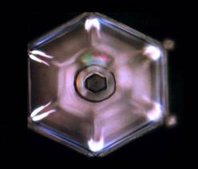
在向拉梯欧奴斯和他的同伴们表达了敬意并道别后，我们就离开村庄、登上飞台，朝我住的蛋形屋进发了。
这次我们走了另一条路。
我们飞过大片农田，中途逗留的时间很长，使我有足够的机会来欣赏那长着特大穗子的麦子。
我们又飞过了一个蛮有趣的城市——不但所有的建筑物都是蛋形的，有大有小，而且城里没有街道。我倒是理解这个原因：这里的人们能够飞行——无论用与不用拉梯沃科都一样，所以街道不是必需的。我们从那些进出蛋形屋的人们身旁经过，大的蛋形屋和我见过的宇航中心蛋形屋基本上一样大。
“这里是工厂，我们的食物就是在这里准备的。”涛说道，你昨天吃的曼纳就是在这里准备的。”
我们没有停留，而是继续飞行，飞越了这个城市，又到了大海上空。没一会，就到了我住的蛋形屋所在的那个岛上了。下了飞台，我们走进了屋里。
“你意识到没有？”涛说道，“从昨天早晨到现在，你滴水未进？这样下去你会掉体重的，你不饿吗？”
“是够奇怪的了，我不怎么饿。而在地球上，我每天吃四顿饭哩！”
“但是，仅在两小时前，你看到了姆大陆人不化钱就能满足他们的需要。我知道你已经注意到了，那里的人们非常欢乐，高度文明。”
“在姆大陆，文明在社区中循环着。不但在物质技术方面，在精神文明方面也是如此。他们成功了。当然，你可不能将这样的‘社区’（community）和存在于地球上某些国家的‘共产主义’混为一谈。共产主义，就目前在地球上的实践来看，就是专权统治的一部分，绝不是民主。因此，就目前情况看，是人类的倒退。”
“不幸的是，谈到金钱，很难给你以实质性的帮助，因为你们的整个体制都是建立在金钱、货币之上的。如果德国需要澳大利亚的5000吨羊毛，德国无法运去300辆奔驰轿车和50台拖拉机作为交换。你们的体制不是像姆大陆那样运转的，也很难改善这种体制。”
“另一方面，在政党和政治家这个问题上，却是大有文章可作的。你们全都在同一条船上，将一个国家或一个星球比作一条船是合适的。每条船上都得有它的船长。要想航行的快，还要具有熟练技术和合作精神的水手，以及他们对船长的尊重。”
“如果这船长除了知识渊博、经验丰富和反应敏捷外，他还应该是诚实、公平和正直的，那么他的‘一班人马’就有可能自觉地卖力工作。最后，还有这个船长的内在气质——不管他有什么政治和宗教背景——决定着他的成功与否。”
“比如说，想象一下，要水手们依据候选人的政治倾向，而不是航海技术和临危决断能力来选一位船长。为了使想象更容易一些，让我们假设我们正在目睹一场真正的选举。”
“我们现在站在船坞上，那里有150名水手聚集，其中有三名候选人。第一位候选人是民主党员，第二位是共产党员，第三位是保守派人士。选票的结果是，60张投给了共产党员，50张投给了民主党员，而只有40张投给了保守派人士。现在，让我来告诉你这件事是不可能得到合理的结果的。”
“共产党人想赢的话，他必须答应民主党人的某些条件，因为他只有60张选票，他必须再说服至少16人投自己的票。可是，问题是他能遵守自己的承诺吗？当然，这对另外两名候选人也是一样的。”
“由任何一位作为船长，出海时，他将会不时地发现，相当多的水手基本上是在对抗他的命令。因此，船上总是有背叛的危险。”
“当然，幸亏这不是一个船长在实现他使命的方式。我只是想挑明这样一个危险——在选举领导人的过程中，如果考虑的是他的政治背景，而不是他的领导能力、他的诚实和他的技术指导能力的话。”
“谈到这个话题，我也必须强调另一点。出海后，我们的‘被选船长’是唯一的领导者。然而，当一个政党的领导被选为国家领导后，他立刻就会遇到‘反对党’的领导人从中作梗。从他行使领导权的最初之日起，不管他的决定是好、还是坏，他都会不断地受到反对党的责难和批评。他们会竭力使他让位。在这么一种制度下，一个国家怎么会得到合理的管理呢？米歇。”
“你有办法吗？”
“当然有，这些我已经给你描述过了。唯一的办法就是——按照姆大陆的政府运转方式管理国家！就是说，将那些把人民的幸福当作唯一目标的人选作为国家领导。这些领导所图得不是个人的、政党的虚名或个人的金钱。所以，应废除政党。”
“一个国家领导人不应有愤怒、妒忌和僧恨的心理。帮助你的邻居——接受他并与他共事，而不管你们之间有什么样的差别，他最终要和你同舟共济。米歇，他和你是同一村庄、同一城镇、同一民族和同一星球上的一份子。”
“你住的房子是用什么样的材料造成的？米歇。”
“用砖头、木料、瓦片、水泥、钢铁……”
“是这样。那么所有的这些物质又是由什么组成的？”
“原子，那当然了。”
“完全正确。你也知道，这些原子必须紧密连接在一起才能形成砖头或其它建筑材料。如果它们互相排斥而不是像现在这样结合着，会发生什么事情呢？
“分解。”
“这就是了。如果你排斥你的邻居、你的儿子、你的女儿，不帮助那些你不喜欢的人，那么，你也就是在促进着你们文明的分解！这也正是地球上仇恨和暴力越来越多的原因。”
“请你思考一下你们星球上两个著名的例子，它们能证明暴力绝不是一种解决问题的正确办法。”
“第一个是拿破仑。他通过军队征服了整个欧洲，建立了他的王国，并任命他的兄弟为被征服国的统治者。大家公认拿破仑是一个巨人，一个有能力的组织者和立法者，因为他确立的许多法律200年后仍在法国存在。但是，他的王国怎么样了？米歇，它很快就分崩瓦解了，因为它是通过武力建立的。”
“同样地，希特勒也试图用武力征服欧洲，你肯定知道最后怎么啦。”
“不论过去、现在、还是将来，暴力不能、也永远不能达到正确的目的。解决问题的根本办法只能是爱和精神修养（cultivation of
minds）。你又注意过没有，整个世界，特别是欧洲，你们有许多伟大的作家、音乐家和哲学家仅仅出现在十九世纪和二十世纪初？”
“是啊，我相信是这样的。”
“你知道是什么原因吗？”
“不知道。”
“因为，随着电器、内燃机、汽车、飞机等诸如此类东西的到来，地球人忽视了他们精神上的修养，而迷恋在物质世界里了。就像伟大的涛拉解释的那样，现在，拜物主义成为危害你们地球目前和未来生活的主要因素了。”
“在政治家之后是你们的记者和评论员。虽然还有为数很少的、能仔细地核实消息来源并诚实客观的新闻，但是，我们明明白白地知道，他们中的大多数人追求的只是投合时好！”
“你们的电视也是这样，屏幕上暴力镜头越来越多。如果有关人员在承担如此重大的责任之前曾学习过精神心理学，电视、新闻报道的局面就绝对不会是现在这样了。”
“你们的记者似乎是在追求，甚至是在渴望暴力、谋杀、悲剧及灾难的镜头！人们都被他们搞得成病态了。国家领导人、记者、还有所有那些由于他们的社会地位而能够对人民施加影响的人，都对成千上万受他们影响的人们负有极大的责任。”
“经常可以看到的是，即使是那些经选举产生的领导者，也忘记了他们在这一方面的责任——直到新的一轮选举将要开始前数月、在他们认识到人民不满意而有可能不再选举他们的时候，才记起来。”
“这种情形倒是和记者无关。虽然记者们用不着为了保住饭碗而去激发人民对他们的信任，但他们有相似的功能，用好的或不好的方式去影响人民。当他们警示公众遇到的危险和不公正时，他们的确有能力做很好的事情——这应当是他们的主要职责。”
“这些高层人士们有必要理解和应用心理学。我在这里给你举个合适的例子，以阐明我的意思。在电视上，我们看到了以下报道：一个年轻人拿起一把来福枪，射死了七个人，包括两名妇女和两名儿童。电视台播出了现场的血迹和尸体的画面，他们解说道：该凶犯模仿了一个著名电影明星的方式。而这个明星，大家都知道在电影里扮演的是一个暴力角色。那么，结果又会是怎么样呢？”
“结果是凶犯会感到无比光荣！他不但成了‘国家级名人’，而且他已能够与一位现代暴力电影中最著名的影星相媲美了！但是，事情还没完。另一个类似的疯子看到、听到这样的新闻和信口开河的记者们的评语，同样也会被激发起去寻求自己能够成为‘国家级荣誉’的时刻！”
“这类人往往是失败者——是一些有压抑感、挫折感、被压迫感和被遗忘感的人，也是一些渴望理解和承认的人。他看了这样的新闻和评论后，知道所有的暴力都会被报道，有时还会被电视采访或被记者们夸大，说不定自己的头像也会出现在所有报纸的头版——怎么不会呢？之后，他会站在法庭上，或许还会被称作为开膛手、魔王等等。这时，他再也不会被列入普通人的行列了。
这种不负责任的新闻报道所带来的危害是难以想象的。轻率和不负责任绝不是文明社会的特征。这就是为什么我会说，在地球上，你们还没有达到‘文明’一词的第一个字母的原因！”
“那该怎么办呢？”
“你为什么要问这个问题，米歇？选择了你，就是因为我们知道你是怎么想问题的。我也明白你自己知道这个问题的答案。如果你仍然坚持，我也可以告诉你。”
“记者和其它任何从事这类新闻传播的人们，应该对这种凶杀案件少报道一些，两到三行即可。他们可以简单地报道说：‘我们刚听到一桩凶杀案件，有七个人被一个失去人性的狂人杀害。这桩案件发生在某某处，这是一件发生在自称为先进、文明国度的一件极其不幸的事件，句号。’那些企图寻找一天或数周荣誉的人，就不再会把凶杀当作达到‘国家级名人’目的的途径了。因为，他们的‘努力’只能得到公众如此少的观注。你不同意吗？”
“那么，他们应该报道些什么？”
“有很多值得报道的事情——报道那些能改善人们精神心理的事件，而不是用错误的信息给人们洗脑；报道那些冒着生命危险抢救落水儿童、帮助穷人改善他们生活环境的事件。”
“当然，我完全同意你所说的。但我敢说，报纸的发行靠的就是他们所得到的、耸人听闻的新闻！”
“那我们就来说这个吧。回到我较早前提到过的万恶之根——金钱，这是瓦解你们整个文明的根本原因。而且，在这个特定的环境里，这些负有责任的人如果真想改变的话，情形是会反转的。无论在哪一个星球上，对人类最大危害的最终都是精神方面、而不是物质技术方面的。”
“毒品同样影响着人们的精神、灵魂，它们不但摧毁人的身体，还会逆转人在宇宙中的进化过程。毒品在引起幻觉、造成人工天堂幻象的时候，它们也直接地侵犯着人的灵体。我将对此作一些解释，因为这一点极其重要。”
“人的灵体只会被两样东西所损害——毒品和某些噪音引起的振动。”
“先说一下毒品。你必须知道并理解，毒品的作用是完全与自然规律相违背的。它将灵体搬运到它不该去的地方——灵空。因为灵体只能寄住在肉体之中或与它的上级——自我（higher
self）融合在一起（灵体是较高级自我的一部份）。吸毒之后，灵体就好像是睡了一样，体验着（梦境中）人为的场景情感，而这完全破坏了他的判断力。这一点，在人经受重大外科手术时也是一样的。这就好比我们的工具，由于使用的方式方法不恰当、或应用于它不能胜任的场合，而将工具损坏了一样。”
“根据人体受毒品影响的时间长短，其灵体会发生相应程度的降级和衰退。更准确地说，灵体会因为这些虚假信息而‘饱和’，而恢复灵体的功能需要好几次的生命轮回。所以，米歇，无论化什么代价，都不应使用毒品！”
“有些事情我还不明白，”我打断她的谈话，“有那么两次，你让我服药，好让我从我的肉体中解脱出来。你这么做，是不是也损害了我的灵体？”
“没有，一点都没有。我们用的药品不是致幻剂，恰恰相反，而是能帮助你的灵体进步的。这种进步，随着恰当的训练也会很自然出现的。那不是一种能‘蒙蔽’你的药品，因此，它不会对你的灵体造成危害。再说，它的作用时间也很短。”
“回到存在于你们地球的麻烦上，米歇，解决问题的办法就是爱，而不是恨。这需要人们摒弃僧恨、愤怒、吝啬和妒忌。每个人，无论他是街道清洁工、还是社区领导，都应该将他人的利益放在第一位，帮助那些需要帮助的人。任何人都需要不仅在肉体上而且更应在精神上得到他人的关怀。不但在地球上是这样，在其它星球上也如此。就像我们在两千多年前派去的、耶稣所说的——彼此相爱！这是当然的。”
“涛，”我又打断她的话，这次几乎是有点粗暴地，“你刚才说耶稣什么啦？”
“耶稣？米歇，他是两千多年前我们从海奥华派往地球的。就像拉梯欧奴斯，派往地球之后又返回了一样。”
她所说的这些出乎意料的启示，极大地震惊了我。同时，涛的辉光迅速地改变了色彩，围绕她头部淡淡的、金色的‘雾’几乎变成了黄色。从头顶泻下的各色辉光以更强的亮度闪烁着。
“圣贤涛拉在呼唤我们，米歇，我们得立刻动身。”涛站了起来。
我矫正了一下我的面罩，跟她来到了外边，心里却被这突然的打扰和难有的慌张搅得很乱。我们登上飞台，垂直升高，到了森林上空，很快我们就飞越了海滩，然后是大海……
我们以比以往任何时候都快的速度飞行着，太阳在天空中已经很低了。
我们在水面上一掠而过。海水是祖母绿色或苍蓝色——如果用地球上的词来描述这些颜色的话。
巨大的鸟儿，翅膀张开足有四米，就从我们的前方横飞而过。阳光照耀着它那鲜亮的、粉红色的翅膀和那明亮的、绿色的尾巴。没多久，我们就到了九圣城，涛将飞台又停在了公园里。降落的位置好像和以前一模一样、丝毫不差。她示意我跟着她，我们开步了——她在走，而我在跑。
这一次我们没有去中央蛋形屋，而是走了另一条通向另一个蛋形屋的小道。它和中央蛋形屋一样大。
有两个人，都比涛高，在入口处的灯下等着我们。涛对他们低声说了些，然后走近了一点，和他们简单地交谈了一会。我没参加他们的交谈。他们都静静地站着，朝我这边投来好奇的一瞅，但没有一丝笑容。我能看到他们的辉光，比涛的辉光亮度小一些——表明他们在精神修养的层次上肯定比涛低。
过了好一会，我们都等着，一动没动。公园里的鸟儿飞到身边瞅着我们，但除了我以外，没人注意它们，他们显然正在想着什么。我记得很清楚，有一只鸟，是天堂鸟，停在我和涛中间，无论怎样看都好像是想让我们赞美它。
太阳很快就要落山了。我看着它最后的光线，余辉在树枝间闪烁着斑斑点点的紫色和金色。一群鸟儿在树枝间吵闹着，打破了这持久的寂静。这好像是个信号，涛叫我取下面罩，闭上眼睛，拉着她的手，好像她要领我走路似的。我好生纳闷，但还是这么做了。
我朝前走着，又感到了一股熟悉的、轻轻的阻力，我们又进了蛋形屋。经心灵感应，告知我半闭上眼睛、朝下看，跟在涛的后面。我们走了三十来步，涛站住了。
涛让我站在她的旁边。仍然是通过心灵感应，让我现在睁开眼睛看看四周，我慢慢地做了。我面前有三个人，很像是我以前见过的。像其它人一样，他们腰背笔直、盘腿而坐在纤维包着的墩子上，每个墩子的颜色都和上面坐着的人体辉光的色彩相吻合。涛和我一直站在两个相似的座位旁，直到经心灵感应（没有任何手势）被邀请，我们才坐了下来。我朝两旁扫了一眼，却没有看到我在入口处见过的那两个人，我想，他们大概在我身后……
像上次一样，涛拉们的眼中看起来像有光发出。但不同的是，这次我立刻就能看到他们的辉光。他们的辉光有着悦目的色彩。
中间的那个人没有变动任何姿势就飘到了空中，又缓缓地朝我飘来。他停在我面前稍高的地方，将一只手放在我小脑后方，另一只手放在我脑袋左侧。我又一次感受到全身都流遍了幸福的暖流，但这一次，其强度使得我几乎都要昏过去了。
移开他的手后，他又飘回到了他的座位。也许我应当解释一下，他的手在我头上的位置是后来涛告诉我的。同样，在当时的场合，我不可能记得这些细节。但我却清楚地记得，当时在他回到座位上后自己心中闪过的一个奇怪的、与当时压根就不相干的念头——我可能永远也看不到这些人使用双腿的时候了。
不知道过了多久，但本能地将头转到了左边。我见过的那两个人中的一个，从左边朝我们走来，他还带着另一个人，他的手搭在那人的肩上。那人显得很老，我当时以为那老人是印第安的首领，就像我们在电影中看到的那样。我想在这里尽量描述一下这个人——
他很矮，大约只有一米五，但我印象最深的是——他的身宽和身高几乎一样——就像一个圆球！他的头也是圆的，坐落在肩上。使我第一眼就把他当成印第安首领的原因，是他的头发。那与其说是头发不如说是羽毛，呈黄、红和蓝色。眼睛相当红，面目扁平似蒙古人。他没有眉毛，但睫毛比我们长四倍。他也得了一件和我一样的外衣，但颜色不一样。从外衣里升出来的手、足和他的脸一样，都是淡蓝色的。
他的辉光是银色的，闪闪发光，头部有着很强的金色光晕。从他头顶泻下的辉光比涛的小的多，只有数厘米长。经心灵感应，他被邀请坐在我的左边约十步远的座位上。
中间那个人物又飘到这新到者的面前，将手放在他的头上，重复了我刚刚体验过的动作。
当我们全都坐下后，那伟大的人物开始向我们问好。万万没有想到的是，他说的是海奥华语，但我完全能听懂他的话，就好像他讲的是我的母语！
看到我的激动，涛通过心灵感应对我说：“是的，米歇，你得了个新的礼物，我随后给你解释。”
“阿尔卡依(Arki)，”涛拉说，“这是米歇，从地球来的。欢迎你到海奥华来，阿尔卡依，愿神灵赐福你！”
涛拉向他问好的同时，对我说：“阿尔卡依是从爱克斯星球来访问我们的（我被要求不得讲出这星球的名字，及为什么不能讲的原因）。我们以神灵和整个宇宙万物的名义感谢他，就像我们感谢你一样。米歇，谢谢你与我们合作，帮助我们完成我们的任务。”
“阿尔卡依是应我们的邀请，乘坐阿古拉（Agoura，那颗星球上的一种宇宙飞船，能以比光速稍小的速度飞行）到这儿来的，其目的就是为了与你相见！米歇。”
“我们想让你用你自己的眼睛看看，并用你自己的手触摸一下一个与我们的人种极不相同的外星际人。阿尔卡依住在一个与地球等级相同的星球上，虽然在某些方面与地球有所不同。但是，这些‘差异’基本上是物质方面的。经过漫长的岁月，这种差异使人的外貌也就不一样了。”
“我们也打算给你看另一些事情，米歇，阿尔卡依和他星球的人都有着高层次的技术文明和精神文明。这些会使你吃惊的，因为，你已发现他的长相不‘正常’，甚至是奇异的。但是，通过他的辉光，你能知道他的精神层次是高的，是个慈祥善良的人。我们还想让你通过体验而知道，我们可以给你一件暂时的礼物——你不仅能够看到辉光，你也能够不用心灵感应就能听懂所有的语言。”是这么回事，我心里想着。
“对，是这么回事。”涛拉回答道。“现在，你们俩靠近一些。如果你们愿意的话，互相说说，互相摸摸，互相认识一下。”
我站了起来，阿尔卡依也站了起来。当他站直时，他的手几乎触地。他和我们一样每只手有五个手指，但却有两个拇指，一个在我们一样的位置上，另一个在我们小指的位置上。
我们互相走近，他张开双臂伸向我，手腕朝外，拳头紧握着。他朝我微笑着，露出一排像我们一样的、整齐均匀的牙齿，但牙齿却是绿色的。我也伸出手，但不知道下一步该怎么做。他用他的语言向我问好，现在我完全能听得懂——“米歇，我很高兴看到你，并热诚地欢迎你能成为我们星球的客人。”
我也愉快地用法语，最后用英语热情地表示了感谢。他同样没有理解上的困难！
他继续说：“受圣贤涛拉的邀请，我从爱克斯星球来到海奥华。爱克斯星球在许多方面都和你们地球相似，它比地球大两倍，有十五亿人口。但是，像地球和其它初级星球一样，它也是一个‘忧伤的星球’。我们现在的麻烦和你们的很相似，我们的星球上已发生过两次核灾难了。我们也有专制、独裁、犯罪、流行病、大洪水、宗教、金钱体系及其它与金钱有关的东西等等。”
“但是，在80年前（他们的一年是400天，21小时），我们开始了一场改革。事实上，这场改革是由来自于我们最大的海岸边、一个小村庄的三男一女发起的。他们倡导和平、博爱和言论自由（freedom
of expression
）。”
“他们来到首都，要求会见国家领导，但被拒绝了，因为那里是专权的军人政权。有六天五夜，这些人睡在皇宫门前，除了喝一点水外什么也不吃。”
“他们不屈不挠的举动吸引了公众的注意。第六天，有两千人聚集在皇宫门前。他们以极其虚弱的声音向围观的人们宣讲着以‘联合的爱心’来改变现行制度。后来，政府为了阻止他们的说教，士兵将他们都枪杀了。士兵们还威胁围观的人，如果他们不离开广场，就连他们也枪杀。因极其恐惧，人们也就散去了。但是，这种子已经播在了人们的心中了。这件事的发生，致使成千上万的人们认识到，没有和平和互相理解，他们就没有力量，绝对没有力量！”
“一个政府所谓的‘谣言’在民众中开始传播——在有钱人和穷人中；在雇主和被雇佣者中；在工头和工人中……终于，在六个月后的一天，整个国家都停了下来。”
“你说的‘停了下来’是什么意思？”我问道。
“核电站停止了工作；运输系统瘫痪了，道路被阻塞了；农场主停止了供应产品；电视广播停止了播放；通讯系统也不工作了。警察们对这种情况束手无策。数小时后，数百万人都参加了这场‘停工’。当时，在人们团结一致反对不公正和苛政的时候，人们忘记了仇恨、妒忌和意见不合。”
“警察和军队也是由人民组成的，而在群众中就有他们的亲戚和朋友。现在，已经不再是枪杀四个传道者的问题了。政府如要‘拯救’这一切，成千上万的人都得被枪杀。对这广大人民的意愿，警察、军队和独裁者们被迫谈判投降。在这次事件中，死亡的人只有总统的23个贴身保镖——士兵们不得不向他们开枪以便抓住总统。”
“他被吊死了吗？”我问道。
阿尔卡依笑了，“为什么？没有，米歇，人们不再使用暴力。他被关在了一个地方，在那里他不再对人民构成威胁。事实上，人们的行动激发了他的转变，他也发现了博爱和尊重个人自由的途径。他最终死了，后悔他过去的一切所作所为。现在，那个国家是我们星球上最成功的国家。但是，就像在你们地球上的一样，我们也还有其它国家仍处于暴虐的极权统治之下。”
“我知道，我们这一生所‘做’的一切都是在学徒期所应该‘学’的。我们有希望毕业而成为高级生灵，甚至永远脱离肉体。你也肯定知道，星球是有等级的。当一个星球处于危险时，将整个星球居民迁往另一个星球是有可能的。但是，如果所期望的星球和现在的星球不是处于同一个等级时，没有人能成功。”
“虽然我们拥有先进的技术，但由于人口爆炸的原因，我们曾访问过你们的星球，为的是想建立一个定居点。但我们放弃了这个念头，因为，你们的进化程度将损害而不是有益于我们。”
他的这番话使我心里不怎么舒服，我的辉光肯定也暴露了这一点。他笑着接着说：“对不起，米歇，我只是实事求是。我们仍然访问地球，但只是作为观察者，我们感兴趣的是你们的成功与失败。我们从未出面参与你们的事务，因为那不是我们的任务；我们也永远不会入侵你们的星球，因为那对我们来说是个倒退。你们不会被妒忌的——无论是在物质上，还是在精神修养上。”
“再回头说一说我们的灵体。没有足够的修养，灵体是不可能转生到高级星球上的。我说的，当然不仅指物质技术方面的，而主要是精神心灵方面的修养和进化，这种进化要依赖肉体才能完成。你已经知道了星球的九级分级——我们的星球虽然处在最底层，但正在朝着像这个星球（海奥华）的方向进化。以我们现在的肉体，只能在这个星球上待九天。依照宇宙规律，在第十天我们的肉体将会死亡。那时，无论是涛还是圣贤涛拉，以他们那起死回生的能力都无法阻止和扭转这个过程。大自然有着极严格和不可变更的法则，有设计完美、功能完善的监管体系。”
“可是，我想，如果我在这里死去，我的灵体或许可以转生为海奥华的婴儿？”我心里充满了希望，一阵间，我忘记了地球上我所热爱的家庭。
“你不理解，米歇，如果你没有完成你在地球上的‘学习’的话，宇宙规律会要求你仍再生在地球。但也有可能，当你在地球上死后——你的灵体以婴儿形式转生在另一个更先进的星球——一个二级或许三级的星球，甚至是这个星球（海奥华）！这取决于你的修养和进化程度。”
“那么说，是有可能跨过所有星级而直接转生在第九级星球上了？”我问道，仍然心怀希望。因为，我十分虔诚地相信，海奥华是一个真正的天堂。
“米歇，你能不能取一些铁矿石和煤炭，然后把它们加热到一定程度来生产钢铁？不能。你首先得去除铁锈，把它放回水里，一而再、再而三地一直到产生出一级钢铁。这例子同样适用于我们，我们必须不断地‘锻炼’，直到完全纯化。因为，最终我们将和神灵融为一体。本质无瑕的神灵，是不会接受丝毫的、不纯的灵魂的。”
“这好像挺复杂的。”
“创造万物的神灵就希望如此。相信对祂来说，这简单极了；但对可怜的人类，我承认，不知道要难以理解多少倍。越接近神灵，困难也就越大。由于这个原因，我们试过去摒除宗教和迷信，而且在一些地方也成功过。”
“这些宗教界的人士也许是想把人们组织起来，帮助人们崇拜上帝和神仙以便更好地理解上帝。但是，有那么一些牧师，他们追求的是他们自己的兴趣，而不是遵循宇宙法则和自然规律。他们创造了繁多的仪式、戒律和规则，将这一切搞得及其复杂和难以理解了。我看到你的辉光，知道你对此已经有所理解。”
我笑了，因为这是真的。我问道：“在你们星球上，你能看到辉光和理解它的含意吗？”
“有少数人学过，包括我。在这一点上我们比你们稍稍先进一些。我们对此也作过大量研究，因为，我们知道这对人们的进化是必要的。”
他停了下来，非常突然地停止了说话。我意识到，那是来自于那个圣贤的感应命令让他停下来的。
“我得走了，米歇。如果我的谈话，能帮助你、你们地球上的人以及整个宇宙人类的话，我将是十分高兴的。”
他向我伸出手，我也伸出手。虽然他很丑陋，我真想亲吻他并把他抱在怀里。
后来，我知道他们的飞船在离开海奥华一小时后就爆炸了，同时遇难的还有另外两个人。我真诚地希望他转生到另一个更好的星球，但他也许会再投生到他原来的星球，继续帮助那星球的人民——谁知道呢？
我遇到了一个横跨宇宙、像我兄弟的人，他同样住在一个忧伤的星球——学校，研究如何有一天得到永恒的快乐。
在阿尔卡依离开房间之后，我在涛旁边坐了下来，送给我礼物的那位圣贤涛拉（通晓各种语言），又向我打了个招呼。
“米歇，涛已经告诉过你关于你被邀访问海奥华的原因。但是，我们这么做的根本动机还没有告诉你——不仅是因为你的头脑是清醒和开放的，主要是因为你是地球上目前少有的‘叟扣’（soukous）之一。叟扣就是一个灵体在不同等级的星球上以肉体生活过了八十一生的人。由于各种原因，当他们也能继续‘爬上梯子’不用再走回头路的时候，他们却返回初级星球，如地球去了。你知道，‘九’是宇宙的数字，你在这儿看到的九圣城也是按宇宙原则建造的。你的灵体有九次九重生命，使你完成一次大循环。”
又一次，我像被抛入云里雾里了。特别是在访问过姆大陆之后，我怀疑过自己到底有没有过前一世生命，现在又来了个八十一世！我不知道会有人能活这么多……
“活这么多是有可能的，米歇，”涛拉说道，打断了我的思维，“涛已216岁了，但其它人少一些。像我说的，你是从地球上为数不多的叟扣中选出来的。但是，为了能够使你在这旅行期间获得更全面的了解，我们还特地为你安排了另一个‘特别的旅行’，以便能使你更好地明白转世是怎么回事及转世的目的。我们允许你再访你的前世。这次‘特别的旅行’将有助于你将来写书，你会完全明白它的目的。”
他一结束讲话，涛就将手塔在了我的肩上，把我转了个圈。她领着我来到休息室——这似乎是每个蛋形屋的一个特征。那三位涛拉跟着我们，仍然是在空中飘着。
涛示意我躺在一个大纤维垫子上，那好像是个空气垫子。那位主要的涛拉停在我的后面，另外两位各握着我的一只手。涛将她的手握成杯子状扣在我的太阳穴上，而那‘首领’将他自己的两手手指放在我松果体的上方，用心灵感应要求我盯着他的手指。
数秒钟后，我觉得自己以不可思议的速度向后滑行。通过一个黑暗无底的隧道，我突然从隧道融入了一个好像是个煤矿的大坑道。那里有七个男人，头上戴着小灯在推车。其它的人在稍远的地方用掘头掏着煤，或用铁锨往车上装煤。我朝坑底移去，在那里我能仔细观察其中一个矿工。我好像认识他。
我内心深处突然冒出一个声音，说：“那是你的一个肉体，米歇。”那人又高又壮，浑身沾满了汗和煤灰，正吃力地将煤往车上铲。
镜头突然变了，就像我们在姆大陆的灵空中那样。
当一个矿工在矿井的入口处用德语叫他的名字的时候，我知道了那世的我叫斯格福来德，而所喊的话，现在的我也完全明白——虽然现在我不说、也不懂德语。
另一个矿工叫他（那世的我。为了方便，以下就都这么叫吧）跟着他，他们朝一个破旧的棚屋走去。棚屋座落在这个村庄的一条显然是主要的街道上，它显得比其它房子多少大一些。我跟着他们进了屋子，屋子里油灯亮着，有些男人正坐在桌旁。
我加入了他们之中。他们正高声对一个围着肮脏围巾的侍从呼喊着什么。之后，侍从很快地给他们拿来了一个瓶子和一些锡铅合金的酒杯。
另一个镜头叠在了这个镜头上面。棚屋是同一个，但现在，他跌跌撞撞出了门，显然是喝醉了，朝着一排小棚屋晃去。所有的棚屋都有烟囱，黑烟正在盘旋而上。他粗暴地撞开其中一间的门，冲了进去。我紧跟着、观察着。
屋里有八个孩子，从一岁到八岁，年龄分别相差十二个月，正围着桌边坐着，用勺子从碗里舀了满满的一碗让人提不起食欲的麦片粥。他们全都抬起头以害怕的眼光看着突然冲进门的爸爸。一个中等身材、样子奇怪、头发有些肮脏的金发女人蛮横地朝他打招呼——“你上哪儿去了？钱哪儿去了？你很清楚孩子们有两星期连豆子都没吃过了，看看，你又喝醉了！”
她起身朝他走去。当她抬手要煽他耳光时，他抓住了她的胳膊，左拳朝她打去。这一拳如此之重，以至于她向后到地，脖子后方撞到了有烟囱的炉子上，立刻就丧命了。
孩子们哭叫着，他躺在妻子身上，她那没有闭合的眼睛无神地瞪着他。
“福来德（Fred)，福来德，起来！起来！”他也哭喊着，声音里充满了极度的痛苦。他将她抱在怀里，帮助她，但他已不能站起来了。由于她持续一眼不眨地瞪着他，他突然意识到她已死了。他清醒了，冲出门去，逃向夜空。跑啊跑，好像失去了思维。
镜头一换，他又出现了。身子被紧绑着，夹在两个卫兵之间，其中一个正用头罩往他的头上套。刽子手是个彪形大汉，也戴着一个面罩，但上面有两个眼孔，手里握着一把宽刃斧头。卫兵将他弄跪下，使他向前弯腰，头靠在行刑墩上。刽子手走上去估摸着自己的位置，牧师匆匆地背诵着祷词。
刽子手慢慢地举起斧头停在他的头上。一霎那，将斧头朝他的后项劈了下去……他的头滚落在地，将围观的人群惊得后退了几步。
不可想象，自己亲眼目睹了自己许多前世中的一次横死过程！
感觉是如此奇怪，在他死后，我心里还充满了对他的自豪。虽然他错了，我还很为他报打不平。在他死的那一霎那、当他的头滚落在嗡嗡议论著的围观着人群中的地上时，我却充满了解脱的感觉——为他，也为我。
眼前一闪，又出现了另一个场景。那是一个湖，湖水反射着阳光，显示出一片明亮的蓝色。天空中有两个太阳，已落山接近地平线了。
一条小船在湖面上行进着，船身有华美精细的雕像和绘画。一些男人在驾驭着船，他们中等身材，肤色发红，正将长长的杆子插入水中。
船上一个华盖下面有一个宝座，上面坐着一位肤色金黄、美丽的少妇。她鹅蛋形的脸被一对漂亮的杏仁眼睛和那飘落在腰部的亚麻色长发装扮得无比妩媚。她轻松惬意，微笑着坐在那里，年轻的随从们在她身边忙来忙去，衷心地为她服务着。我本能地知道，这漂亮的人儿就是自己在另一世中的我。
船径直朝着一个码头驶去。从码头延伸出一条宽阔的大道直到树林。大道两边是开满鲜花的灌木，树林中有些好像是宫殿似的建筑物，屋檐层叠交错、色彩斑斓。
镜头一闪，我发现自己正站在宫殿中一间及其豪华富丽的房间，它的一面朝着花园——一个布置非常精致的微型花园，里面有数不胜数的奇花异草。
侍从们肤色发红，身上有明亮的绿色腰带，正忙着侍候一百多名客人。客人中的男女全都衣着华贵，并有着和那世的我相同类型的淡金黄肤色。与那些侍从们的红皮肤不同的是，这些人的皮肤色地球上的亚麻色，这在长时间的日光浴之后也会如此的。
她在一把高靠背椅子上坐了下来。她所处的位置看起来是这个房间中最显眼的地方。优美动听的音乐响了起来。音乐好像是来自于房子的远端，或者来自于花园。
侍从打开了一扇大门，迎进了一位高个子青年男子。他大约有一米九，也是金黄肤色，体格健壮，举止高傲。他，头发黄铜色、脸蛋普通，以有目的的步态朝那妇人走去。
他在她面前弯下了腰。她对他耳语了几句之后，就招呼侍从们搬来了一张和她自己相似的椅子放在她的身边，请那他坐了下来。她将手伸向他，他把她的手握在了自己的手中。
突然，在她发出信号之后响了几声枪声，大厅里一片寂静，客人们都转向这对年轻人。
她以洪亮而又清晰的声音，朝着客人和侍从们开口说：“我希望所有在这里的人们知道，我已经挑选了一个伴侣，就是他，西奴利尼。从此刻起，我同意他将有权继我——女皇和国家元首之后，享有所有的皇家特权和待遇。他将有王国的第二号权位，任何违背他的事情或由于他所造成的错，均由我来处理。我和西奴利尼的第一个孩子无论是男是女，都将是我的继承人。我，拉比奴拉，国家的女皇，就此宣布。”
她又示意了一下，枪声又响了起来，提示着她讲话的结束。客人们一个接一个地在她面前以卑屈的姿态弯下腰，吻了她的脚，然后是西奴利尼的脚。
这个镜头淡了下去，代之而起的是同一个皇宫的另一个房间。皇室成员都坐在宝座上，有各式各样的人在场，拉比奴拉在主持一场官司的评判。
她仔细地聆听着所有有关人士的申辩。突然，一件极不寻常的事出现了——我发现自己能进入她的身体！这很难解释，但在相当一段时间里，就在我听着和观看着的时候，我觉得自己就是拉比奴拉。我也完全明白所有人的话，当拉比奴拉宣布判决时，我百分之百地同意她的决定。
我能听懂人群中的窃窃私语和对她智慧的赞美。她一次也没有朝西奴利尼看，更没有问他的看法。我全身都沁透了无比的骄傲——因为知道我曾经在另一生中是这个女人。但在这期间，我也开始感觉到了一种刺痛。
所有景色又都消失了。我现在一丝不挂地躺在一间豪华的卧室的床上，三个女人和两个男人正在旁边忙来忙去。靠近时，我能看到她脸上大汗淋漓——分娩的疼痛使她的脸都变了形。
这些妇女（助产士）和这两个男人（王国中最有名的医生）似乎面有难色。胎儿是臀位，拉比奴拉已经流了不少血。这是她的第一个孩子，她已经精疲力竭了。助产士和医生们的眼睛显示出了恐惧的神情，我知道拉比奴拉已经意识到自己快要死了。
镜头向后移了两个小时。由于失血过多，拉比奴拉咽了气，胎儿也死了，就在他快要来到这个世界前窒息了。拉比奴拉，这个只有28岁的漂亮女人，如此美丽完美，刚刚解脱了的、她的灵体——我的灵体，奔向了另一生。
下一个镜头出现了，显示的是我在另一个星球上的另几世——或是男人、或是女人、或是孩子……
在地球或其它星球上，有两次我是乞丐，三次是水手。我曾是印度的运水工人；日本的金饰匠，在日本我活到了95岁；我是罗马士兵乍得的黑孩子，在８岁时被狮子吞噬了；我还曾是亚玛逊的印第安渔民，死于42岁，留下两个孩子；我也曾是北美好战的游牧土人头子，死于86岁；数次是庄稼汉；两次是西藏高原和其它星球上的苦行僧……
除了我是拉比奴拉，作为星球上三分之一国土的女皇外，我绝大多世的人生都非常平凡。我看完了我前生所有八十世人生——有一些使我印象很深，但我没有必要将这些在此详细地作一一描述，因为它们每一世都会占整整一章的，也许有一天我会把它们写出来。
在“电影”结束后，我有一种在“隧道”中快速向后运动的感觉。我睁开眼睛，涛和那三个涛拉都慈祥地微笑着。
当我弄明白，自己确实是在现在的肉体中时，那“首领”对我说了以下的话——
“你看到你自己的前生，也许你已经注意到了，它们是各式各样的，好像是绑在一个轮子上似的——轮子在旋转，它上面的任何一点都会此刻在上，立刻就在下——这是不可避免的。”
“你注意到了吗？有一世你是乞丐，然后你也可以是女皇！就像拉比奴拉，她当然在轮子的顶部，学会了许多，大大地帮助了别人。但在许多情况下，一个乞丐学会的和一个国王学会的往往一样多，有时比国王还要多。”
“当你在山里当苦行僧时，你帮助的人数比你在绝大多数其它人生中帮助的要更多。你应该知道了，决定的主要因素不在于它的表面，而在于它的结果（不在于你的一生是什么，而在于你那一生作了什么——译注）。当你的灵体进入一个又一个肉体的时候，很简单地说，那是为了学更多，更多……”
“正像我们已经给你解释的，那是为了你的第二级自我（Higher-self）的缘故，这是一个持续性的净化过程。这个过程，在一个乞丐、一个国王、一个矿工等等的体内同样有效。肉体只是一个工具，就像雕刻家手中的凿子和榔头一样，它们本身永远不会成为美，但在艺术家的手中，它就会创造出美。同样，（没有工具）仅靠艺术家的双手也不可能创造出一尊精美的雕像。”
“应该永远记住：灵体在任何情况下都必须遵从宇宙法则，尽可能地顺应自然，你就会以最便捷的途径和最快的速度到达终级目标。”
说完，涛拉回到了他的坐处，我们也返回了我们的坐处。
此时，太阳已经落山，我还能看到这屋外至少15米远的地方。围绕着这蛋形屋有一层光辉，却没有人认为有必要解释这到底是怎么回事。
我的注意力仍然集中在涛拉们身上。他们在慈祥地看着我，周身弥漫着金色的雾霭，那雾霭变得越来越浓，他们就消失在了这雾霭之中，就同我第一次拜访他们时看到的一样。
这一次，涛轻柔地将她的手放在了我的肩上，要我跟着她。她领我来到蛋形屋的入口处，很快我们就到了外面。夜空漆黑一片，除了入口处的灯以外，哪儿都没有光了。我只能看到我前面三米远的地方，心里担心着怎么能找得到我们的飞台。但我马上记起涛对我说的“她们在夜晚的视力和在白天一样”，我很想证实到底是不是这么回事。
这些立刻就被证实了，像个典型的地球人，我在寻找证据！涛毫不费力地就把我举了起来，让我坐在她肩上，就像我们在地球上带小孩一样。
“你会绊倒的。”当我们沿着小道向前走的时候，她解释说。的确，她好像准确地知道要朝哪儿走，就好像是在白天一模一样。
不一会儿，她将我放下，放到我们的飞台座位上。她坐在了我旁边。我戴上了面罩，这面罩我是一直小心地把它拿在手里、放在膝上的。我们毫无停顿，马上就起飞了。坦白地说，尽管我非常信任涛的驾驶技术，但在这黑咕隆咚的夜晚飞行，我心里仍然忐忑不安。
太阳落山后，厚重的云层遮满了天空，我们的周围完全都被笼罩在了黑暗之中。此刻根本就看不到星星，而它们在前几天的夜空中常常明亮地闪烁着。在我旁边，我却能看到涛的辉光以及她头顶的辉光束，这光束此刻特别明亮。
我们在公园的巨树之间飞行着。
我们加了速，我敢肯定我们在这夜晚飞得和在白天一样快。我觉得雨滴落到了脸上，涛将手移到飞台的一个地方后我就再也感觉不着雨了。于此同时，我有一种停下来的感觉，心里嘀咕着不知道发生了什么事情——因为我知道我们此时正在大海上空。不时地，我能辨别出左侧远处有移动着的、带色彩的光点。
“那是什么？”我问涛。
“岸边都扣外的灯光。”
我开始试着弄明白为什么这些蛋形屋在移动。突然，穿过那似乎是更厚的黑暗，一道光直冲我们而来，停到了我们旁边。
“到了，”涛说道，“来吧。”她又将我提了起来。
我感到一股轻轻的压力，就像我进蛋形屋的时候曾感受过的那样，然后感到雨落了我满脸。这雨大极了，但跨了几步，涛就站在了灯光下。我们进了屋。
“我们回来得正好。”我说。
“为什么？因为雨？不，雨已经倾注了好一阵子了。我激活了力场——你没有注意到吗？你再也没有感觉到有风，对不对？”
“是呀，但我以为我们停了呢。我当时一点都没有弄明白。”涛忍不住笑了起来，那又使我轻松安心了，暗示着我心中的疑点马上就要有答案了。
“这力场不但使雨不能落入，连风也不能刮进来，所以你没有参照物来判断我们是否在运动。你看，人们是绝不能信赖自己的感觉器官的呀。”
“但你怎么能在黑暗中找着这个地方呢？”
“就像我告诉过你的，我们的视力不论在白天、黑夜都一样。这就是为什么我们不用灯——我理解你现在不方便，又看不清我，但是，无论如何，我们已经忙了一天，我想你最好现在就休息。我来帮你吧。”
她将我带到休息处，向我道了晚安。我问她能不能和我待在一起，但她解释说，她住的很近，甚至不需要交通工具都行。说完，她离开了。我躺在床上很快就睡着了。
此日晨，我在涛的声音中醒来了，那声音就好像是她在我耳边耳语一般。我观察到，就像我第一次观察到的那样，这休息处名符其实。要不是涛对我俯身讲话，我就不可能听到她的声音，声音在这里是被大大地消掉了。而且，我睡得是那样实，以至于一次也没有醒过来过。我又美美地睡了一觉。
我起了床，随涛来到水池边，就在这时，他告诉了我阿尔卡依遇难的事。
这消息使我极度伤心，眼泪不禁涌满了我的眼眶。涛提醒我说，阿尔卡依正在转往另一世，我们应当把这看作是一个朋友离开我们到别处去了。
“这消息的确让人伤心，但我们不应当自私，米歇，其它的探索和其它的欢乐也许在等着阿尔卡依呢。”
我洗了脸，和涛一起品尝了一顿非常简单的早餐，喝了一点水麦。我没觉得饿。抬头望去，我能看到灰色的天空，雨滴落在蛋形屋上面。看着这情景很是有趣，因为雨滴并没有穿透屋顶，而是像雨落在了玻璃圆球上一样，只是在到达屋子的力场时就消失了。我看着涛，她对我笑着，注意到了我的惊讶。
“雨滴被力场移了位置，米歇，这是初级物理学——至少对我们来说是如此的。我们还有更感兴趣的事要研究哩。可惜的是，你的时间不多，我们还要给你介绍很多其它的事，使你有能力将来开导你们的地球人类。比如说，在你的书里介绍耶稣之迷——这我昨天已给你提到过，但被阿尔卡依的到来打断了。我现在先给你讲一讲埃及、以色列以及大西洲（Atlantis)，这些在地球上经常谈论的、著名的大陆和充满如此多谜团的主题。”
“大西洲像姆大陆一样的确存在过。就在北半球大西洋中部，与欧洲接壤，与美洲以地峡相连；与非洲以另一个大约是卡纳利岛（Canary岛，位于大西洋，北非的西部——译注）纬度的地峡相连。面积比澳大利亚稍大一些。”
“大约在30000年前，那里住着姆大陆人，事实上是姆大陆的殖民地。当时也有白种人——高高的，亚麻色的皮肤和蓝眼睛。是那些从姆大陆来的、非常聪明的玛雅人（Mayas)管理着这个国家（大陆）。他们在这里仿照姆大陆萨瓦纳萨金字塔建了另一座金字塔。”
“17000年以前，他们经非洲北部彻底探索了地中海。在那里，他们教会了阿拉伯人（即那些从巴卡拉梯尼星球来的黑人和黄种人的混血后代）许多新知识，包括物质的和精神心灵方面的。比如，今天仍在使用的数字的写法就是来自于大西洲，当然也就是来自于姆大陆了。他们来到希腊，建立了小殖民地。希腊字母与姆大陆的完全相同。”
“最后，他们到达了另一块土地，那里的原住民是阿然克（Arank），就是你知道的埃及人。在埃及，他们建立了一个大殖民地，一个叫涛斯（Toth）的伟人是他们的头领。他们建立了法律体系，那是脱胎于姆大陆的。采纳的是大西洲的社会管理体制。他们改良了植物、养牛技术；将栽植、养殖的新方法，陶器、编织等技术都引了过来。”
“涛斯是大西洲的伟人。他不但在物质技术还是在精神心灵修养上来说，都是学识渊博的。他建立了村庄，修建了庙宇。就在他死前，他还修建了你们今天知道的埃及金字塔。每次，当这些伟大的殖民者认为这殖民地有可能变得更大的时候，他们就修建特殊的金字塔——这是一种工具，一种物质和精神心灵的工具，就像你自己在姆大陆上看到的。在埃及，他们仿照萨瓦纳萨金字塔的样式又修建了其它金字塔，但体积小了三倍。这些金字塔都是独特的，为的是实现它们作为‘工具’的目的。它们的立体结构、规格及其方位，都必须得到精确的掌握。”
“那要化多少时间？”
“非常快，大约九年。因为涛斯和他的首席建筑师们知道及使用姆大陆的抗重力及切割石块的秘密。让我们称为‘电超声’的技术。”
“但在地球上，专家们却相信它是由法老奇阿普斯（Cheops，又名胡夫）修建的。”
“不是这样的，米歇。当然，这不是地球上的专家们犯的唯一错误。另一方面，我能证实法老奇阿普斯按照这个金字塔本来的目的使用过它。”
“玛雅-大西洲人不是唯一探索和殖民的人们。在他们来到埃及之前数千年，纳噶人（Nagas）就已经殖民到了缅甸、印度，最后到达埃及海岸，大约在北回归线的位置。在那里他们建立了殖民点，占领了埃及上部。这两路殖民者都引入了相似的技术。纳噶人建立了一座大城市叫玛佑（Mayou)，就在红海边上。当地的居民们上他们的学校，逐渐地同化，成了埃及人种族。”
“可是，大约在5000年前，埃及北部的纳噶人和玛雅-大西洲人之间发生了冲突。原因相当荒唐——大西洲人的宗教信仰与姆大陆人不同。玛雅-大西洲人相信灵魂是在他们的祖国转世的，因此，他们声称灵魂会向西回到它们来的地方去；纳噶人有相似的信仰，但他们认为灵魂是向东的，因为他们来自于东方。”
“有两年时间，他们之间因为这种信仰上的差别一直有着冲突，但还不是残酷可怕的战争，因为双方基本上还是爱好和平的人民。最终，他们还是联合起来形成了统一的埃及。”
“南北埃及联盟的第一个国王叫麦纳（Mena）是他领导建立了麦么菲斯城（Memphis）。他是由公民投票选举出来的，实行的就是姆大陆上那种选举方法。这种方法在埃及没有实行多久，因为那些势力逐渐坐大的牧师们一点一点地把法老们置于自己的控制之下了。这种情况持续了多年。法老们中间也有例外的，其中一例就是法老阿沙顿（Athnaton），他是被牧师们毒死的。死前，他说过如下的话——我生活（在地球上）的时代，是一个真理的单纯性(simplicity,简单）不但没有被人们了解，反而被许多人摒弃的时代。”
“像常常发生在各种宗教中的事件一样，埃及的牧师们为了更好地控制人们就歪曲了真理，虽然真理本身并不复杂。他们让人们相信有魔鬼、有各种神仙以及其它胡说八道。”
“必须指明，在埃及联盟成立前后，以麦纳为国王的和平日子里，纳噶人和玛雅-大西洲人的人数基本上是相等的。他们共同在埃及的南部和北部建立了相当高度的文明。”
“国家在发展进步，农业、畜牧业在蓬勃发展。埃及的开明国王麦纳，为这文明的进程几乎是竭尽了全力。”
“在这一点上，我们现在得说回去。阿尔卡依说仍然有外星人在不断访问地球，就像你知道的，在过去曾经是被有规律地访问的。但对这一点，我得多说几句。”
“地球和其它许多散布在宇宙中的星球一样，常有外星人到访。有时，某些星球上的居民们不得不离开他们的星球，因为他们的星球就要灭亡了。但是，就像阿尔卡依解释过的——星球可不像房子那样可以随便换着住的，你必须遵从严格建立的轮回规律。否则，灾难就会降临。”
“这就是发生在12000年前的事。当时，希伯拉(Hebra)星球上的人们为了寻找一个相同等级的新星球，离开家园，进行了宇宙探索。因为他们知道，1000年后，他们的星球就会变得不适宜居住了。”
“一艘速度极快的宇宙飞船，在它的探索飞行过程中出现了及其严重的故障，不得不降临在你们的星球上。它落在了克拉斯奴达德（Krasnodar）地区，这是俄罗斯西部的一个城镇。不用说，当时当然还没有城镇，没有人烟，没有俄罗斯呢。”
“飞船上有五男三女共八名宇航员，他们大约有一米七零，金黄色的皮肤、长长的棕发、蓝眼睛。他们降落后就开始了修理。他们发现这里的地心引力比他们的星球上的大，最初，移动脚步都感到困难。他们在飞船旁支起了帐篷，因为，他们估计这修理工作有可能会化一些时日。有一天，意外事故使飞船发生了爆炸。爆炸损坏了一半飞船，造成了五人死亡，剩下的三个人因为离得较远而幸免于难。他们是娄巴拿恩(Lobanan)，男性；莱维亚（Levia）和戴纳（Dina)，两名女性。”
“他们十分清楚他们的处境——来自于一个高级别的星球，他们不属于脚下的地球。在这里他们实际上成了囚犯，灾难也就接踪而来，所以，那爆炸也一点都不奇怪了。”
“有几个月，他们就在原地生活，因为天气尚暖。他们还有些武器，能籍此获得一些猎物——因为他们的食品如曼纳和柔司甜（roustian）都在事故中丧失殆尽了。最后，天气变冷了，他们决定南迁。”
“因为重力不适应的缘故，使得他们的长途跋涉变得及其艰难，朝南方温暖地区的旅程也真的成了通往‘卡瓦日之路’（Road to
Calvary,耶稣就是背着十字架走到卡瓦日后被钉死的——译注）。他们路经黑海向今天的以色列方向前进，旅途长达数月。但他们毕竟是年轻人，最终还是不可思议地挺过来了。天气变得更温暖，甚至有些酷热了——他们现在是在低纬度地区。他们在一条河边停了下来，支起了一座格外坚固的帐篷。因为戴纳已经怀孕数月了，秋天她生了个儿子，起名叫拉南（Ranan）。之后，莱维亚也生了个儿子，叫拉卞(Rabion）。”
“这些希伯拉的来客逐渐习惯了这里的环境。这里有丰富的猎物、蜂蜜和可食用的植物，他们和那里融为了一体。相当一些日子之后，他们碰到了一些游牧民。这是他们首次与地球人接触。对方有十个人，他们喜欢上了娄巴拿恩的女人，就想杀了他而夺取他的一切，包括这两个女人。”
“娄巴拿恩仍然有武器。虽然他不想惹事，但他还是不得不杀掉了对方四个人，其余的人都逃跑了。他们伤心极了，虽然他们是被迫这样作，当然，他们也知道这个信号——他们是在一个宇宙法则不允许他们待的地方。”
“我不理解，涛。”我打断她的话，“我认为从低级星球向高级星球跳是不可能的，但从高级星球下降到低级星球上是应该被允许的呀?!”
“不行，米歇，无论向上或向下都不行。如果向上，你违背宇宙法则，你会死；如果向下，你就会处于一个较差的环境之中，而高级的灵体不能存在于一个较差的物质环境之中。如果你乐意，我可以给你讲一个儿童式的比喻故事——”
“我们来想象一下，有这么一个人，他穿着一双擦的发亮的靴子、白色的袜子和笔挺的衬衣，你强迫他走过一片上面有着30厘米厚稀泥的农田。进而，你要求他用双手将泥巴捧进手推车中。毫无疑问，你应该知道在这一切完成之后，他会是个什么样子。”
“就是在经历了这一系列磨难之后，那些外星人们适应了那里得环境，成了今天犹太人的祖先。”
“《圣经》是由后来的律法师们写的，他们的历史也追踪到了这些人，但歪曲了事实。在他们的笔下，把传说和事实混淆在了一起。”
“我能负责任地对你说，《圣经》中的亚当（Adam）不但不是地球上的第一个人，根本就不是，而且他叫娄巴拿恩。他也没有一个叫爱娃（Eva）的唯一的妻子，而是有两个，一个叫莱维亚，另一个叫戴纳。犹太民族就是由这三个人发展而来的，他们并没有与其它民族发生血缘混合。因为根据遗传现象，他们认为他们自己是超级的——他们也的确是。”
“但是，我必须向你保证，最初的《圣经》不是律法师们想象出来的作品，里面没有多少虚构成分，而是曾有相当多真理的。我说‘曾有’是因为在各式各样罗马天主教的教法会议中，《圣经》已被一次次地、大大地修改了。原因很明确——满足基督教的需要。这就是为什么昨天我说‘宗教是诸祸之一’的道理所在。我也必须给你讲一些其它关于《圣经》的事情。”
“在希伯拉人到达地球后没多久，我们在一些方面曾帮助过他们，也惩罚过他们。比如，索多玛（Sodom）和娥摩拉（Gomorrah）（死海南岸的两个古城，《圣经》中称为罪恶之城——译者）两个城市就是由我们的飞船摧毁的，因为他们的行为举止对那些与他们有接触的人有极其不良的影响。我们也曾试过各式各样的办法，想让他们回到合理的轨道上来，但毫无效果。我们就不得不残忍了。”
“所以，每一次当你读到《圣经》中写的‘上帝说’，实际上就是‘海奥华人说’才对。”
“那你们为什么不在一开始就救他们，带他们回到他们原来的星球，或者去其它相同等级的星球呢？”
“这是一个合理的疑问，米歇，但这是意料不到的（snag）。因为，我们没有能力预料100年以后的事情。我们当时曾想——这么一小群人也许生存不下去。假如他们能够，那么他们也会与其它种族发生血缘混合而使他们不再‘纯’了。我们也曾猜测，这一切都会在一个世纪以内出现。但事实却完全相反——你知道，直到现在，以色列人仍然几乎还是纯的，而12000年已经过去了。”
“正如我告诉你的，牧师们通过教法会议删去或更改了《圣经》中的许多内容，但还是有一些留了下来。而这些留下来的信息很好解释——在第十八章第一节，律法师在指我们出现时说，‘当他在烈阳下坐在他的帐篷门口时，上帝在他面前，在玛么（Mamre
)
那儿的橡树之中。’在这里，律法师们是在指阿伯拉罕；第二节，‘他（阿伯拉罕）抬起头看了看，看见三个人站在附近。当他看见他们，他跑向他们，在他们面前拜倒在地。’；第三节，他说，‘上帝，主人，如果我在你眼里发现慈悲恩典，我乞求你不要远离你的仆人。’阿伯拉罕邀请这三个人留下。”
“律法师在指他们为数个男人，但其中有一个被称为‘上帝’。他同他们讲话，但每次，只有被称作为上帝的那位回答了他。现在，罗马天主教的牧师们发现这与他们的观点大相径庭，也与其它许多宗教的观点不一致。因为他们会告诉你，没有人能够想象得出上帝的真面目——否则眼睛要瞎的。从某种意义上讲，他们是对的，因为神灵，作为纯精神，是没有面目的！”
“按照律法师们所讲，阿伯拉罕与上帝交谈的样子就像他与地球上级别最
“祂不会与人类说话，因为是灵体们仰望着祂，而不是祂依靠它们。这就像一条河倒流，你从来不可能见到的事情，对不对？《圣经》中还有一节，就是从刚才提到过的地方向后翻两页。第十九章第一节，也很滑稽——这两个天使来到苏都，劳特（Lot）坐在进入苏都的城门口。当他看到她们，他就起身走，在她们面前跌了一跤之后，他想让她们进他的房子。突然，在第五节，‘她们叫劳特，对他说：进你的房子的那些男人们（men）在哪儿？’这里，律法师们指他们为男人们。再下面，在第十节，‘男人们走出来，让劳特回到屋里并关上门’。第十一节，他们将大门口的每一个人，无论老小，都打瞎了。这样他们就无法找到门了。’”
“显而易见这一章缺乏严谨。律法师们先开始谈两个天使，然后谈两个男人，之后是两个男人把人们的眼睛打瞎。根据《圣经》，这种神迹至少需要一个天使（才能做到）!亲爱的，地球上还有另一些混淆不清的例子哩——那‘男人们’其实只不过是我们海奥华的人们。”
“因此，我们指导和帮助了犹太人。否则，要是让一个有如此高精神修养层次的种族，就因为意外来到一个不适合他们的星球而沉沦下去，变得愚昧和残暴，那才真是荒唐可耻的！我们在随后的数个世纪中都帮过他们，正因此，某些律法师通过写《圣经》中的那些故事来对这一切作解释。一般而言，他们是诚实的，但有时他们也歪曲事实，虽然不是有意的。”
“那些有意的、歪曲的发生，是由于一些非常特别的原因，就像我说过的——罗马教堂Nice旧教法会议，公元325年；君士坦丁堡教法会议，公元381年；Ephese教法会议，公元431年；以及Chalcedoine教法会议，公元451年。另外还有数次，但意义都不大。《圣经》并不是像地球上许多人相信的那样，是什么上帝的书，它只不过是被大大篡改了的、充满了修饰内容的、从前到后夹杂了不同律法师观点的古代故事集！”
“我打算在给你更进一步讲别的事情之前，给你举例讲一下埃及爱科德斯（Exodus）时代，因为你们地球人对这一时代感兴趣，讲一下这件事的真相，为了你、也为了地球上的其它人。”
“让我们再回到埃及去。在那儿，我们发现那些希伯拉人（Hebra）的后代已经变成了希伯来人（Hebrew），名字起源于他们的星球Hebra。自从意外登上你们的星球之后，这个种族遭受过极大的打击和摧残——他们过去遭受过，现在仍然在遭受着。
“正如你知道的，与其它种族相比，以色列人非常聪明，他们有非常独特的宗教，不与其它种族通婚。婚姻几乎总是发生在自己种族内部。由于宇宙法则，他们总是遭受着迫害，许多迫害都发生在近代。结果使他们的灵体被解脱而使他们能继续朝着更高级的层次，即他们本来应该去的星球上去了。”
“你同样也知道，有一些希伯来人曾和约塞夫（Joseph），即约伯（Jacob）的儿子，一起旅行到埃及，并在那里他们定居了下来，结果被埃及人没完没了地妒忌和憎恨。而且往往是由于相同的、说不出口的理由——由于他们的聪明，特别是他们在身处逆境时的执着、刚毅。在这种背景下，我们就不得不出面了（Action
is needed）。”
“这事发生在法老塞梯一世（SetiⅠ）的时侯。那时，地球人类全都变成了拜物主义（Materialistic，唯物主义）。埃及上层社会的吸毒是普遍的现象，希腊也是如此,
通奸、淫乱（fornication）等一些与宇宙规律截然相反的事情决不罕见。”
“我们的任务，就是在我们认为有必要的时侯提供帮助。我们决定这时候出面纠正历史的方向和进程。我们得把希伯来人带出埃及，因为在当时埃及人的罪恶统治下，他们不能像自由人那样生活。我们决定派一个人，他应能够将他们从埃及带回他们以前曾经住过的地方，就是说，回到他们到达地球后很快就定居的那个地方。”
“在纳希梯（Naxiti)，一个第八等级的星球上，一个叫西奥西廷（xioxtin）的人刚刚死去，他的灵体正等待着转世为海奥华的肉体。如果把这个任务交给他，他也许能成为希伯来人的拯救者。所以，我们安排他转世到了地球上，名字叫摩西（Moses）。”
“摩西生来就不是希伯来人——这是《圣经》中的另一个错误。这小希伯来婴儿随波飘在水面，然后被一个公主救起的故事很浪漫，但不正确。”
“真脸红！我一直非常喜欢这个故事，多么动听，像个童话故事！”
“童话故事的确很动听，米歇，但你必须着眼于现实，而不是幻想。答应我，你将来报告的只是事实？”
“这是当然的，涛，不用担心，我会遵照你说的去写的。”
“摩西出生在一个埃及军人家庭，他的父亲叫拉索提斯(Lathotes)。十岁前，他经常和希伯来孩子们一起玩耍。他漂亮可爱，和希伯来的母亲们混的很熟。她们给他糖吃，逗他高兴。反过来，他也喜欢她们。他也喜欢这些希伯来朋友们，把他们当兄弟一样。这就是他为什么转世的原因。”
“但你必须明白，在他看到了他以摩西的肉体转世及接受了那种生活以后，所有的记忆都从他的脑子里被抹掉了。他曾通过某些纳噶人说的‘抹除一切记忆之河’——这种现象，不管一个人愿意还是不愿意接受可能的转世都会发生。当然，那里面也是有它的道理的。”
“打个比方，某人仍然能记得他的前世，而在他大约40岁时，他的妻子和两个可爱的孩子在一次车祸中丧生，而他自己也不得不在轮椅上度日。这时，如果他记得他自己的前世的话，其记忆只会引诱他自杀，而不是使他正视现实，或者他会在其它方面令人失望。因此，我们的记忆‘磁带’都会被抹掉，就像你抹掉录音带上的信息一样。”
“偶然，这‘机器’没能抹掉你所有的记忆信息，你还能‘听到’一些残留的‘声音’。当然，当我说‘录音带’或‘磁带’
时，我的比喻是想象出来的，我只是希望你能努力理解我给你解释的事情。”
“在现实中，这里面是有电子-光子学原理，但这对目前地球上的人来说一点儿也不重要。这种现象实际上出现在较‘高级自我’给灵体看的‘电影’中，这就是为什么有些人在一生中会有那么几次说‘我以前曾见过’或‘我以前曾听到过’的原因。他们本能地知道，那紧接着的下面的行动或语言将会是什么。在英语中，人们将这种感觉称为‘deja
vu’（似曾相识）。”
“是呀，我完全明白你所说的，我就有过那么一次最奇怪的经历。那是在法属赤道非洲（French Equatorial Africa）时的事。当时，我在军队里服役，我们在离军营600公里的方向行动，我和其它一些士兵正站在一辆军车后面。突然，我觉得我‘认识’这条道路，好像在两周前曾来过似的。我迷迷糊糊地觉得，好像知道这条道路的走向。我想它会朝右拐弯，我也敢肯定在拐弯处有一个小草棚，整个草棚都被遮在一棵芒果树下。我越来越相信这一切都是真的。当军车拐弯时，是有一棵芒果树，树下真的有一排茅草棚……之后，一切都结束了，我再也不知道其它更多的了……”
“我的脸变得苍白，我旁边的同伴问我是不是病了。我给他说了这件事情，他的反应是：你肯定在小时候或前世曾来过这里。我知道我的双亲从未涉足非洲，但我还是给他们写了信。这次经历对我的影响太深了。他们的回信是：没有，你小时候从来没有离开过我们，也从未在别人的陪伴下旅行过。”
“这么看来，我的朋友就说对了，也许我在哪个前生曾到过这里——因为他相信轮回转世。你怎么看？”
“我的看法刚才已经给你讲过了，米歇。相当长一段‘电影’还没有从你的记忆里被抹掉。我真高兴，因为那是一个非常好的例子，用以说明摩西的事情。”
“他想帮助希伯来人，但是，由于他选择了以平常人的方式来到了这个世界——也就是说，作为一个新生婴儿，他就不得不‘忘记’他以前的及未来的生命旅程是什么样。”
“但是，在极少数情况下，就像这个摩西，他的灵体像是被充足了电似的装满了前世的知识和经验，以至于没有多大的困难就适应了他新的肉体所必须学会的那些知识。”
“摩西在学校的成绩很棒——他上过一个好学校，学校里有很多很好的教学仪器。由于学习成绩极其优良，最后上了由牧师和埃及专家们主办的、级别非常高的科学院校。那时候，埃及人仍然有那种只收非常有限的、精英学生的高级学校，学校里讲授着一些由涛斯在很早以前从大西洲带来的知识。就在他快要毕业时，突然有一天他目睹了一场意外事件，那事件在他的这一生里意义极其重大。”
“由于仍然与希伯来人保持着友谊，他常和他们走在一起，虽然他的父亲曾火急地劝他不要这么作。”
“希伯来人在埃及的日子越来越不好过，埃及人非常蔑视他们。他的父亲忠告他要千万小心，别和他们搅在一起。”
“然而有一天，当他正在一栋楼房旁边行走时，大老远就看到一个士兵在抽打一个希伯来人。那希伯来人被打倒在地上，旁边还有其它一些希伯来人在这士兵监管下干活。”
“他正要上前劝阻。不料楼房工地的基底下那群希伯来人突然冲上去将那埃及士兵杀死了，又很快将尸体埋在了楼房工地的基底下。”
“摩西不知道该怎么办。但就在他要离开时，被那些希伯来人看见了。他们担心他会告发，就慌忙散布谣言说是他杀死了那士兵。当天回到家里，他爸爸正在等着他，劝他立刻动身逃走，逃到沙漠里去。”
“《圣经》上讲他走到玛地亚（Madian）一事是真实的，说他与玛地亚一个牧师的女儿结了婚也是真的。我不想再谈这些细节。我们打算将人们从奴隶状态，或从更槽糕的那些牧师们的魔手中拯救出来。因为这些牧师正危害着人的灵体！”
“100万年以前，我们就从其它危险的牧师们手中拯救过其它人们。如果你能想象的起及感兴趣的话，那事就发生在与这次相同的地点。你发现没有？历史就是这样不断地重复着！”
“摩西领着希伯来人出埃及，其过程和细节基本上都像《圣经》里所描述的一样。但是，在继续下文之前，我必须纠正某些错误，因为，我们知道地球上许多人对这著名的‘出埃及记’有着极大的兴趣。”
“首先，当时的法老是拉姆塞斯二世（RamsesⅡ），他继承了塞梯一世（SetiⅠ）的王位。其次，希伯来人有37.5万人。当他们走到芦苇海（sea
of Reeds）而不是红海（Red
Sea）时，我们的三艘飞船，用我们的力场分开了湖水，当时的湖水很浅。当湖水重新汇合时，并没有一个埃及士兵被掩死——这仅仅是因为他们根本就没有跟着希伯来人下水罢了。当时的法老，尽管受到来自于牧师们的巨大压力，但也没有食言，还是让希伯来人离开了。”
“每天分发的圣食——曼纳，就来自于我们的飞船。”
“我得再给你解释一下，圣食不仅营养丰富，这你是知道的，而且非常密实。这就是为什么许多宇宙飞船都带着它的原因。但是，如果让曼纳暴露在空气中，它会在18小时内变质腐败的。”
“这也正是为什么我们让希伯来人每天只领取他们够用的量就行了的原因。那些拿的多的人很快就发现自己犯了错误，认识到自己本来应该听从‘上帝’的忠告。而那所谓的上帝其实就是我们。”
“希伯来人并没有用40年才到达迦南（Canaan，巴勒斯坦西部——译注），而只用了三年半时间。最后，关于斯那依山（Sinai）（在红海北端的半岛上——译注）的描写基本上是正确的。”
“我们在山上着陆，为的是不让人们看见。当时，这些单纯的人们宁愿相信上帝而不愿相信那些一直在观察和帮助他们的外星人。”
“这些就是关于希伯来人的解释，米歇，但事实还没完呢。在我们眼里，他们是唯一行进在正确道路上的民族。那就是说，他们是在朝着灵体修养的方向上前进着的。”
“在他们中间，后来也在他们的重要的领导们中间，有些人散布谣言说‘救世主将要来拯救他们’。他们本来不应当这么告诉人们的，因为他们所说的只是我们和摩西在斯那依山上对话的部份内容而已。自那以后，希伯来人就一直在等待着救世主的到来——其实，他已经到了。”
“我们现在讲快些吧。希伯来人回到了他们最初定居的地方，现在的组织结构更加完善了，他们建立了文明的国度。其中，作出了伟大贡献的有皇室立法者（royal
legislators）有所罗门（Solomon）和大卫（David）等人。”
“我们注意到，这些人在所罗门死后就朝着混乱状态发展了。人们很容易受那些邪恶的牧师们的教唆和影响。亚历山大大王入侵了埃及，但最终对这个世界并没有做出任何贡献。罗马人在他之后建立了巨型王国，而这个王国更是朝着拜物主义而不是向着精神修养方面发展。”
“在当时，这些伟大的民族，如罗马人，在技术上相对来说是高度进步的。但是关于上帝和信仰，他们只是一知半解，因而他们的思想混乱不堪，当然也就没法接近宇宙的真理。”
“我们决定就在这时‘帮他们一个大忙’，我们选了以色列而不是精神修养贫瘠的罗马。我们认为，希伯来人非常有智慧，他们有精神修养程度很高的祖先。我们相信他们有能力将宇宙真理在地球上适当地传播开来。”
“圣贤涛拉们一致同意这个选择。在地球上，他们被称为‘被选的民族’这名称再合适不过了——他们的确是被‘选出来’的。”
“我们计划先用一个平和的信息吸引人们的注意。你知道的那个由圣母玛利亚（Virgin
Mary）生耶稣的故事是相当真实的。天使出现在安奴斯安升（Annunciation）的故事在任何细节上也都是事实。我们派了一艘飞船，让我们的一个人来到这个处女面前，当时她的确是个处女，告诉她说她就要怀孕了。在催眠状态下，我们将胚胎植入了她的体内。”
“我知道，米歇，你很难相信我的话。永远别忘了我们有相应的知识——你还没有看到我们能力的十分之一呢。仔细听着，我会给你一些例子帮助你理解的。”
涛停止了讲话，似乎在打坐。我看见她的脸变模糊了。我本能地揉了揉眼睛，然而毫无用处。实际上，她渐渐变成了半透明，直到我能够看穿她的身体。最后，她不在那儿了——她完全消失了。
“涛！”我叫道，心里有些不安，“你在哪儿？”
“我在这儿，米歇。”
我跳了起来，因为那声音像是耳语，离耳朵很近。我说，“可是我一点都看不到你！”
“现在，是呀，但你很快又会看到我的，看……”
“我的天，你怎么啦？”
我看到她的轮廓出现在我前面数尺远的地方——她完全是透明的，而且发着光，好像身体里烧着火，火焰色泽单一，却很强烈。再说她的脸，可以辨认出是她，但每次她说话的时候，眼睛里似乎发出一些射线。她开始漂浮起来，离地数尺高却没有动用‘身上’任何肌肉。之后，她绕着屋子旋转，快得连我的眼睛都跟不上。
她最终停住了，停在了她的座位上方，并以幽灵的形式坐了下来，就好像她是由发光的雾团做成的——我仍然能辨别出是她，但相当透明。一眨眼，她又不见了，我四下张望，哪儿有她的影踪！
“别张望了，米歇，我回来了。”真的，她在那儿，有血有肉，坐在椅子上。
“你是怎么做到这些的？”
“正如我刚才给你解释的，我们有真正的知识，我们可以起死回生，使聋子能听、瞎子能看、瘸子能走，我们能治好任何你能叫得上名字的疾病！我们是大师（Master），不是宇宙的大师，而是宇亩里的大师!我们能做你们认为最难做的事情——能够任意创造生命（generate
life）。除了发出宇宙射线，我们能够创造任何生命，包括人。”
“你是说你们掌握了‘试管婴儿’技术？”
“那算什么，米歇，你讲的完全是地球人的话。我们能够创造人类的整个身体，但那只能由圣贤涛拉花极大的心血才能做得到。因为，人体要由好几重身体组成。像你已经知道的，由肉体、灵体等等。如不是这样，那产品将只不过是个机器人罢了，而这种工作当然就要有完全和完善的知识。”
“那么，你们要花多长时间才能做成一个婴儿？”
“你还没有完全理解我所说的，米歇。我说的不是一个婴儿，而是一个成年人——涛拉能够在大约一天时间里创造出一个20～30岁的人。”
正如任何人都可以想象得到的，我被这些话惊的目瞪口呆了——
我乘坐过一艘宇宙飞船，以比光速还快许多倍的速度飞到离家数亿公里以外的地方，并目睹过成千上万年前的历史；我现在能看到辉光；能理解我以前从未听到过的语言；还短暂地去过地球的另一层时空……所有这些都有相应的解说和解释，我以为我作为地球人已经知道了我该知道的一切了。可是现在，我好像又被告知——那一切都只不过是小菜一碟！我的主人们竟然能够在24小时里创造出一个活生生的人！
无法否认，涛看我，就像在看一本打开着的书！
“既然你理解了我的意思，米歇，我就该结束这些使你和将使你们地球人感兴趣的故事了，只要《圣经》中再没有更多的歪曲。”
“就这样，我们的‘天使’给玛利亚植入了胚胎——她，处女玛利亚，就怀孕了。我们希望能以这种方式来吸引人们的注意，强调耶稣的降临真正是一件重大的、非同寻常的事件。”
“婴儿耶稣出生时，我们出现在牧羊人面前，就像我刚才给你表演的那样。但是，我们并没有派什么三个圣贤（wise
men），这些只是传说，是强加进事实中的情节。但是，我们的确曾引导牧羊人和一大群人朝着耶稣出生的地方走去。与此同时，我们派了一艘飞船，让飞船发光。最佳效果就是使它看起来真的像伯利恒（Bethlehem）上空的一颗明亮的星星！今天，如果我们这样做，人们一定会惊呼‘UFO’！”
“牧师以及那些被称为‘先知’（Prophets）的人们最终知道了这件事。由于有那颗‘星星’及‘天使’的出现，先知们向人们宣布：救世主降临了！人们将他称之为犹太人之王（the
King of the Jews）。”
“赫柔德（Herod）国王像大多数当权者一样在全国各地都有暗探。他听了关于这件事的报告之后，觉得很不可思议，因而惊恐、害怕起来。在哪个时代，一条人命对当权者不能算什么，他残暴地下令将那个地区2606个婴儿全都杀掉了。”
“在这场凶杀就要开始之前，我们催眠了玛利亚、约瑟夫以及其它两名僧侣。将他们带到我们的飞船上，撤离到了离埃及很近的地方。你看，这事实最后在《圣经》中是怎么被歪曲的？”
“还有另外一些细节也被歪曲了。它们不正确，往往是因为写作的人没有相应的知识。让我来总结一下——婴儿耶稣，生于伯利恒，通过他出生时的神奇性，证明他是一个特殊的人，而且实际上，他就是救世主。”
“就这样，我们行动的结果就吸引了人们的注意。但是，你已经知道，当一个婴儿出生时，他的灵体不能够知道所有前生的事情，这同前面提到过的摩西同样适用一样。尽管耶稣是一个伟大的人，也毫不例外。”
“我们找了一个使者，打算让他来提醒人们——人们除了现在这种生活方式之外，还有另外一些生活方式的，如人有灵体，灵体会轮回转世等等。这些事情，现在已不再被人们相信，地球文明在大西洲消失之后已经变得越来越落后和退化了。”
“你知道，当你想解释某些非物质的事实时，你甚至会遭到你自己最亲近的人的怀疑。你们在追求物质方面的证据，如果没有亲眼看到，他们就不会信服。”
“为了传达我们的信息，我们需要有一个举止特异的、有神力的、像来自于‘天堂’的人。只有这种人才会受到信服，他的布道宣教也才会有人听。”
“你知道，灵体在转为婴儿的过程中，要穿过‘抹掉一切记忆之河’，抹掉他以前的记忆。因此，耶稣这生于伯利恒的孩子也就同样不应当有能力施展‘神力’，即使他活上一百年也不行。但是，他毕竟像摩西一样是个超级生灵。这一点在他12岁时就得到了证明，那事让神职医生目瞪口呆。像现在地球上那些很年幼的孩子一样，因为他聪颖过人被称为天才，脑子里像是装了台计算机。”
“耶稣是个人，但他的肉体里有个高级的灵体。否则，即使他在地球上、在纳噶人中间得到过最好的教育、上过最好的学校，也永远不会有起死回生或解除病痛的能力。”
“我知道，你们地球上有一些人相信，他从12岁起到返回居地亚（Judea），耶稣曾在印度和西藏的寺庙里学习过——这就是他们对《圣经》中关于耶稣从伯利恒消失多年的解释。”
“事实上，耶稣是在14岁时离开他父母的，并在他的弟弟、12岁的奥日凯（Ouriki）的伴陪下到过缅甸、印度、中国和日本。他的弟弟一路跟着他，后来在中国意外被杀。耶稣留了奥日凯的一撮头发带在身边，因为他太爱他的弟弟了。”
“耶稣到达日本时已经50多岁了。他在那里结了婚，有过三个女儿，最后死在日本的一个叫神沟（Shingo）的村庄。在那里他生活了45年，死后就被埋葬在那里。神沟在日本主岛——弘庶（Honshu）岛上。那里除了他的墓外，还有另一个墓，里面有一个小盒子，放着奥日凯的头发。”
“你们地球上那些爱找证据的人可以去神沟，它的正式各字叫赫拉依（Herai）在奥默日（Aomori）地区。”(关于这点，日本学者青森已经在网上公布，见http://www.thiaoouba.com/tomb.htm网页说明)”
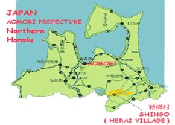
“我们再接着谈我们那次行动的真正使命吧——这唯一要被派往地球上的使者不得不是我们中的一个人。那个死于耶路撒冷十字架上的基督，名字叫阿利欧克（Arioc）。”
“他在自愿改变肉体之后，被我们带到了居地亚的沙漠。这样，他就失去了他的两性身体。他原来的身体已经在海奥华上住了很长时间了。在我们涛拉的创造下，他有了一个叫基督的肉体。用这种方法，他就完全保留了他在海奥华上得到的知识。”
“涛，为什么不保留他原来的身体而只将他缩小到和我们相似的尺寸，就像我见过的拉涛利和毕阿斯特拉缩小那样？难道他不能够在这个缩小了的身体里待足够长的时间吗？”
“这有另外考虑的，米歇，他必须在所有方面都和地球人相像。由于我们是两性人，我们不想冒险让希伯来人知道这个从上帝那儿来的使者是半个女人。我们可以随意使肉体再生，所以，你在海奥华上没见过几个孩子。我们也能够创造一个人体，就像我刚给你解释的，还能缩小他的尺寸。”
“别那么看我，米歇，我知道你很难理解所有这一切，也很难相信我的话。但是，我们已经给你提供了足够多的条件让你知道我们是能够掌握大多数自然现象的。”
“基督，来自于海奥华，被我们带到了沙漠。你知道随后的事情是怎么样了。他知道自己将面临无尽的困难，也知道自己终将被钉在十字架上。他知道这一切，因为他和我们一样预先观看了自己（在地球上）的生命旅程。他也知道他自己必须以灵体进入肉体的方式来完成这一切。”
“他记得这一切，就像你现在清楚地记得、也永远不会忘记你在姆大陆上的旅行及你前生的那些片段一样。”
“我再说一遍，由灵体在肉体中看到的景物被抹掉的方式与灵体和它的高级自我结合时所看到的景物被抹掉（过滤）的方式是不一样的。因此，他知道一切，也清楚地知道自己该做什么。他当然也有起死回生、治聋疗瞎的能力。”
“他最终被钉在十字架上……后来是我们推开坟墓的石头，并将他很快地带到我们停在附近的飞船上的，我们就是在那里将他复活了。”
“在时机到来时，他又出现了，因此证明了他的不死，表明他的的确确能死而复生。通过这些事实说服人们——他的确是属于神灵的、以及我们每个人都有神灵的神性（divinity），从而使人们心中重新燃起希望之火。”
“这就是说，基督的所有神迹都是为了证明他给我们的宣教是真的？”
“是呀。因为，如果他不能证明他自己，希伯来人及罗马人就永远不会相信他！”
“有一个很好的例子可用来说明你们地球人的怀疑心有多重，这就是图林的裹尸布（Shroud of
Turin）的例子。虽然成千上万的人都相信基督的到来及他的所作所为，或多或少相信基督教，他们仍然渴望着专家们的研究结果——基督‘死’后，他身上到底有没有裹尸布？你现在已经知道答案了，但人们好寻找证据，更多的证据，更多更多的证据，就因为他们的脑子里仍然有怀疑。释迦摩尼，一个地球人，通过他自己的研究、探索获得了大智大慧，他就从来不会像你们那样说‘我相信’，而是说‘我知道’。”
“信仰从来都不是完美的，而知识却如此完美（Faith is never perfect but knowledge is.）。”
“当你回到地球，给人们讲你的故事的时候，你会碰到的第一个问题就是证据。如果我们真的给了你，比如说，给你一块地球上不存在的金属，在那些检验它的专家们中间，也仍然会有人坚持要你证明那金属不是你所认识的、哪一位聪明的炼金术士创造的——或一些诸如此类的问题。”
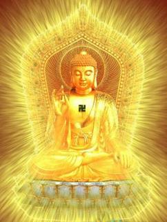
“你们会给我一些证据吗？”
“米歇，别让我失望了。你不会有物质证据，完全因为我刚才给你讲的那个原因——一点用处都没有。”
“信仰是没法和知识相比的。释迦摩尼说他‘知道’，当你回到地球后，你也有能力说‘我知道’就行了。”
“有个著名的故事，是关于怀疑专家托马斯（Thomas）的——他想触摸基督的伤口，因为，以他自己的眼睛看见伤口并不足以说服他；但是，当他触摸了伤口，他还是会怀疑，他怀疑那是某种魔术伎俩。你们地球上的人们一点都不知道自然的本质。米歇，如果出现了一些多少让你们不理解的事情，任何人都会说那是魔术。抗地心引力是魔术、不可见现象是魔术，可我们只不过在运用着自然规律。反过来，你们应该说，抗引力技术是知识；不可见现象是知识。”
“再来说基督吧。基督被派到地球上宣讲博爱和精神修养后，他不得不与那些精神修养层次不高的人们辩论，给他们讲寓言和譬喻。他翻倒商人在神庙的桌子是他第一次，也是仅有的一次生气。他生气地宣讲了金钱的罪恶。”
“他的任务是宣讲博爱和慈祥、善良，爱这一个也应爱那一个（Love one another )
，以及让人们明白关于灵体轮回和不灭的知识。关于生命轮回和灵魂不灭的这一切知识都被随后的牧师们歪曲了。《圣经》中众多的矛盾导致了众多教派的出现，家家都声称它们跟随的才是真正的基督的教诲。”
“基督教徒在数个世纪中，曾以上帝的名义进行过屠杀，天主教的宗教法庭（Inquisition）就是一个例子；西班牙在墨西哥的天主教比大多数奴隶部落还坏，但他们的一切行为仍然打着上帝和基督的旗号。”
“正如我说过的和证明过的——宗教是你们星球上真正的祸害！地球上的那些宗教团体也是如此，现在正在全世界萌芽、泛滥，他们就是通过洗脑来控制人们的。”
“现在的年轻人神志清楚、身体健康，却拜倒在那些自称为宗师（Gurus）和大师的脚下，而后者已经变成了只不过是两样东西的大师——漫天大话和聚集多不胜数的金钱！当然，这些都使他们有了权力，也能自豪地看着自己不仅在肉体上，也在精神上奴役那些顺从者。”
“不久前，曾有一个（宗教）头目要求追随者们自杀，他们还真的服从了。由于在地球上的人们喜欢证据，这就是一个极好的例子——宇宙规律不允许自杀——如果这个大师是个真的，他就应该知道这一点，而这些就成了证明他无知的最大的‘证据’。”
“宗教和教派往往是人类的灾祸根源。当你看到教皇一掷千金地旅游，而他实际上根本就不必花费这么多。当他的巨额花费本来可以用于帮助正处于饥荒的人们的时候，你没法说服我这是基督的教诲和要求。”
“《圣经》中有一段话说：骆驼钻针眼也比富人上天堂更容易。梵蒂岗无疑是你们地球上最富有的教堂，然而牧师们照样在哭穷。他们不害怕被处罚（虽然他们相信上帝会处罚），因为他们说是教堂富有而不是他自己富有。这是狡辩，难道不是他们组成了教堂？这简直就好比一个百万富翁的儿子说他不富有而只是他父亲富有一样。”
“天主教并没有在《圣经》中歪曲有关财富的章节，然而他们却利用了它——因为富人变穷一点而教堂变富一点，难道这不好吗？”
“地球上的年轻一代正处在自我选择的十字路口。他们已经到了一个关键点——社会已将他们带到了这里。我知道他们孤独，比以前任何年轻一代都孤独。但必须明白，参加宗教组织和教派是不会使他们摆脱孤独心理的。”
“如果你想‘提升’自己，你必须禅定和专注。它们常常被混为一谈，其实二者是不同的。你不必找特殊的场地——最伟大、最漂亮的庙宇就在自己心里。”
“通过专注练习，人们可以在心里与自己的第二级自我对话，请它帮助解决在物质世界里碰到的难以解决的问题或困难。但还是会有一些人，他们需要和别人对话交流，他们为此而聚集在一起。那些有较多经验的人，当然会提供建议，但是没有一个人应该处于‘大师’的位置。”
“大师在两千年前来过——或者我应该说，诸大师之一曾来过，但人们将他钉死在了十字架上。但是，在大约300年的时间里，他带来的信息、知识还是被人们接受了。在那以后，他的教诲就被歪曲了。你们现在的地球已经到了这么一个时期，一个比两千年前更槽糕的时期。”
“我刚提到的年轻人，是你们星球上成长着的一代，他们正在渐渐地认识到我一直在讲的、许多事情的真实性。但他们还必须学会‘从内心找答案’。他们不应当等待来自于其它地方的帮助，否则会‘失望’的。”
涛说完后，我清楚地看到她的辉光变得暗淡了。
外面，雨已经停了。太阳照在巨大的白云上面，使它发出蓝色和粉红色的光芒。树枝在微风中飘摇，树叶上的水滴中荡漾着万千道彩虹，使整个林子显得生气勃勃。鸟儿甜美的歌声混杂着昆虫轻柔的音乐声和光线的色彩，欢迎着太阳的重新到来。这景色漂亮极了，是我从未见到过的。我们俩谁都不想说话，任由我们的灵魂尽情地享受着我们周围的美丽。
突然，一阵欢乐的笑声将我们从宁静中惊醒。回头一看，原来是毕阿斯特拉、拉涛利和拉梯奴斯来了，她们都用她们的塔拉飞着。
她们在蛋形屋前着了地，径自进了门，满脸绽露着笑容。我们起身迎接她们，互相以海奥华的语言问了好。我仍然能听明白这些语言，虽然我不会讲这种语言。这好像没多大关系，因为我没有什么要说。而且，就是我讲法语，她们也能感应到我的意思。
喝完水麦，我们就准备动身了。我戴上面罩，随她们大伙儿出了门。拉涛利走向我，在我的手腕上戴了一个塔拉，又交给我右手一个利梯欧拉克。一想到就要像鸟儿那样飞翔，我兴奋不已——从我登上这个星球的第一天起，看到人们用这种方式飞行，我就梦想过有一天我也能同样飞行。但是，这么多事情发生的这么快，使得我相信，也必须承认，自己不再指望有这种机会了。
“拉涛利”，我问道，“你们所有的人几乎都有抗地心引力的能力，为什么你还要用塔拉和利梯欧拉克飞行呢？”
“抗引力需要极大的专注力并消耗很多能量的，米歇。就是对我们来说，那也只能每小时飞行七公里。所以，只是在进行某些灵性锻炼过程中我们才会使用抗引力能力，这不是一种合适的运输方式。而这些装置应用的是同样的抗引力原理，它能中和我们所称的这个星球上的‘冷磁力’，也就是你们所称的重力。冷磁力会将物体拉向地面。”
“人，像一块岩石一样，是由物质（matter）组成的。但是，通过增加某种高频振动来中和冷磁力，我们就可以变得‘无重量’了。之后，为了控制运动和方向，我们使用不同的频率。正如你所看到的，制作完成这个目的的装置对我们来说相当简单。这同样的原理曾被你们地球上的建筑师们应用于修建姆大陆、大西洲以及埃及金字塔。涛已经给你讲过这些，但现在你将自己体验这抗引力的感受。”
“用这些装置可以达到什么样的速度？”
“用这个特殊型号，你可以达到大约每小时300公里的速度及任意高度。但我们该走了，她们在等着我们呢。”
“你觉得我会掌握它吗？”
“当然，我会教你的。但一开始你可得千万小心，如果你不能极仔细地按我的要求去做的话，你会出大事的！”
所有人都在看着我，但似乎只有拉梯奴斯对我忐忑不安的样子发乐。我将利梯欧拉克紧紧地握在手中，它的安全带就系在我的前臂上。就是说，万一我松了手，它也不会掉了。
我的嗓子都干了，我不得不承认自己并没有多少自信。但拉涛利朝我走来，一只胳膊搂住我的腰，向我保证说，她只会在我熟悉了这装置之后才会松开我的。他还给我解释说，我不必留意手腕上的塔拉，但应该把利梯欧拉克紧紧抓住。首先得紧紧地按一个大按钮，那是个启动装置——有些像汽车的启动钥匙，一个小灯亮了就表示启动就绪。利梯欧拉克的样子很像个梨子，小头朝下，大头朝前像个蘑菇‘帽子’。不用说是为了避免手指打滑。手握在这‘梨子’的颈部。拉涛利解释说，这利梯欧拉克是专门为我设计制造的，因为我的手只有她们的一半大，我用不了她们的标准型号。使用者的手必须和它的尺寸相配，这一点很重要。它握在手中的感觉有点软，好像是装满水的皮球。
听完讲解，我牢牢握住利梯欧拉克，一窜就升到了约两米高的空中，使得拉涛利差一点没能在我升空之前抓住我。其它人都在两米高的空中附近，她们不禁失声大笑起吃惊的拉涛利。
“小心！”，涛对她说，“米歇可是个说干就干的实干家，你给他手里放个什么装置，他马上就要试的！
“如果你按压利梯欧拉克像你刚才那样，以平稳均匀的力量，你就会垂直上升；如用手指稍用点力，你会向左；而用你的拇指，你会向右。如果要降落，你可以松力；要降得更快一些，你可以用左手压它的基底部。”
她一边说，一边让我练习运动方向。我们一直升到大约有50米高，听到涛说：“好极了！米歇。你该让他自己操作，拉涛利，他知道怎么作了。”
我根本不希望涛把这些话说出来，我一点都不同意她的观点，因为在拉涛利的‘翅膀’保护下，我才能觉得安全和自信——我不是在说调皮话！
她现在真的放开了我，但还是保持在我附近同一高度。
我轻轻地松了一下利梯欧拉克，我就停止了上升；松得多一些，我就开始下降。有信心之后，我均匀地压了一下利梯欧拉克的‘颈部’，我立刻向箭一样射了出去——射的那么远，以至于我紧张的手指都冻住了，而我也就持续上升。
“松一下手，米歇，松一下手！”拉涛利大声喊着，一眨眼她就又到了我的身边。我停了下来。此时已几乎到了海洋上空二百米的高度了，就因为自己无意地因冻僵的手压的重了些。其它人也飞上来，在这个高度和我们汇合了。我的脸色肯定十分奇怪，因为连拉梯奴斯都忍不住大笑了。这是我第一次见她笑。
“轻点，米歇，这装置非常灵敏。我们继续上路吧，我们给你带路。”
她们慢慢朝前飞去了。拉涛利仍保持在我身边，和我同一高度。我用手掌压利梯欧拉克，我就平稳地向前飞了。我很快就注意到，只要我调节压利梯欧拉克的压力，我能随意加速。手指压力调节着高度和方向。但我仍然会出现一些意料之外的歪扭，特别是当我的注意力被吸引到飞在我们前面的三个人时。
在相遇的时候，她们瞅了我一眼，明显地对我的样子感到吃惊或好笑。
大约半小时后，我开始掌握了这个装置，至少是能成功地飞越海洋了。一切都正常之后，我们就渐渐地加了速，我甚至能在我的同伴旁边和她们列成队形飞行，而不必过多地担心离队了。
这一切都是如此爽心，我从来都没有想象过这种感觉。由于这种装置在我周围制造出了一种力场，使我失去了重量，也就没有悬浮在空中的感觉了——就像在热气球中的那种悬浮感，当然也没有那种长着翅膀飞行的感觉。
更进一步讲，我甚至感觉不到风吹到脸上的感觉，只觉得我好像成了周围环境的一部分。越使用它，我就越觉得欢喜、快乐。我想试一试我的控制能力，就稍稍下降了一点，然后又上升一些。如此多次，使我比她们高一些或低一些。最后，我飞到涛身边，用心灵感应告诉她我现在的愉快心情，让她知道我打算擦着我们脚下的海水飞行。
大海此时一望无际。以每小时100公里的速度在浪巅飞行的感觉真是妙极了。我们全都好像是力大无比的上帝和重力的征服者。时不时地，脚下有银色的闪光，那是海中成群的鱼儿。
激动中，我忘记了时间，但那次飞行好像花了三个贴斯（tlerces，海奥华的时间单位）。
不管我朝那边看，看到的只有地平线。涛用心灵感应告诉我说：“看那边，米歇！”
远处，我能从水面上辨认出一个斑点。它迅速地变得越来越大，原来是个相当大的岛。我们很快就看到了岛上蓝黑色的岩石，高耸着插入蓝绿色的海水中。我们上升了高度，全岛景色尽收眼底。那儿没有海滩，岸边都是巨大的黑色岩石，使得从海上登陆是不可能的。海水在岩石脚下撞的粉碎，在阳光下形成虹晕，在那玄武岩黑色的背景上反射出美丽多彩的色彩。
岛上有个湖，湖水是祖母绿色的。面对湖的半山坡上，有着巨大的森林。它们的叶子是奇怪的黑蓝色和黄色，树干却是红色的。湖水的表面被团团金色的雾霭遮盖着。在湖的中央，我能辨认出一个蛋形屋。它好像是浮在水面上的，尖端朝上。后来我知道它的直径有560米。
那巨大的尺寸还不是它的主要特点，它的色彩更奇特。我在此前看到的所有的蛋形屋都是白色的——连九圣城中的那些蛋形屋也是如此。然而这一个，好像是由纯金做成的，在阳光下闪着金光。虽然外形平常，它的色彩和尺寸使它庄严辉煌。
还有使我更吃惊的事——湖水中没有这蛋形屋的倒影！
我的同伴们领着我在水面上慢慢地朝这蛋形屋飞去。从这个方位看，它给人的印象更为深刻。和其它的蛋形屋不同的是——这个蛋形屋连个指示入口的标志都没有。我跟着涛和拉涛利，她们一闪就进了里面。
其它两个人在我旁边，一人抓着我的一条胳膊使我不至于掉到水中——因为我完全被眼前的景色惊呆了，出乎意料地将利梯欧拉克松了手。
下面是我在这蛋形屋中看到的：
我看到大约有200个人漂浮在空中，看不见任何支撑和悬挂物。他们好像是在深睡或禅坐着。离我最近的人离水面有六米高，因为在这蛋形屋中没有地板，底部全是水。正如我以前解释过的，一旦进入里面我们可以看到外面，就好像在我们和外面之间什么也没有一样。所以，我能看到湖的全景、湖边的山岗和森林，连同我身边的这些漂浮着的200来人。你肯定会意识到，这一切是极其让人吃惊的。
我的同伴们在静静地注视着我，不像以前其它时候那样——我的迷惑曾使她们大笑，开始这次她们很严肃。
更仔细地看这些身体，我开始注意到他们的身材普遍比我的同伴们小。有些有着相当不寻常、甚至是奇特怪异的形状。
“他们在干什么，是在禅坐吗？”我对涛耳语道，她就在我身边。
“拿起你的利梯欧拉克，米歇，它就挂在你的胳膊上。”
我服从了。她然后回答了我的问题。“他们死了，这些是尸体。”
“死的？什么时候死的？他们是一起死的吗？发生意外事故啦？”
“有些尸体在这儿已经数千年了。最近的，我想，放到这儿才60年。我认为，以你现在这魂不附体的状态，你没法适当地操纵你的利梯欧拉克，我和拉涛利来领着你吧。”
他们每人抓住我一条胳膊，我们开始在这些尸体中漫步，他们全都毫无例外地是裸体的。
在他们中间，我看到有一个人也是禅坐姿势，头发长且呈红黄色，有金色的皮肤。他站起来大概有两米高，外形简直像个男人——他的确是个男人而不是两性人。
稍远处躺着一个女人，皮肤粗糙像蛇，或像树皮。她显得很年轻，虽然奇异的相貌使人难辨她的年龄。她的皮肤是菊黄色的，而她的又短又少的头发是绿色的。最奇怪的是她的乳房。乳房奇大，每个乳房上都有两个乳头，相距十厘米左右。她的高度该有一米八，臀部细瘦但富有肌肉，小腿相当短，尽管她的手脚完全像我们，但每只脚都有三个特大的脚趾。
我们从这一个飞到那一个，有时停下来，有时继续走，就像是在腊像馆参观一样。
“他们是从哪里来的？”我悄悄地问。
“从不同的星球上。”
我们在一个人的尸体前停留了一些时间。很明显，他是在‘生命’的顶峰期。他有淡淡的板栗色的头发，长而卷曲。他的手脚像我们一样，皮肤是一种熟悉的肤色——是地球上的一些人的肤色。他的身高大约有一米八，面部平坦，有种高贵的气质，下巴上还有山羊胡子。
我转向涛，她的眼光盯在我身上。“他大概是从地球上来的。”我说。
“要说是，他就是；要说不是，他就不是。你应该很熟悉他，因为你会常常听到人们提到他。”
我的好奇心被激发起来了。我更仔细地辨认着他的脸，直到涛用心灵感应告诉我说：看看他的手、脚以及他的肋部。涛和拉涛利将我带到离尸体更近的地方，我现在能非常清楚地看到他的脚和手腕上的伤痕，他的肋骨处有大约20厘米长的深伤口。
“他怎么啦？”
“他被钉到十字架上了，米歇，这就是我们早上说起的基督的身体。”
幸好我的主人们估计到了我的反应，一直在扶着我，因为听了她所说的，我就根本没有能力操纵自己的利梯欧拉克了。
我眼前的居然就是基督的尸体！一个被地球上如此多的人崇拜和谈及的人——在过去两千多年里引发了如此多矛盾、冲突并导致了如此多研究的主题人物！
我靠前想摸这尸体，但被我的同伴们制止了，他们将我拉开。
“你不是托马斯，你为什么必须摸他？你脑子里仍然有疑问吗？”涛问道，“你看，你的行动证明了我今早所说的——你在寻找证据！”
我羞的无地自容，我对自己刚才的举动感到羞耻。
涛理解我的懊悔。“我知道，米歇，那是本能的，我能理解。任何情况下你都不能触摸这些尸体，除了那七位圣贤涛拉中的一位以外，没有人可以。事实上，是涛拉将这些尸体设计制作成了现在你所看到的这么个漂浮保存状态的。他们有这个能力。”
“这些是他们活着时候的、真实的肉体吗？”
“当然。”
“但他们是怎么保存的呢？这儿有多少尸体，为什么要保存它们？”
“你应该记得，当我们将你从你们地球上带来时，你问了一些问题，说我们会不会给你答案。我当时曾解释说，你将会学会所有你应该知道的，但有些事情将仍然会留作‘谜’，因为你决不能说出某些事情。你刚刚问的那个问题，就因为这个特殊的原因而不能回答你。但是，我还是可以告诉你的是，这里有147具尸体。”
我知道，我再坚持也没用，但我还是问了另一个尖锐的问题：“你们有摩西的尸体吗？为什么这些尸体都要保存在漂浮状态，而且下面没有地板？”
“我们只有地球上基督的尸体。将它们置于漂浮状态是为了将它们完全防腐。这湖水的性质也是为了帮助保存的。”
“其它人是谁？”
“它们来自于不同的星球，在那里他们每个人都有过非常重要的使命。”
其中一个尸体我记得很清楚。他大约只有50厘米高，前额上长着一种角。除了深黄色的皮肤和没有眼睛以外，样子很像地球人类。我问涛，他怎么看东西？她回答说，他那突出物的末端有两只眼，是复眼，像苍蝇的眼睛一样。我这才看到那闭着的眼皮上有数道裂缝。
“大自然真是非常奇怪。”我嘟嚷道。
“我说过，你在这儿看到的每个尸体，都来自于不同的星球。是他们所不得不生存的环境决定着那星球上居住者的躯体细节的。”
“我看不到有哪个像阿尔卡依。”
“你永远看不到。”
不知道为什么我‘感觉到’自己不应该再坚持谈论这个问题了。
在这次阴森可怕的访问过程中，我看到了有点像北美洲红印第安人的尸体——但他们不是；我也看到其它一些像非洲黑人、日本人，但他们也不是。正如涛说过的，如果真要说的话，基督的尸体是唯一来自于地球的。
在这不寻常和让人眼花缭乱的地方待了记不清的时间后，我的同伴们领着我来到了外面。一股淡淡的、有森林气息的香气在微风中飘荡着，使我非常舒服。这一切之后，尽管它极其有趣，我还是感到相当疲劳了。当然了，涛完全清楚这一点，她以活泼的语气说：“好了吗？米歇，我们该回家了。”
这些话，她是有意用法语并以地道的地球人的语调讲出来的，这使我精神为之一振，其作用至少和那傍晚的微风一样。我握紧我的利梯欧拉克，就和同伴们上升到了空中……
我们飞过山坡上巨大的森林。在山顶，我又一次感到了大海的广漠。有这次可怕的、震惊的旅行作对比，我发现这个星球更加美丽了。记得一瞬间，我又感觉到——所有这一切也许是个梦或幻觉，要么是自己神志错乱了?!
像往常一样，涛作为我的向导，以直接了当的指令关照着我。那些指令经心灵感应出现在我的脑海中，就像被鞭子抽打一般驱散了我那模糊的疑虑：“米歇，如果不压你的利梯欧拉克，你可能会掉下去洗澡的！而且，如果我们不抓紧时间，夜晚就会把我们吞噬的，那你可就有点不舒服了，对不？”
的确，一失神我就落了下去，几乎碰到了水面。我紧紧地按着我的利梯欧拉克，立刻就像箭一样追上了她们，她们都在高空。
太阳已经很低了。天空清澈，海水现在是一片让人吃惊的菊黄色。我从未想到过海水会有这种色调。我心里嘀咕着，这到底是怎么回事？经心灵感应我被告知说，有时在一天的某些时候，数量巨大的菊黄色浮游生物会浮出海面。这里的海水中，似乎有着数不胜数的浮游生物。这景色是——蓝绿色的天空、菊黄色的海水，而所有的这一切都被包裹在金色的光线之中，而这光线来自于这个星球的四面八方。
我的同伴们非常突然地升高了高度，我赶快跟上了她们。我们在大约1000米的高度加速，以大约每小时300公里的速度向我们来的方向飞去——我猜那应该是北方。
朝着太阳落下的方向看去，我辨认出水面上有一条白黑相间的带子。我没必要问，回答很快就来了——“那是奴柔卡（Nuroaka），一块大陆，像整个亚洲一样大。”
“我们要到哪儿看看吗？”心里说。涛没有回答，这使我惊讶，这是她第一次不理我的问题。我以为我的心灵感应能力不足了，就又问了一句，用法语，还提高了语调。
“看那边！”她说。
转过头，我看到一大片有着艳丽色彩的鸟儿从我们的前边穿过。由于害怕撞着它们，我降低了好几百米。它们以不可思议的速度从我旁边掠过，但我不明白这是由于它们、还是由于我们飞的太快了，我想可能是由于我们共同作用的结果吧。
这速度使它们消失的如此快，但就在这时，发生了使人极度震惊的事——我抬头一看，涛和其它人仍然保持着原来的高度。她们怎么没有和这些有着宽大翅膀的鸟儿相撞呢？我瞪了一眼涛，我知道她明白我的思绪。我意识到那些鸟儿出现得实在太是时候了——就在我提问题的时候！
由于熟悉了涛，我知道她‘忽悠’了我，但那肯定是有原因的。我也就暂且把这事放到一边不去想了，就决定好好利用这次没有翅膀的机会飞一把。
我陶醉在了四周那美丽的色彩之中，随着太阳朝地平线落下，这些美丽的色彩也在不断地变化着。
天空中布满了淡淡的、优美的彩色粉笔般的色调，如此壮丽，如此美妙，反正我的笔是描写不出来的。我本以为自己已见过了这个星球上所有可能看到的色泽、色调和颜色，但实际上还是错了。
从我的高度看，天空中那色彩的效果迷人极了。它们有时和海洋形成鲜明的对比，而有时又互相补衬，更加完美。多美妙呀，大自然能够演绎出这一系列的色彩，而且总是在不断变化着，但又总是那么美丽。我又感觉到自己像刚喝过酒时的那种迷迷糊糊，这种感觉以前曾使我晕晕噩噩。
我又接到了命令，简短而清晰：“立刻闭上你的眼睛，米歇！”
我服从了，醉酒的感觉消失了。但闭着眼可不好操纵利梯欧拉克和掌握姿势——特别是当一个人还是这方面的新手时更是如此。不可避免地，我一会儿偏左，一会儿偏右，又升又降。
又是另一个指令，这次不那么急迫了：“看着拉梯奴斯的后背，米歇，眼睛别离开她的翅膀！”
我睁开眼，看见拉梯奴斯在我前面。奇怪，但没有让我多大吃惊——她拍打着黑色的翅膀，我全神贯注地盯着它们。一会儿，涛飞到我的跟前，用法语说，“我们就要到了，米歇，跟着我们。”
我觉得同样自然，就是拉梯奴斯又没有了翅膀。
我随着大伙儿向下飞去，我也认出了我的蛋形屋所在的那个小岛，它像块在多彩的桌布上放着的宝石一般。
太阳已经下沉到了波涛里，我们很快就进入了一片燃烧着的、火焰般的色彩之中。我赶紧朝我的蛋形屋飞去。由于色彩的美妙所引起的、那种沉醉的感觉又威胁着我，像要将我吞噬掉似的，我不得不又半闭着眼睛。
我们现在是在水面上飞行，不一会就飞过了沙滩，穿入了围绕我住处的那些树林中。可是，我的着陆却不那么成功——我是跨过一张椅子的后背穿入蛋形屋的。
拉涛利立刻就来到了我身边，她压了一下我的利梯欧拉克，问我没事吧？
“有啊，就是这些色彩！”我结结巴巴地说道。
没有人笑我的小事故，每个人都显得有些忧伤，这对她们来说实在太不寻常了，我被搞得糊里糊涂的。大家全都坐了下来，喝了一些水麦，吃了一些红色和绿色的蔬菜。我并不觉得很饿。
我取下了头罩，开始觉得我又像我自己了。
夜晚很快就降临了，在海奥华上也一样，我们就在黑暗中坐着。我记得我曾怀疑过，在我仅能够大略辨认出她们每个人的位置时，她们能不能在夜间能像在白天一样看我？现在证明这都是事实。
没有人说话，我们都静静地坐着。抬头，我能看见星星们闪烁着各种各样的色彩，就像焰火在天空中绽放之后被‘固定’在了天空一般。在海奥华，由于大气层中气体的层次、成份都和我们地球上的不一样，星星看上去也就要大得多、亮得多。
我突然打破了静默，很自然地问道：“地球在哪儿？”
就好像整个小组都在等着我这个问题似的，她们全都扬起了手。拉涛利抱起我，像是抱一个小孩一样。我们来到了外边，其它人在前面带着路，我们沿着宽宽的小径来到了海边。在岸边潮湿的沙子上，拉涛利把我放了下来。
一分钟又一分钟，天空中的星星越来越多，好像有一只巨手在点蜡烛一般。涛走近我，几乎是用耳语对我开了口，那声音中带着一种伤感，以至于我几乎都辨别不出那是她的声音。
“你能看到那四颗星星吗？米歇，就在地平线上，它们几乎形成了一个正方形。右上方那颗绿绿的，比旁边的明亮一些的星星？”
“是的，我想那是——是的，它们形成了个正方形——绿色的，是的。”
“现在看这正方形的右边，稍高一些，你能看到两个距离很近的红色星星。”
“是的。”
“看着右边那一颗，再稍稍向上一点，你能看到一颗白色的小星吗？得仔细辨认才能看得到。”
“我也这么想，是啊。”
“在它的左边偏上一点，有一颗黄色的小星星。”
“是，对的。”
“那颗白色的小星就是照亮地球的太阳。”
“那地球呢？”
“从这儿看不到，米歇，我们离的太远了。”
我待在那儿，盯着那颗小小的星星，它在天空中那些又大、又亮丽的“宝石”中间是多么微不足道呀！但就是那颗小星，也许在此时正温暖着我的房子、我的家庭,使植物发芽、生长……
“我的家庭”——这词显得如此陌生。澳大利亚——从这儿看，我很难想象它是我们星球上最大的岛，特别是当用肉眼看不到地球的时候。但是，她们告诉我，我们同属于一个银河系，而宇宙中有成千上万个银河系。
我们是什么？是可怜的人？
哎，只不过是个原子罢了。
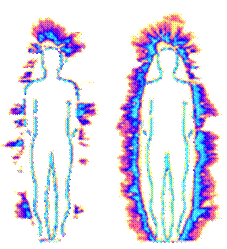
屋顶的白铁片在骄阳的照耀下叽嘎作响，就是在走廊里，也热的让人难以忍受。我看着花园中光线和阴影，听着鸟儿们飞过蓝色发白的天空时的歌声，我感到一些忧伤。
我刚刚才在这本书第十二章的末尾划上了最后一个句号。
我被要求写这本书，这任务对我来说并不那么容易。有时想不起细节了，我就得花好几小时努力回想涛告诉我的那些事情，特别是她希望我写出来的那些事情。之后，就在我一筹莫展的时侯，所有的信息就又会回到了我的脑子里，包括所有的细节，就好像有个声音在我的肩膀上口授着每个单词。这时，我就会一鼓作气直写到双手抽筋。在每次大约三小时的时间里，有时多一些，有时又少一些，印象中的那些东西会涌满我的脑子。
在写书的时候，单词在我的脑子里互相冲撞。我常常想，要是我懂速记该多好。现在，这奇怪的念头又来了。
“你在哪儿？涛？”我会这么问。可从来没有得到过回答。
“是你们中的其它人吗？涛？毕阿斯特拉？拉涛利？拉梯奴斯？我乞求你们给我一个信号、一个声音，求求你们了！”
“你叫我？”
我刚才声音太大了。我的妻子跑了进来，站在我面前，仔细地观察着我。
“不，不是。”
“你得间断着写，对不？你得照顾你自己。要是你这本书结束了、你完全回到地球上，我会很高兴的！”
她走开了，可怜的利娜。前面这几个月，她的日子也不那么好过。我想，她为什么也得受这份折腾？
有天早晨起床后，她发现我躺在沙发上，面色死灰，呼吸困难，昏沉欲睡。我问她，见没见过我的笔记本。
“见了”，她说，“但你放到哪儿啦？”
“我知道你很难相信这些。但我确实是被外星人选出来、并被带到他们的星球上去了。我会告诉你一切的，但现在求求你，就让我睡一觉，能睡多久就多久。我现在得去睡觉了，我躺在这儿就是怕吵醒你。”
“你这么累，不是由于其它原因吗？”她的声调又苦又甜，我能感觉到她的关心。但她还是让我睡了一觉，睡了足足36个小时。醒来发现，利娜俯身看着我，那担忧的神情简直像护士在观察着垂危的病人！
“你怎么样？”她问道，“我差点儿要喊医生了。你过去从来没睡过这么长时间，睡得连个身都没翻一个——你一直做着梦，睡觉还喊叫，你喊的‘阿尔卡依’是谁？还有‘涛’？你能告诉我吗？”
我朝她笑了笑，吻了她一下，“我会告诉你所有的事情的。”
我想到，成千上万的丈夫和妻子肯定在说着同样的话，却没有想过解释任何事情。但愿我没有说了一些不怎么世俗和平凡的话。“好啊，我听着呢！”
“好，你必须仔细听。因为我说的是很严肃的事情，非常严肃！但我不想将同样的故事讲两遍，叫儿子进来吧，我可以给你们俩一起讲。”
三小时后，我基本上讲完了我那不寻常的旅行。
利娜，她是家里最不容易轻信这种事的人，根据我的表情和声音里的某些语调，也觉得我的确碰到过极其重大的事。当一个人爱另一个人长达27年之后，有些事情是不会被误解的。他们，特别是儿子，向我提了很多问题。他向来就认为其它星球上会有高智能的生物。
“你有证据吗？”利娜问道。这使我想起了涛的话“他们搜集证据，米歇，没完没了地搜集。”这问题现在来自于我自己的妻子，使我多少有点失望。
“没有，一点儿都没有。但是，当你读了我必须写的书后，你会知道我说的都是真实的。你没有必要‘相信’，但你会‘知道’的。”
“要是我告诉我的朋友说，我丈夫刚从海奥华星球回来，你能想象出她们的反应吗？”
我要求她不要对任何人讲，因为我的任务首先是写书，而不是先去演讲。我觉得任何情况下那样都会好一些，因为——说过的话会随风飘走，而写下的东西永远存在。
数月过去了，现在书已经写完，剩下的就是发表了。在这点上，涛肯定地说过——会有些问题的。这是在我返回地球途中的飞船上，当我问一个问题时她的回答。
“飞船”这个词给我脑子里带来了多少事情。
……
动身前的最后一个夜晚，在沙滩上，涛给我指了一颗微微发光的星星，说那是我们的太阳，可现在它把我烤得大汗淋漓！之后，我们乘飞台朝宇航中心飞去。
行动匆匆。一路上谁也没有说一句话，一艘宇宙飞船正在待命。
就在这简短的行程中，我在黑暗中注意到，我的同伴们的辉光不像平常那么亮了，色彩浅淡，光层变薄。我好生奇怪，但我什么也没有说。
“在你没有能力听懂多种语言和看到辉光的时候，有这种能力不是更好吗？我指的是能够读懂辉光的含义，而不仅仅指能看到它。”
我接受了她的解释，但毕竟还是有些失望，因为，我发觉自己很快就习惯了她们身上的辉光。
“别伤心，米歇。”涛说，她知道我在想什么，“在你们的星球上，绝大多数人没有明亮的辉光——根本没有。你们最关心的是物质享受，因此辉光相当暗淡，你会失望的。”
我仔细地端详着她，心里非常清楚——我很快就再也见不到她了。尽管她身材高大，四肢却极其匀称。漂亮可爱的脸上没有一丝皱纹；她的嘴、鼻子、眉毛……所有的一切都是那么完美。突然，一个长时间存在于我的潜意识中的问题，现在几乎是必然地冒出来了。
“涛，你们都是两性人，这有什么特殊的原因吗？”
“有啊，而且很重要，米歇。如果你不问这个问题那才怪哩。”
“你知道，我们生活在一个超级星球上。我们所拥有的一切物质也是高级的，这你已经看到了。我们的各种身体，包括肉体，也必须是高级的。在这个领域里，我们已经进化到了最大的限度。我们可以激活我们的肉体，使它免得一死。我们可以使它复活，还可以创造它。但人体里还有其它层次的身体，如宇宙体（Astral
body）一共有九层，或九重，或九种身体。此刻我们感兴趣的是液态身体（fluidic body）和生理身体（physiological
body）。”
“液态身体影响着生理身体，而生理身体又影响着物理身体（Physical body）。”
“在液态身体中，有六个主要的部位，我们叫作Karoas，就是你们瑜伽（Yoga）师们所称的生命能中心（Chakras）。第一个中心位于双目之间，鼻子上方一点五厘米的地方，可以把它比喻成是液态身体的‘大脑’。它与松果体相关联，而后者在你大脑中和这第一中心在同一水平线上。涛拉就是将他的手指放在你的这个中心上,给你灌输进去理解多种语言的能力的。”
“在液态身体的底部，恰好在性器官的上方，有另一个非常重要的生命能中心，我们叫它为Mouladhara，瑜伽师叫它为第六中心，尾骨中心（sacred）。在这个地方，与脊柱相遇的地方，是性感传导器（Palantius）。它像个螺旋状的弹簧，只有在松弛时才能触及脊柱的根部。”
“要让它松弛，重要的是要有完美的两性生活。性交双方不但必须相爱，而且要在精神上密切相融。只有这样及在这种情况下，性感传导器才会伸长，触及脊柱，向生理身体传输能量及特别的礼物（欢喜愉悦的信号）。之后，生理身体才会作用于物理身体。享受这种性生活的人们体验到的性快感比一般的人要强烈。”
“在你们星球上，当你听到那些深深相爱的人们说‘我们刚到过天堂’、‘我们曾看到了光’或‘我们曾在空中漂浮’等等，你完全可以相信，这一对爱人是在物理及精神上都达到了一致及‘互相融合’了——至少是那会儿。”
“地球上佛教的密宗（Tantrists）明白这一点，但他们能做到这一点的人数不多，因为他们的宗教有着滑稽可笑的仪式和戒律，妨碍了他们达到这个目的。他们只见森林不见树！（When
they look at the forest，they
don't see the trees.) ”
“我们再接着谈相爱的那对儿吧。男方体验到了极大的快乐，由于这种爱是真实不虚和绝对相融的，那快乐被转化成了有益的振动再传导到性感传导器。所有这些感觉，在性生活完成后就停止了。快感对女方是不一样的，但反应过程相同。”
“现在我来回答你的问题。由于我们的身体既是男的，又是女的，我们可以任意刺激男性和女性的这种感觉。而且，我们体验到的性快感的程度和层次都要比你们单性人要强的多和高的多。进一步讲，我们的液态身体会处在它最佳状态。我们的外貌，毫无疑问，与其说是像男的不如说是像女的——至少从面目及乳房上看是如此。米歇，你承认不承认，一般而言，女人的脸比男人的脸更好看？我们当然也喜欢好看的，而不是毫无魅力的脸。”
“你们怎么看待同性恋？”
“同性恋，无论是男性还是女性，都是神经病患者（neurotic)（这里不是指那些由于体内激素水平有问题的人）。神经病患者不应该被责难，但像所有神经病人一样，他们应该得到治疗。总而言之，米歇，想一想自然规律（Nature），你自己会知道答案的。”
“神灵给了所有有生命的东西繁殖的可能性，所以各类物种才能得以繁衍不断。按照神灵的意愿，所有的种系都有着雌雄两性。但是，对人类而言，为了刚刚解释过的原因，他加了一些其它物种所没有的、特殊的东西。”
“比如，女性在性高潮时会像鲜花开放一样，她获得了一系列的快感，这些感受都能使性感传导器松弛，再通过液态身体引起其它如物理身体的改善。这种现象每月可以发生多天、多次而不必怀孕。”
“而牛就不同，母牛只能在每月的某些小时内才会接受公牛。之后，也仅仅是由于繁殖的本能才驱使它们完成那些动作。怀有牛仔后，她就不再乐意接受公牛的‘建议’了。这不是神灵所创造的、两个产品之间的、相当好的比较吗？第一个是个相当特殊的生物，有九重身体；而第二个只有三重。”
“显然，神灵在这里花了特殊的心思，给我们的身体里加了更多的东西，当然，这不仅仅是物理身体的。在你们的星球上，这些东西有时被称为‘神性活力’（divine
sparks）——这真是个不错的比喻。”
“那你怎么看故意坠胎呢？那是个自然行为吗？”
“不，当然不是！那你为什么还要问，你已经知道答案了。”
我记得当时涛坐在那儿待了好长时间，就像是出了神似的。她看着我，一言不发。之后，她说道：“在你们地球上大约有一百四十年来，人类加速着天地万物的摧毁和环境污染，这些自从蒸汽机和内燃机出现以来就有了。在这种情况变得不可逆转以来，你们却没有多少时间来阻止污染。”
“地球上主要的污染之一是汽油引擎，它当然可以立刻被燃氢引擎所代替。就是说，后者不引起污染。在其它一些星球上，燃氢引擎被称为‘清洁引擎’。这种引擎的原型已经在你们地球上由不同的技师们分别研制出来了，但它们还得成品化和商品化才能替代汽油引擎。这不但意味着在目前水平上由内燃机废气造成的污染将有70％的下降，而且对用户来说也更经济。”
“大汽油公司对这些燃氢引擎的大众化极为恐慌，因为这意味着他们的汽油销售将要下降，以至使他们最终破产。政府也同样担心，因为他们对汽油征收巨额税收。你看，米歇，什么都和钱有关。正因为你们有一整套经济和财务的互联网络，因此它对抗着地球上那些对人类生活都有好处的重要活动。”
“地球上的人们容忍着被政治和经济卡特尔（cartel，企业联合体）驱使、愚弄、剥削以及被领着走向屠宰场。卡特尔有时甚至和大的、有名的宗教有关联。”
“当这些卡特尔在给人们进行洗脑的广告宣传中失败时，他们会努力通过政治渠道，再经宗教渠道或通过将二者巧妙结合来达到自己的目的。”
“因此，想为人类作一些什么事的那些伟大的人们很容易被踢开。马丁·路德·金（Martin
Luther
King）和甘地（Ghandi）都是例子。”
“但是，地球上的人们不应当再被这些人当笨蛋愚弄了，也不能被当权者们像赶羊群那样被赶向屠宰场。而那些当权者，还是民主选举出来的呢！人民毕竟是国家的大多数，在一个有一亿人口的国家里，大约只要一千人的财政管理人员就能决定其它人的命运——就像屠夫在屠宰场一样，这是多么荒唐的事实呀。”
“就是这些人完全彻底地窒息了燃氢引擎的应世，使它不再被提及。”
“这些人不应当回避你们地球上将来要发生的事情。他们自私地追求着利润，指望着‘不管发生什么事情’只会发生在他们死后，而不是在他们在世的时候。他们都认为，如果地球完了，如发生什么可怕的大洪水的时候，他们自己早死了，管他呢。”
“他们在这儿犯了一个极大的错误。因为，未来灾难的根源就是污染，它在你们地球上与日俱增。它的后果很快就要出现了——快得你都根本想象不了。地球人决不可这么做，就像小孩不可玩火柴一样。小孩没有经验，尽管被禁止，他还是玩了火柴而烧了自己。一旦烧了，他就明白大人说的是对的，他也就不会再玩火柴了，但他仍然得在随后的数日，遭受由于不听话而造成的皮肉被烧的痛苦。”
“不幸的是，在我们讨论的事情中，后果远比烧伤要严重得多——而是你们的整个星球都要毁掉了！你们的星球现在已处在极其危险之中，如果你们不信任那些有心帮助你们的人的话，你们没有第二次机会！”
“我们也高兴地看到，最近出现的环保运动正在得到发展和增强。地球的年轻一代在呼吁，其它有理性的人们也和他们一道参与反对污染的战斗。”
“只有一个解决办法，就是阿尔卡依告诉你的——就是将人们分散的力量联合起来！人，只有联合成群才有力量。那些你们叫做保守主义的人们正在变得越来越强，将来还会更强。但最要紧的是人们应该忘掉仇恨、愤怒，特别是他们之间的政治和种族偏见。人们必须在全世界范围内联合起来，别说那很难，因为在地球上已经有了非暴力的、非常大的国际组织——国际红十字会，它已经有效运转了好些时日了。重要的是，这些保守主义者在他们的防止环境污染的行动纲领中，不但包括反对直接的、也反对间接的环境破坏，如烟雾、交通工具的废气、工业烟雾等等。”
“大城市和工业企业的废水，即使是经过化学处理过的也是有害的，但它们也被排入了河流和海洋中了。美国的烟雾所造成的酸雨，引起了加拿大四十个湖泊的生态质量下降；同样，由于法国工厂和德国Rhur的污染也引起了北欧的灾难。”
“现在我们谈一谈另一种污染，虽然人们很容易忽视它，但它并不是无关紧要的。如圣贤涛拉告诉你的，噪音是最有毒的污染。因为它干扰你的电子结构和扰乱你的物质身体结构。”
“我还没有给你提到这些电子呢。我注意到你没怎么明白我的意思。”
“正常的灵体有大约四亿兆（four biilion
trillion）个电子。它们的生命周期大约是十亿兆年，是在宇宙形成时就出现的。你的灵体里就有它们。当你死后，它们的19％将和宇宙中的电子结合，最后按宇宙法则组成新的人体、树木或动物。其余的81％将与你的第二级自我相汇合。”
“我基本上听不懂你所说的。”我打断她的话。
“我知道，但我在努力解释帮助你理解。灵体不完全是你们所说的什么纯精神的（Pure
Spirit）。在地球上，人们相信精神不是什么（物质），这不对。灵体是由电子组成的，它们的分布形状与你的物质躯体相同。每一个电子都有一个‘记忆器’，
能贮存像一个普通城市图书馆所有的书籍中所含有的、那么多的信息。”
“我看你在瞪大眼睛看着我，但事实就是如此。这些信息被记录了下来，就像一个藏有一个公司所有的企业计划的微型胶卷，间谍能把它藏在衣袖的纽扣中偷运出门。电子当然比它还要小得多得多。地球上某些物理学家已经知道了这些事实，但公众们在很大程度上，还没有机会知道这个事实。”
“你的灵体就是靠这些电子、通过你的大脑通道，在你的灵体和你的第二级自我之间接受和发送信息的。信息被转运时你丝毫不晓，就是因为从你的脑子里发出的那股微弱电流与你的电子是和谐的。”
“由于是第二级自我派灵体到你的肉体的，所以，它是从你的灵体接收信息的。这是自然的过程和程序。”
“像所有有电子的物质一样，灵体——这第二级自我的工具相当精致灵巧。在你清醒的时候，它能向第二级自我发送那些相当紧要的信息。但第二级自我需要的比那更多。因此，在你睡觉时，你的灵体会离开肉体去和你的第二级自我汇合——要么向它交上它需要的信息；要么接受它下达的信息和指令。”
“在法语里你们有一种古老的说法——‘夜晚到，主意到’（the night brings counsel）。这种说法就来自于普通的经验。多年之后，人们注意到清晨清醒的时候，脑子里往往就有了解决问题的办法。”
“有时候是这样，但有时候却不是这样。如果这个‘办法’有利于第二级自我，你放心，它会提供给你的；如果不是，你等也没用。”
“现在，人们通过非常高级的和特殊的训练，能够使灵体与肉体脱离。有这种能力的人会看到光，看到他的肉体，好像在看他自己。同时，也能看到灵体，有银蓝色的光线连接着灵体与肉体。这光线就是由灵体的电子组成的。”
“我知道你已经明白了我这些话的真正意思了。让我最后再解释一下噪音的危害。噪音直接侵害了你的灵体电子，借用无线电和电视的术语来说就是“寄生斑”（parasite）。如果你看电视屏幕，注意到屏幕上的白色斑点，那就是‘寄生斑’。如果隔壁有人在使用电动工具，这些斑点就会增大，甚至图像会被完全破坏。”
“同样的事情会发生在灵体中。但遗憾的是，你不能像看电视屏幕那样看到它们。更槽的是，噪音严重损害着你的电子。当人们说，“唉，我习惯了。”的时候，就意味着他的大脑是‘紧张’着的。你的精神会激发自我防护，而灵体却不会，这些‘寄生斑’损害了你的电子。它们，当然也就会对你的第二级自我造成灾害性的影响。”
“传到你耳朵里的声音非常重要。一段特定的音乐，会把你激发到一个舒适安乐的状态；而另一些音乐，虽然也蛮好听，却对你没有影响，甚至反而使你不安。”
“我们来做这么一个试验——选一段你喜欢的小提琴、钢琴或笛子音乐，同时把它的音量放到最大。这时，你的鼓膜受的罪决没有你的身体内部受的罪大。地球上的大多数人都认为噪音是个可忽视的污染，但摩托废气管的噪音比它排出的废气的毒性要大3～4倍！虽然毒气影响你的呼吸系统，而噪音却是在影响你的灵体。”
“可惜无法把你的灵体用照片照下来，所以人们不在乎它。”
“由于你们地球人喜欢证据，让他们这么考虑——有一个公认诚实的人，从不骗人，他说他看到了鬼。其实，他所看到的是那些还没有重新组成灵体的那19％的电子，这些电子在死后三天内从肉体上分离，由于某种静电作用的结果，这些电子可能被看到，而且也有着像肉体一样的形状。在被大自然重新利用之前，它们是‘空’的，但它们也有记忆，就转回去寻找它们知道的地方——那些它们（他们）喜欢的或憎恨的地方。”
“包括憎恨的？”
“对，但如果我们真的对这个主题感兴趣的话，你要写的就不仅是一本书，而是两本书了。”
“你能看到我的未来吗？你当然能了，因为你完全有能力做那些非常困难的事情。”
“你说的对。我们能够‘预先’看到你的整个一生，一直到你现在的肉体死亡。”
“我什么时候死？”
“你很清楚我不会告诉你的，却为什么还要明知故问呢？知道未来是很糟糕的事。那些被告知他们未来的人，犯了双倍的错误——第一，算命的也许是个江湖骗子；第二，知道将来是违反自然法则（Nature）的。不然的话，我们的知识也就不会被‘抹掉记忆之河’给抹掉了。”
“许多人相信星星的影响，他们按照占星术的符号行事。你怎么看？”对此，涛没有回答，但她笑了。
……
整个回程像去的时候一样，但我们没有停留，我又能再次欣赏那些形形色色的太阳、行星、慧星了……
当我问涛“我能不能再经过另一层时空回到地球？”时，他的回答是肯定的。我纳闷——为什么她说这是最好的方式，因为那样她们就不必由于碰到任何人而发生麻烦。
在离开不多不少九天之后，我被重新送回了我的花园。
又一次，在半夜。
我将这个后记加在三年前完成的书稿后面。
在这三年里，我未能将之印刷发表出去。后来遇到澳大利亚阿拉福拉出版社（Arafura Publishing )，他们有勇气发表这不寻常的、独特的故事。
那段时间对我很难，而且出乎我的意料。我和涛没有任何接触，也没有给过我任何信号，无论是躯体接触或者经心灵感应都没有。不过有一次，在凯恩斯（Cairns）出现过她奇怪的幽影，毫无疑问，这是她们有意表明仍在注视着我，但也没有给我留下任何信息。
我现在意识到，本书的迟迟发表也是她们预先计划或有意安排好了的。因此，随着一连串相关事件的出现，涛只化了两个月就使我的书吸引了最合适的出版商的注意。因为三年以前，世界还没有可能接受这本书，而现在是时候了。猛一看，似乎有些奇怪，但我觉得这很自然。由于我了解她们，我知道她们有能力将事件安排得准确到最后一秒——如果这样会有最佳效果的话。
在这三年里，我曾让我的几个朋友和熟人看过本书稿。在这期间，我完全明白了为什么她们希望我写这本书，以及为什么还要把我的躯体也带到她们星球的原因了。我坚持要用“躯体”这个词，是因为最常见的问题是——“你肯定是在做梦；你肯定作了一连串的梦。”
不管是什么样的反应，凡读过书稿的人都被它的内容所震撼。大体上有三种读者：
第一种，也是绝大多数，仍然不相信我去过另一个星球，但他们承认这本书使他们震撼了、感动了。但他们说：“不管怎么说，到底有没有这回事不是很重要，重要的是你在书中提供的、不可估量的信息。”
第二种，是上面那些人中的一部分。他们连续把书稿读了三遍，相信了书中所讲的一切都是事实。这些读者是对的。
第三种，是那些在读这本书之前就已经有了相当程度的、有关方面知识的和修养的人。他们从一开始就知道这是真实的故事。
我在此还是坚持给读者们一句忠言：这本书必须读，而且要一读再读，连读三遍。在大约十五个人读过本书稿的人当中，几乎每个人都有些话要说，而且对我提出了很多详细的问题。我的一个朋友是德国一所大学的心理学教授，她也把本书稿读了三遍，现在还在她的床头柜上放着。如果有读者感兴趣，我可以点出她的姓名来。
但是，我还是有这么一个朋友，他的反应真让我生气，但幸亏只有一例。他问我：“宇宙飞船是由螺钉还是由铆钉组装起来的？”还问我：“在海奥华上，有没有电报发射天线？”我曾强烈建议他再读一遍书稿。他的另一个评语是：“书中应该描写更多的宇宙飞船或星球之间的战争，用的是些飞弹及其它致命武器。人们喜欢的就是这些。”我不得不提醒他说：“这不是一本科幻小说。”在这种情况下，我实在不认为我的朋友真的读懂了这本书，他实在应该读一些别的书。他也没有理解和接受这类信息的基础心理。不幸的是，这种人可能不止他一个。
如果读者感兴趣的是什么战争冲突、流血事件、性爱、暴力、星球爆炸和巨兽怪物，对不起，你浪费了你的时间和金钱——你应该买一本科幻小说。这一点我在前言中就曾提到过了。
如果读者已经认识到了这不是一本科幻小说，我劝你以一种反常的思维，也就是说以客观的、积极的、探讨的心理，把这本书再读一遍。只有这样，你才不会浪费你的时间和金钱。反言之，就你所花的钱而言，你将会得到你生命中最伟大的报酬——精神上的而不是物质上的——难道这不是最好的报酬吗？”
读过本书稿的人们曾向我提出了许多关于宗教方面的问题，特别是关于基督教的，对此我不得不再加以解释。
如果你是宗教徒，特别是基督教徒，如果你被所指出的《圣经》中的那些错误所震惊，特别是被那个钉死在十字架上的、基督的真实身份所震撼，我很抱歉。但我必须强调，这本书的本意并不是要有意揭任何宗教组织的短。而且，这不是我自己的观察所见，而是涛一字一句“叮嘱”我的，还有来自于涛拉大师的。她们要求我将她们给我解释的事情准确地记录下来，而不应改动任何东西。我只是遵命行事。
我和涛之间曾有过许多关于其它方面的交谈，但那些内容并没有被包括在这本书里。相信我，她们在任何方面都比我们先进。在那儿，我曾学到了比写在这本书里的、还要重要的东西，但我不能把它们写出来，因为我们根本理解不了。但是，我得趁此机会在这篇后记中阐述一些我自己的观点。
我必须提醒读者注意以下几点非常重要的地方：
我曾听到一些关于这本书的议论，对这我不以为然——“他以为他是新基督。”、“他是个圣人（Great
Guru），我们应该跟从他的学说和教义。”或者“你应该成立一个新教派（Ashram），事情就好办多了。”，更有甚者，“你应当建立一个新宗教”等等。
我只能替这些人辩解，他们中的许多人只是听说过我的特殊旅行，而并没有真的读懂这本书。
我必须一而再、再而三地强调——这本书必须一读再读，连读数次。
像上帝和造物主这一类非常重要的事情，人们怎么就那么乐意听别人谈论，而不是离开喧嚣的公众场合、自己坐下来静静地读一读这本书呢？他们本来是有时间这么做的。要知道，“说出去的话出口就没了，而写下的话怎么都还在。”（the
spoken word vanishes, but the written word remains.）。
他们为什么热衷于以这本书的内容为教义来组成新的宗教团体和组织？我们这个星球上已经有过成百上千种宗教了，还不算多吗，而它们都没有起多大作用！不是吗？
穆斯林和罗马天主教之间在十字军时期的战争，不就是打着上帝和宗教的旗号的吗？
西班牙天主教徒的抢劫、污辱、掠夺墨西哥阿兹特克（Aztecs）民族，不就是因为后者不信奉天主教吗？尽管阿兹特克人在当时的文明程度其实还是很高的。他们也有他们自己的宗教，虽然也不怎么样，因为他们用成千上万的人当祭品来供奉他们的上帝！如果你还记得，这和巴卡拉梯尼人在100万年以前在非洲北部独立时期所作的事情一模一样。
那些企图控制人们的牧师们，曾对这些不同的宗教作过认真的研究，其目的还不是能使他们继续享有更大的权力和财富?!
任何宗教领袖都像政治家，他们同样傲慢自大，渴望权力——基督骑着一头驴(Christ
mounted a donkey)，死在十字架上，一个宗教就产生了。驴子变成了Rolls-Royce……梵蒂岗成了世界上最富有的一个权力王国。
在政治界，伪善的政治家热衷于人们的恭维、夸奖，追求财富和权力。其实这样的人很多，只有这一切都到手时他们才会满足，似乎永远也不会满足。那么，那些成千上百万被他们愚弄的人民怎么样啦？他们得到满足了吗？
涛告诉我说，这本书不仅是要开导这个星球上的人们，也是为了使我们的眼睛睁大些，使人们能意识到自己周围都发生了什么。
对于我们容忍少数政治家误导我们的行为，涛和她们表示了极大的关切。这些政治家们老练圆滑，使我们以为我们是自由的、民主的、公平的和公正的。可是按照宇宙法则来说，我们连一群羔羊都不如！虽然我们有时偏离了轨道，自以为我们是自由的，其实那不过是个幻觉，因为我们最终进了屠宰场还丝毫不觉。
政治家口中的民主只不过是个烟幕。大多数政治家心目中都有三个上帝——权力、荣誉和财富。但是，他们毕竟还是害怕民众的，因为，就像阿尔卡依（第十章）讲的例子，成群的民众如果行动方式得当的话，民众会达到他们的目的的。苏联的共产党政权现在不也垮台了吗？而且全世界都知道，克格勃是一个邪恶的强权组织。
但是，我必须承认，我的而不是我们的朋友们——就是由于让这些人“活动”着才避免了无尽的流血可能。我知道这一点已经很久了。他们也许极巧妙地阻止了这本书的出版，才使我有现在这个机会将这篇后记附在这里。
记住，人类生来就有选择的自由，而所有的集权统治集团都否认这一点。它们总有一天会垮台的，建议你们注意一下中国……
许多国家的当权者们，虽然他们是以所谓的民主方式选举出来的，一旦得到了权力也就我行我素了，做他们自己想做的事情。法国政府就是一个例子。它仍然在太平洋里试验核武器，使放射性物质污染了我们星球上最后一个大型自然资源——海洋。
据可靠消息，在慕茹柔（Mururoa）的法国科学家们非常担心‘巨型化'（gigantism）动物的出现，因为放射性物质已经影响了一些鱼种，特别是鹦鹉鱼，这种鱼的体积已经变得有正常的三倍大了！但愿这种现象不要出现在我们海洋中的大白鲨身上！
更进一步讲，如果你仔细留意一下在慕茹柔的那些水下核爆炸的时间，你就会注意到——在核爆数小时后（通常是2～4天），地球上某个地方就总有高强度的地震发生……
法国政治家们因而将对全球造成数世纪的灾难！我为自己是个法国人而感到羞耻和惭愧！
萨达姆·候塞因下令将数百口油井点燃的时候，也对全球人类犯下了弥天大罪。他也必须接受对他在入侵科威特期间的残暴行为的审判。对这一切，联合国又作了些什么？
巴西政府在有计划地摧毁着亚玛逊雨林和他们自己的未来，他们犯的也是全球性的罪行。
嘴里说着这种“社会的政治和管理体制必须改变”的人们却什么也没有做！所有的人都在发牢骚和抱怨我们差劲的司法制度。它当然不好，法律及其它有关的事情似乎是为了那些歹徒们的利益制定的。
你还记得巴卡拉梯尼人的刑法制度？它可不像阿兹特克的刑法制度。前者的制度最好，就因为它非常有效。
光说“体制不好，他们应该改变”根本不够。他们——当我们说他们的时候，他们又是谁？立法议员？政府首脑？可所有这些人都是我们、是你选出来的。要改变这个体制，法律必须修改，相关的领导人也得更换。你必须强迫那些代表你的政治家们改变那些无效的、不起作用的法律，把那些无效的体制永远地改变过来。
政治家们总是喜欢原地踏步，而不愿承担他们自己的责任。每一项法律的制定和修改都要做极多的工作并承担责任，而这些对他们来说往往是太难了——就像涛说的，他们大多数人处在那个位置，就是为了权力、名声和金钱。假如真期望有好的政治家，那就把政治家的工资削减到一个乡镇银行经理的水平，这时，你就会发现没有几个政治家会留下来；但留下来的这些人，就会是正直、诚实和真心为人民的人。
你就是那些选举这些政治家的人。我们的大多数人都已经忍耐得够多的了，可是，他们并没有做他们对我们国家所应该作的事情。总有一天，公民们必须迫使他们做下次选举之前他们本应该做的事情——实践他们对那些选举他们的大多数人所承诺的事情，普通公民们也要强迫政治家们承担他们的责任，他们必须承担。
千万注意，我们在此不是谈无政府主义，而是在讲原则。作为一个国家，我们需要纪律。但我们需要的不是集权统治而是民主，一个说话算话的民主体制。如果说话不算数，就该你采取行动了，因为，让政治家们在位时使千百万民众失望、和在下次选举前继续愚弄着人们是说不过去的。
这些大政治家们最好做他们自己的工作，而不是将80％的时间花在讨论他自己的党内的政策上。
人们常说‘我们能做什么？我们什么也做不了！’这完全错了。普通人能够、也必须要求那些民选的和联邦的政府完成他们的任务，他们也就是因为这些承诺而被选的。
普通人也有巨大的能力。如阿尔卡依所说的（第十章）人民所具有的巨大的力量，多亏他们的智慧是“韧性”的（the
Power
of Inertia），那是一个巨大的武器——非暴力的力量，这也是最好的办法，因为暴力只会带来更多的暴力。基督说过——靠剑活着的人终将被剑所杀。
在中国北京，一个人能够毫无武装而挡住一辆坦克。他怎么能做到这一点呢？因为坦克上的士兵们不敢从他的身上碾过，他们被这个毫无武装的人的自杀性行为震摄住了。数百万的人们都在电视上看到了这个镜头。
甘地曾有效地制止了可怕的流血惨案的发生，茂特班特（Mountbatten）君王自己也意识到了。如果他派五万人的军队去坎库塔（Calcutta），他们将会被屠杀。而甘地独自一人，通过非暴力行为就避免了可能的流血事件。
在阿尔卡依的星球上，人们用所谓‘有故障’的车辆堵塞了交通，而这种车辆有万辆之多。警察知道那是故意的，但没办法。但如有救火车或救护车到来，人们就会将自己的车辆推到路边，让开路。之后又将车辆推回路上。
这是韧性的抗议！他们不动、不吃、不喊，他们无声地抗议着法律和命令。当然，他们说：当然愿意将路腾开，但没有机械，没办法呀！就这样，整个国家都瘫痪了。他们没有横幅标语，没有口号，也没有呼喊或谩骂，只有无声的反抗。
让我们一起来作一个小试验，你就会知道我说的到底是什么意思了。准备好了吗？
我想买价值276元的货，我交了500元，店主找回了234元。幸亏你不是那店主，否则你要亏损10元钱。我举这么个例子是想知道，看你是不是那些看到这一段就停下来检查、计算的人。如果你这么做了，说明你不是一个人云亦云的人；如果你不是，你最好现在就改变你的行为。
你是一个有神性的人（Divine
fragment），应为此自豪，而不要再像只羔羊。
你已经将这本书从头读到了尾，这好极了！因为，这说明你感兴趣的不只是你的牛排、土豆条、汉堡包、泡菜或啤酒——你做对了！
下面，我将对全世界成千上万的年轻人再讲一些话。涛要我写的任何东西，以及我现在加上的这部份，都同样对大家适用，但我现在还要加一些特别与年轻人有关的话。
年轻的朋友们，大批大批的你们失去了希望，甚至失业了，无聊地居住在拥挤的城镇里。你们为什么就不会想彻底改变一下你们的生活方式？与其待在郁闷的、不健康的环境中，为什么不自己组织起来走一条全新的道路？
在此，我特别指的是澳大利亚，因为我不完全知道其它国家有什么样的自然资源，但我这里所说的方法适用于所有的国家。
组织起来，和政府签订一个为期九十九年的一块可耕土地的租用合同（有这样的土地的，相信我）。这样，你们就可以创立一个集体农场（communal
farms），达到自给自足。你会满足和自豪地向你们周围的人们表明你们不是“懒虫”，表明你们做的甚至比一个国家都要好。你们甚至可以建立一个属于自己的“王国”，以你们自己的规章和纪律来管理它。
一个好政府会乐意“鼓励”你们走正确的道路的。
当然，你们得承担责任，因为所有的轻蔑和毁谤都会冲你们而来，他们相信你们是“失望”的人。我信任你们，相信你们年轻一代会创立一个更好的、更干净的和更精神化的世界。涛拉讲的那些话你还没有忘记吧？
因此，你们必须证明你们是有责任心的，并建立自己的管理制度。从一开始就不要吸毒，你们已经知道，毒品会侵扰你们的灵体，那是你们的、真正的自我。如果你们之中有朋友陷入了那个陷阱里，但还想得到帮助的话，总会有办法救他们的。你们面前有大量的工作要做，不只是帮助你们的同伴，还要重新创立你们的生活方式，你们也会因此而发现未知的幸福。
从物质的角度来看，这样做，回归了自然，你们是第一个这么严肃认真地实践着的人们。你们需要什么来生存呢？空气、水、面包、蔬菜和其它食物。
你们会自己得到这一切而不必再使用化学制剂，以色列的“集体合作农场”也完全适用，你们会实践的更好。因为在澳大利亚，你们是多元文化的人，物质上超越别人并不成问题，重要的是你们活的幸福、活的自在。之后，在精神和娱乐方面，你们会有自己的迪斯科。你们知道，露天广场的迪斯科和城里的迪斯科同样让人感到欢乐！你们会有自己的图书馆、自己的剧场，在那里上演你们自己的戏剧；你们会有自己的娱乐活动，如象棋、乒乓球、网球、保龄球、台球、足球、射箭、击剑、冲浪、骑马、钓鱼等等；有些人喜欢古典舞蹈，而另一些人喜欢武术。你们会避免那些会引起太多怨恨的暴力游戏。你们会明白你们有数不尽的事要做，比在任何城市的街落所能做的要多得多。
瑜伽能使你在躯体上和精神上都得到极大的好处，我坚持这个观点。特别是坚持参加生命能中心（chakras）的呼吸锻炼，每天早晚各30分钟的瑜伽锻炼是非常有益的。
你们是新的一代，你们的大多数人应该明白——你们必须顺从而不是对抗大自然。当你们以合理的理由，要求保护树木的时候，大多数对抗大自然的笨蛋们会责备你们，他们会轻蔑地叫你们是“青皮虫”（greenie）或“皮皮”（pippy）。
你们应向全世界、但主要是向自己证明——你们可以实践自己的信仰。因为，当你们开始在集体农场工作的时候，你们就能够做更多的、保护自然的事情。你们甚至能创造森林。从你们中间选出有责任心的人，不是什么老板或大师，而是有责任心的人，即参谋。以民主的方式把他们选出来。我坚信，你们能够向全世界表明你们所作的工作，比由那些说话不算数的政治家们领导的整个国家都做得更好。在此，我以宇宙万物（Universe）的名义，谢谢你们。
涛告诉你（第九章）：宗教和政治是社会发展的两大障碍。因此，如果你打算给我的出版商寄去大批信件并希望我回复，或者建议我成为你们的大师、创立新的宗教，你们就好先想一想——如果你们这样做，就违背了涛拉、涛和我的本意了。
涛告诉你——最伟大的神庙在人们自己的心里。不论哪儿，在禅坐和专注练习的过程中，人们通过自己的较高级自我（Higher-self）就能随时和神灵（the
creator），即宇宙万物的创造者交流。
所以，不要再跟我说什么修教堂、庙宇、成立新教派或其它什么的。如果这样，你们会失望的。
向内心看，你们会知道自己本身具备和祂（him，指神灵——译者）交流的一切条件，因为就是祂将这一切放在了你们心里的。
最后，我想这么说，来结束我的后记——作为涛和涛拉们的谨微的侍者（humble servant），是他们要我写这本书的。
我想最后一次提醒你们：无论有什么样的宗教，无论你相信那一个，都绝对无法改变伟大的神灵（Spirit）、上帝（God）、造物主（the
Creator）（不管你称呼祂是什么）所创立的一切的。
任何宗教、任何信仰和任何书籍，甚至包括本书，都决不可能改变神灵在宇宙中建立的真理和秩序。水永远从江河流向大海，即使是哪个宗教、教派，或有成亿的人们相信，也无法违背宇宙中的真理和秩序。
唯一真理的、永恒的东西就是造物主的法则和定律（the law of the Creator），也就是祂在最初就希望的宇宙法则和定律（the Universal
Law）。祂的法则（His Law）是任何人都绝对改变不了的。
米歇·戴斯玛克特
1993年4月
这是作者一次访谈录的部分内容。
问：怎么发“海奥华”（Thiaoouba）的音？
答：Thiaoouba是英文发音，在这里“T”不发音而“b”的发音介于“B”和“V”之间。希伯来人把这个词念成“Hyehouva”。有趣的是，这个词在《圣经》里是出现频率最高的，因为这是摩西在3250年前的希伯来写《圣经》前五章时用来当作“上帝”的词。
问：你有任何物质上的证据吗？
答：你指的是“科技”吗？没有，这也正是我们的朋友不让我们知道的。
我们在地球上不需要更多物质上的科技，给我们更多科技，就像给幼儿园小孩一挺机关枪和一盒手榴弹一样。我们并不理解我们所做事情的后果和对我们自然界的影响，我们无法支配我们现在的“科技”——我们用科技来消灭彼此和这个星球。
与此相反，海奥华上的人们描述了许多令人着迷的真正的科学技术，它们是我们地球上早已在几千年前就失传了的——反重力、太空旅行、心电感应和宇宙通信、生物能和意识科学，这只是一部分例子。看起来我们的“科学”可能还需要几十年的时间才会承认这部分的可能性……
他们同时也给了我大多数地球上“奥秘”的通俗易懂的解释来写进我的书，它们中的一些只有在未来才能被解答……
问：这本书的主要信息是什么？
答：从海奥华来的信息是——物质上的科技，由于缺少了灵性知识，会把地球上的人们带向不可避免的全球性大灾难。科学技术必须帮助灵性发展而且不应被（像现在这样）用来把人们奴役在一个金钱系统和物质世界里，这两者无论如何都是暂时的。
“肤浅”是个你可以用来形容金钱系统和物质世界的非常好的词。
就现在而言，我们把我们主要的注意力放在了我们的物质身体上，但这是一个严重的错误。肉体，像其它任何物质上的东西一样，实际上是暂时的。而精神作为灵体的一部分不会死去……我们应该把精力集中于心智的发展上。
海奥华的人们也强调了我们每个人自由意志的重要性——我们每个人都有自由意志，而且是由我们自己来约束自己以获得灵性上的进步。把一个人的自由意志强加在另一个人身上，在一定程度上剥夺了那个人行使他自由意志的权利，这也是人类可以犯下的、最严重的罪行之一。
从这段陈述可以看出，我们地球上的整个社会都是建立在错误的原则上的。大多数人被强迫着过着随波逐流的生活……这本书不止对这种现状的诊断有一番描述，还告诉了我们该做什么和怎样做的细节。特别是，同样的问题是怎么在别的类似我们的星球上解决的。我们存在的目的在这里显得尤为重要，这是由非常先进的宇宙人展示给我们的，他们自己在很久很久以前就经过了我们现在的进化阶段。
问：我们有机会去海奥华吗？
答：海奥华上的人们大概每100年左右会带我们中的一个到他们的星球。你不会想去那里的。（注：米歇在谈到海奥华时总是感到很悲伤。想象一个天堂就在眼前，接着你却被告知这不是为你准备的。他想要留在那里，但是他不能。而当他回来时，他发现自己真正站在了地球上许多人的对立面——和他对立的有科学、爱好、宗教、生活方式等等……甚至所有UFO研究工作人员……还有他的家人。有时候当你知道了真相，生活反而会变得很艰难。）
问：海奥华上的厕所什么样子？
答：海奥华上的人们使用一种看起来像是我们冲水马桶的装置，但不是冲水马桶。它把排泄物简简单单地分解掉了——我猜是分解成了一些基本元素。不用水、不用纸、没异味，什么也没有。（注：米歇很害怕这个机器会把他的隐私部位也分解掉……）
问：海奥华的人们带来了爱的信息，那么在平行宇宙杀人怎么解释？
答：人们被困在平行宇宙里达几千年之久，杀了他们对他们来说有点像一种恩惠，因为这释放了他们的灵体使之可以在轮回之路上继续前进。如果他们没有被杀死，就没有可能从那里出来学习知识，他们就会一直在那里存活，直到星球毁灭。这段时间将会十分漫长。其实这也没什么问题，我们有宇宙里所有的时间（大约1e22年）可以用来进化到意识之源(Source
of Consciousness)。
问：那“小灰人”和其它地球上出现的外星人是怎么回事？
答：有一些访问我们地球的人种和我们的进化水平是相似的。（注：米歇在1995年时曾经海奥华传来心灵感应，允许在美国一个电台的摄像机前讲述该话题。）
“小灰人”同样也是从一个“充满忧伤的星球”而来的，他们星球上人们的免疫系统已经完全退化了，原因是他们过了很久的“文明”生活。简单地说，他们很快就要灭绝了。
他们拥有到地球旅行所需的科学技术，而且他们来地球是来观察我们身体的免疫系统等的一系列反应的。他们这样做的原因是，我们地球人的自体免疫系统从1948年以来也在退化。“小灰人”们希望通过对我们的免疫系统的观察，来研究出拯救他们自己种族的方法。他们派了150人（不是有些人说的500万）渗透到世界上的各个地区并随身携带有监视仪器。海奥华人也注意到了这些活动，并清楚地表示，这不会给地球带来什么危险。
问：我被夹在两个世界中间不知所措，一个是物质世界，一个是精神世界。我该把自己放在哪个位置才好？
答：物质上的科技必须“协助”我们精神上的发展。如果科技被用在往我们的脑袋里塞错误的信息，比如电视、电影里宣扬的恐惧和暴力、或摧毁我们的地球这些东西上，那么科技就没有被正确地使用。
我们是真真切切地裹在我们肉体里、并经历各种课程的不朽灵体。我们存在于这个物质世界的唯一目的，就是为了我们灵性的进化。任何发生在我们身上的事情，都是这堂课的一部分。
问：海奥华在哪里？
答：海奥华很有可能在昴宿星团里（Pleiades，简称昴星团，M45）。我们的太阳在那上面几乎是看不到的。昴宿星团其实是个很特殊的星团，和其它多数星团不同，组成昴宿星团的星星之间的距离很近很近。银河系里像这样的星团非常少。
问：你的海奥华朋友对于地球上的灵性发展和宗教有什么看法？
答：所有的宗教（礼拜、仪式）都是危险的。他们在一些伟大的人物，如耶稣、释迦摩尼等，死去后，被创建出来用来给某一部分人作为取得两样东西的工具，这两样东西就是金钱和权力。宗教是地球上的一颗毒苗，因为它们带来了有关灵性发展的错误信息，它通过恐惧、虚假的宣传和宗教典礼把人们牢牢拴住，它阻止人们独立思考，它要人们人云亦云。
当你找寻真爱时，你不会找一个妓女；当你真正在找寻上帝时，你也不该参加一个打着“代表上帝”的招牌做生意的教会。
“上帝的国度在你心里。”事实就像《圣经》里写的一样，当然，久远以前的《圣经》是包含了许多有益的资讯的。不幸的是，《圣经》里许多重要的内容已经被那些希望控制人们的牧师删除、修改了。他们害怕人们得到启蒙，害怕人们变得完全自由而难以洗脑和控制。只要想象一下，如果有朝一日人们突然发现“上帝并不需要一个代理人”……
问：海奥华上有金钱吗？他们对金钱的看法怎样？
答：没有，海奥华上没有任何形式的钱币，他们说地球上的金钱系统是一个真正的诅咒。地球上的大多数人们（通过做工和借贷等方式）已完全被金钱系统俘虏了。他们终其一生都在还利息，从未意识到自己这样下去只会使这个奴役他们的系统更加牢固。
少数的个人（大概12个家族）控制着地球上的整个金钱系统，大多数人甚至不知道这些家族是哪些！这些家族用他们拥有的银行把自己巧妙地隐藏了起来——他们成功地说服地球上的大多数人相信赚钱是生命的终极目标；他们扔出部分财富让人们你争我夺，并为之攀比、攻击、杀戮、甚至战争；他们同样借钱给政府，并使得每个人成为他们手中用金钱控制的木偶。猜猜，谁又是最终的受益人？
问：海奥华上有没有学校、图书馆？
答：没有，他们甚至不用纸和笔，他们通过直接的心灵感应——大脑之间的高速交流来学习，他们与来源直接进行心灵感应以获得信息，而且他们记得住任何事情。你能想象一个所有居民都进化得如同耶稣或摩西的星球吗？
问：海奥华人看起来挺严肃的，他们平常做些什么娱乐活动？
答：大多数时间他们都很快乐，他们看起来好像每秒钟都在听到好消息。而且，他们想活多久就活多久，每时每刻看起来都是20岁。想象一下，他们在一百万年的时间里可以学到多少东西和体验多少乐趣啊！他们充裕的时间可以用来放松、冥想、在海中游水嬉戏、晒日光浴等等……我猜想，他们最喜欢做的是与意识之源结合——彻底从他们的肉体里脱离出来。
问：海奥华人穿什么？
答：海奥华上的人们都穿着与他们的辉光相称的色彩艳丽的衣服。
问：海奥华上的人们对做爱有什么看法？
答：他们说，我们只见森林不见树！看起来我们错过了重点（通过做爱与伴侣的灵性结合）。
我读了本书后的感受：
1、人投生到这个世界上是来学习的。一个乞丐一生中所学到的东西往往比一个国王要多，而一个乞丐所造的孽往往比一个国王要少。所以，没有必要攀比和羡慕他人，也没有必要自暴自弃，更没必要自卑。
2、星球可分为九级，而地球只不过是初级星球。低级星球的人爱恨交加，恨往往多于爱；而九级星球的人没有恨，只有爱。恨是恨别人的，所以恨自己不能算真正的恨；爱也应该是爱他人的（包括它），所以爱自己、爱家人不能算真正的爱。因为私心，所以憎恨；因为无私，所以大爱。
3、人的灵体也分为九级（可见九确实是宇宙数字，佛、道所说的九九归一是有相当道理的），你看到的自我是初级，而你甚至无法跟自己的二级自我在清醒、理智的状态下交换信息，尽管不论你情愿与否它们之间一直交换着！更不要说跟八、九级自我交换信息了。
4、世界上除了佛教外就没有完美的宗教了，特别是犹太教后期所派生出来的宗教更是如此（事实上都已被全面歪曲了，甚至有关轮回部分都删了），它们所谓的经文最多也不过是一部部故事书而已。但是，不管如何、也不可否认，它们的教徒对提升自身的精神层次还是有绝对的帮助的。
5、世界上的各种、各级政府和领导，不论它的体制如何，它的运转都是靠谎言来维系的。现在的世界上根本就没有一种完美的体制，也没有一个完美的政府。
6、不论你能不能看见，每个人体都在发出辉光。如果你的身心够健康、够高尚，那么，你所发出的辉光会很鲜艳、很明亮；反之，则很污秽、很暗淡，甚至发出黑光。
7、唯物论是世界上最胡扯的哲学理论，它完全背离了宇宙法则、自然规律和人生的真相。我们已被唯物主义害惨了——信仰它的结果，看看当下，人们只有物质崇拜、金钱崇拜、自私自利、享受主义，从而人心不古、世风日下，一切罪恶就这样都产生了。
8、没有什么可以怀疑的——你就是神、你就是佛、你就是上帝、你就是造物主（任何你喜欢的名称），只要你能明心见性。
----中国怪侠
看了本书后，我理解的灵体的组成，画了一张图，希望大家对此提出自己的见解和看法——
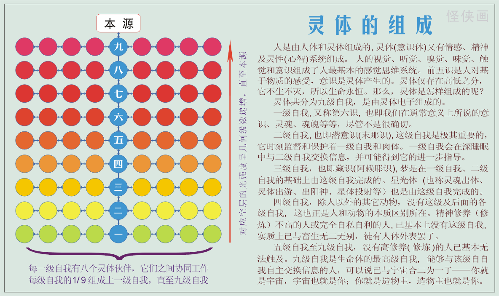
（点击可放大）
灵体的组成
人是由人体和灵体组成的,
灵体(意识体)又有情感、精神及灵性(心智)系统组成。人的视觉、听觉、嗅觉、味觉、触觉和意识组成了人最基本的感觉思维系统。前五识是人对基于物质的感受，意识是灵体产生的。灵体仅存在高低之分，它不生不灭，所以生命永恒。那么，灵体是怎样组成的呢？
灵体共分为九级自我，是由灵体电子组成的。
一级自我,
又称第六识，也即我们在通常意义上所说的意识、灵魂、魂魄等等，尽管不是很确切。
二级自我,
也即潜意识(末那识),
这级自我是极其重要的，它时刻监督和保护着一级自我和肉体。一级自我会在深睡眠中与
二级自我交换信息，并可能得到它的进一步指导。
三级自我，也即藏识(阿赖耶识),
梦是在一级自我、二级自我的基础上由这级自我完成的。星光体
(也称灵魂出体、灵体出游、出阳神、星体投射等）也是由这级自我完成的。
四级自我，除人以外的其它动物，没有这级及后面的各级自我，这也正是人和动物的本质区别所在。精神修养（修炼）不高的人或完全自私自利的人,
已基本上没有这级自我,
实质上已与畜生无二无别，徒有人体外表罢了。
五级自我至九级自我，没有高修养(修炼)的人已基本无法触及。九级自我是生命体的最高级自我。能够与该级自我自主交换信息的人，可以说已与宇宙合二为一了——你就是宇宙，宇宙也就是你；你就是造物主，造物主也就是你。
----中国怪侠